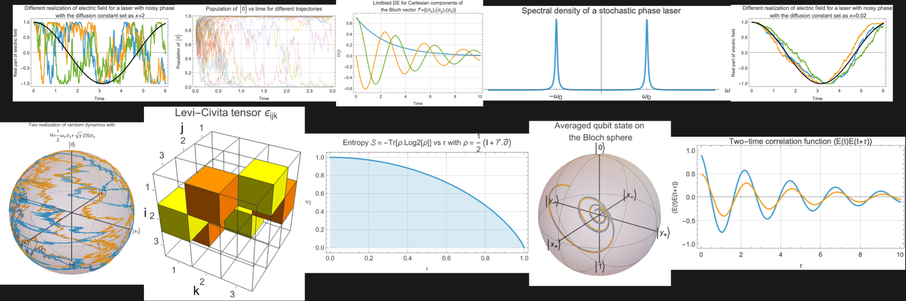

کرهٔ بلاخ، دورانهای گروه \(SU(2)\)، تحول زمانی و اندازهگیری. روایتی راهنمامحور و محاسبهمحور با زبان ولفرام
Mads Bahrami (آخرین بهروزرسانی: ۱۹ فوریهٔ ۲۰۲۶)
ولفرام ریسرچ، ایالات متحدهٔ آمریکا

این دفترچه گردشی محاسبهمحور در دنیای تککیوبیت است: اینکه چگونه توصیفِ یک فضای هیلبرتِ دوبعدی (کتها، براها و ضربهای داخلی) به گویِ هندسیِ بلاخ بدل میشود، چگونه اندازهگیری (قاعدهٔ بورن، پایههای ویژه، تصویرگرها) احتمالها را مستقیماً از دامنهها بیرون میکشد، چرا برای توصیف گردایهها (اِنسمبلها) و آمیختگی (خلوص و آنتروپی فون نویمان) ناگزیر به ماتریس چگالی هستیم، و چگونه دینامیکِ یکانی و اسپینورها در \(SU(2)\) زندگی میکنند، حال آنکه اثرِ مرئیِ آنها بر بردار بلاخ یک دورانِ \(SO(3)\) است. در این مسیر، جعبهابزارِ عملگرهای پاؤلی را گامبهگام میسازیم: هرمیتیبودن، جابهجاگرها و پادجابهجاگرها، ساختار لِوی-چیویتا، اتحادهای ضربِ پاؤلی، نماهای بستهٔ نمایی، معادلهٔ دینامیکی، فروریزشِ حالت هنگام اندازهگیری و بیش از اینها. هدف آن است که هر گزارهٔ انتزاعی بیدرنگ بهصورت محاسباتی آزمونپذیر باشد و هر نتیجه را بتوان هم جبری و هم هندسی تعبیر کرد.
به بیان دیگر، کوشیدهام فهرستی از آزمایشهای محاسباتی روی تککیوبیتها فراهم کنم: ابزارها و مثالهایی که کمک میکنند آزمایشها را بهصورت محاسباتی اجرا کنید و مستقیماً از آنچه میبینید بیاموزید. من به یادگیری از راهِ محاسبه باوری ژرف دارم: بهیکمعنا، اگر نتوانم چیزی را محاسبه کنم، نمیتوانم ادعا کنم آن را فهمیدهام. این همان ایدهٔ فاینمنوار است: فهمِ راستین آنگاه آشکار میشود که بتوانی آن کار را انجام دهی، استخراجش کنی، پیشبینیاش کنی، شبیهسازیاش کنی و تخمینش بزنی، نه آنکه فقط واژهها را تکرار یا مرور کنی.
پیش از آغاز، به چند نکته توجه کنید. محیطی که میبینید یک دفترچهٔ ولفرام (متمتیکا) است. دفترچههای ولفرام از دنبالهای از سلولها ساخته شدهاند. به سمت راستِ این دفترچه نگاه کنید تا کروشههای سلولها را ببینید. این دفترچه چنان نوشته شده که باید سلولها را از بالا به پایین ارزیابی کنید. هرچند تا جای ممکن کوشیدهام سلولهای ورودی مستقل باشند، باز هم متغیرهایی هستند که در سلولهای پیشین تعریف و در سلولهای بعدی به کار میروند؛ یعنی برخی سلولها به سلولهای پیشین وابستهاند. هنگام ارزیابیِ دفترچه باید هوای این وابستگیها را داشته باشید.
افزون بر این، داستان همچون یک فیلم بهصورت دنبالهای پیوسته روایت میشود. چند عنوان افزودهام تا گذار از موضوعی به موضوع دیگر آسانتر شود، اما از تکهتکهکردنِ روایت به بخشهای سفتوسخت پرهیز کردهام. گاه یک ویژگی یا خاصیت پیش از آنکه توضیح دهیم چرا برقرار است یا جزئیات ریاضیاش را بگشاییم، معرفی و به کار گرفته میشود. این کار عمدی است، زیرا در این دفترچه توانایی بهکارگیریِ یک ایده اغلب مهمتر از دنبالکردنِ یک اثباتِ انتزاعی در آغاز است. آهنگِ کلیِ کار چنین است: مفهوم، سپس محاسبه، سپس تعبیر.
ناگزیر، بخشی از کدهای این دفترچه در نگاه نخست پیچیده به نظر میرسند. پیشنهادم این است که پیش از نگرانی دربارهٔ تکتکِ جزئیاتِ کدِ ورودی، روی خروجی و معنای آن تمرکز کنید. همینکه فهمیدید یک قطعهکد از نظر مفهومی چه میکند، آنگاه بازگردید و چگونگیِ نوشتهشدنش را بگشایید.
به یاد داشته باشید که به کدِ دادهشده محدود نیستید. میتوانید (و بهتر است) آن را تغییر دهید، گونههای خودتان را بیازمایید و آزمایشهای عددیِ خودتان را اجرا کنید. تقریباً هر خط از این دفترچه را میتوان به چند شیوهٔ گوناگون نوشت، و کاوش در این گزینهها یکی از بهترین راههای یادگیری است.
یکی از نقاط قوتِ محیطِ دفترچهٔ ولفرام متمتیکا دقیقاً همین سبکِ تعاملی و کاوشگرانه است. اگر از نسخهٔ ابری استفاده میکنید، میتوانید روی «Make Your Own Copy» کلیک کنید تا نسخهای از دفترچه برای خودتان بسازید و آزادانه ویرایشش کنید. اگر بهصورت محلی کار میکنید، نسخهٔ خودتان را ذخیره کنید و با آن آزمایش کنید. رابطِ دفترچه رسانهای نیرومند برای اندیشیدنِ محاسباتی و شبیهسازی است؛ ارزشش را دارد که وقت بگذارید، با آن راحت شوید و واقعاً آن را همچون آزمایشگاهی برای ایدههایتان به کار ببرید.
اگر پیشنهاد یا پرسشی دارید، با ما در quantum@wolfram.com تماس بگیرید.
بیایید آغاز کنیم!
سادهترین سامانهٔ کوانتومیای که معمولاً در مکانیک کوانتومی در نظر میگیریم، سامانهای است که حالتهایش در یک فضای هیلبرتِ دوبعدی زندگی میکنند؛ همان چیزی که آن را تککیوبیت مینامیم. فضای هیلبرت یک فضای برداریِ مختلطِ مجهز به ضرب داخلی است که نسبت به نُرمِ القاشده از همان ضرب داخلی، کامل است. در چنین فضای هیلبرتِ دوبعدیای، حالتِ سامانه را میتوان به دو شیوهٔ بهظاهر همارز اما از نظر مفهومی متمایز نشان داد: برای یک سامانهٔ منزوی در یک حالتِ خالصِ معین، از یک بردار حالتِ بهنجار (یک بردار مختلطِ دومؤلفهای) استفاده میکنیم؛ و بهطور کلیتر، بهویژه هنگام توصیفِ عدمقطعیتِ کلاسیکی دربارهٔ آمادهسازی، درهمتنیدگی با محیط، یا اطلاعاتِ جزئی، از یک عملگر/ماتریسِ چگالی (یک ماتریس \(2\times 2\)) بهره میبریم که روی همان فضای هیلبرت عمل میکند و کلیترین توصیف از حالتِ یک کیوبیت را به دست میدهد. چه کیوبیت را با یک بردار حالت نشان دهیم و چه با یک ماتریس چگالی، شیءهای بنیادین از عددهای مختلط ساخته شدهاند.
یک عدد مختلط را میتوان بهصورت \(z=x+i\, y\) نوشت، که در آن \(x\) و \(y\) عددهای حقیقیاند و \(i\) واحد موهومی است که با \(i^{2}=-1\) تعریف میشود. همین عدد را میتوان به شکلِ قطبی نیز نوشت: \(z=r\, e^{i\, \varphi }\)، که در آن \(r=|z|\) قدرمطلق (اندازهٔ) \(z\) است و \(\varphi\) آرگومان (زاویهٔ) آن. مزدوجِ مختلطِ \(z\)، که با \(z^{*}\) نشان داده میشود، برابر است با \(z^{*}=x-i\, y\)، یا همارز با آن، \(z^{*}=r\, e^{-i\, \varphi }\) در شکلِ قطبی. کوتاه آنکه یک عدد مختلط دو درجهٔ آزادیِ حقیقی در خود دارد.
مزدوجِ مختلطِ \(3+2i\) را محاسبه کنید:
Conjugate[3 + 2 I]\(3+2i\) را به شکلِ قطبی بیابید:
AbsArg[3 + 2 I]بررسی کنید که شکلِ قطبی همان عدد مختلطِ اصلی است:
#1 E^(I #2) & @@ AbsArg[3 + 2 I] == 3 + 2 Iچنانکه گفته شد، عدد مختلطِ \(3+2i\) دو درجهٔ آزادی دارد: \(\{3,2\}\). با همینها میتوان شکلِ قطبیِ عدد مختلط را ساخت.
ToPolarCoordinates[{3, 2}]حاصلضربِ یک عدد مختلط در مزدوجش همواره یک عدد حقیقیِ نامنفی است. این حاصلضرب را \(z^{*}z\) یا \(z\, z^{*}\) مینویسند و معمولاً با مربعِ قدرمطلق \(|z|^{2}\) نشان میدهند. با توجه به شکلِ قطبی میتوان نوشت \(|z|^{2}=r^{2}\). نُرمِ معمولِ \(z\) (که اندازه نیز نامیده میشود) برابر است با \(\lVert z\rVert =|z|=r\).
برای یک سامانهٔ کوانتومیِ دوترازی (کیوبیت)، یک حالتِ خالص (تا یک فازِ کلیِ مختلط مانند \(e^{i\, \varphi }\)) با یک بردار مختلطِ دومؤلفهای نمایش داده میشود که معمولاً آن را بردار حالت مینامند. برای نمونه، بردارِ \(\{1/2,i\sqrt{3}/2\}\) یک حالتِ خالصِ کوانتومی را نشان میدهد. فرض میکنیم همهٔ بردارهای حالت بهنجار باشند، یعنی نُرمشان برابرِ \(1\) باشد. برای برداری مانند \(\vec{v}\) با مؤلفههای \(v_{0}\) و \(v_{1}\)، یعنی \(\vec{v}=\{v_{0},v_{1}\}\)، نُرم چنین تعریف میشود: \(||\vec{v}||=\sqrt{\vec{v}^{*}.\vec{v}}=\sqrt{|v_{0}|^{2}+|v_{1}|^{2}}\)، که در آن \(*\) نشانهٔ مزدوجِ مختلط و «\(\cdot\)» همان ضربِ نقطهایِ معمول است. مزدوجِ مختلطِ یک بردار با مزدوجکردنِ هر یک از مؤلفههایش به دست میآید.
مزدوجِ مختلطِ \(\{1/2,i\sqrt{3}/2\}\) را محاسبه کنید:
Conjugate[{1, I Sqrt[3]}/2]نُرمِ \(\{1/2,i\sqrt{3}/2\}\) را محاسبه کنید:
Norm[{1, I Sqrt[3]}/2]نُرمِ \(\{1/2,i\sqrt{3}/2\}\) را بهصراحت بهصورتِ \(\sqrt{v^{*}.v}\) محاسبه کنید:
With[{vector = {1, I Sqrt[3]}/2}, Sqrt[Conjugate[vector] . vector]]نُرمِ \(\{Cos[\theta /2],e^{i\, \phi }Sin[\theta /2]\}\) را محاسبه کنید:
FullSimplify[
Norm[{Cos[\[Theta]/2],
E^(I \[Phi]) Sin[\[Theta]/2]}], (\[Theta] | \[Phi]) \[Element]
Reals]نُرمِ بردار حالتِ \(\{\alpha ,\beta \}\) را محاسبه کنید:
Norm[{\[Alpha], \[Beta]}]از آنجا که نُرمِ یک بردار حالت خودبهخود برابرِ یک نیست، اغلب بردار را در یک عاملِ نردهایِ کلیِ (ناصفر) ضرب میکنیم، که معمولاً عاملِ بهنجارش نامیده میشود، تا حالت بهنجار شود.
بردار حالتِ \(\{\alpha ,\beta \}\) را بهنجار کنید:
Normalize[{\[Alpha], \[Beta]}]در مثالِ بالا، \(1/\sqrt{Abs[\alpha ]^{2}+Abs[\beta ]^{2}}\) عاملِ بهنجارش است.
بررسی کنید که اکنون نُرم برابرِ \(1\) است:
Norm@Normalize[{\[Alpha], \[Beta]}] // FullSimplifyچنانکه پیشتر گفتیم، برای یک کیوبیت، بردار حالت با یک بردارِ دومؤلفهایِ مختلطمقدار نمایش داده میشود، برای نمونه \(\{c_{1},\, c_{2}\}\in \mathbb{C}^{2}\). عددهای \(c_{1}\) و \(c_{2}\) را دامنههای (احتمال) مینامند. اینها ضریبهای حالتهای پایه در آن ترکیبِ خطیاند که برهمنهیِ کوانتومی را توصیف میکند.
ضربِ یک بردار حالت در یک عاملِ فازِ کلیِ مختلط \(e^{i\varphi }\) حالتِ فیزیکیِ کوانتومیای را که نمایش میدهد تغییر نمیدهد، زیرا همهٔ پیشبینیهای فیزیکی (برای نمونه، احتمالهای اندازهگیری که به مربعِ قدرمطلقِ دامنهها \(|c_{j}|^{2}\) بستگی دارند) با یک فازِ سراسری بدونتغییر میمانند.
احتمالها را محاسبه کنید و بررسی کنید که دو حالتِ \(\{\alpha ,\beta \}\) و \(e^{i\varphi }\{\alpha ,\beta \}\) از نظر فیزیکی یکیاند:
FullSimplify[
Abs[{\[Alpha], \[Beta]}]^2 ==
Abs[E^(I \[CurlyPhi]) {\[Alpha], \[Beta]}]^2, \[CurlyPhi] \
\[Element] Reals]احتمالهای اندازهگیری را بعداً بهتفصیل بررسی خواهیم کرد.
وقتی بخواهیم یک حالتِ خالصِ کلیِ تککیوبیت را بنویسیم، میتوانیم فازِ سراسری را چنان برگزینیم که مؤلفهٔ نخستِ بردار حالت حقیقی شود (گویی در شکلِ قطبی، آرگومانش را صفر گرفتهایم)، در حالی که مؤلفهٔ دوم میتواند مختلط باشد. اگر افزون بر این، بهنجاری را نیز بخواهیم، کلیترین حالتِ خالصِ کیوبیت را میتوان بهصورتِ \(\{Cos[\theta /2],e^{i\, \phi }Sin[\theta /2]\}\) نوشت، که در آن $0<=<=$ و $0<=<=2$. بهزودی، هنگام معرفیِ کرهٔ بلاخ، انگیزهٔ بهکارگیریِ \(\theta /2\) بهجای \(\theta\) را بررسی میکنیم. بیایید همین ایده را به بیانِ دیگری بازگو کنیم.
بردار حالتِ یک تککیوبیت را میتوان بهصورتِ \(\{\alpha ,\beta \}\) با \(\alpha ,\beta \in \mathbb{C}\) نوشت. این یعنی حالت با دو عدد مختلط، یعنی چهار پارامترِ حقیقی، مشخص میشود: \(\{r_{0}e^{i\, \varphi _{0}},r_{1}e^{i\, \varphi _{1}}\}\). تحمیلِ بهنجاری یک درجهٔ آزادیِ حقیقی را برمیدارد، و یکیانگاشتنِ بردارهای حالتی که فقط در یک فازِ کلیِ مختلط تفاوت دارند، یک درجهٔ آزادیِ حقیقیِ دیگر را. به زبانِ ریاضی: \(\{r_{0}\, e^{i\, \varphi _{0}},r_{1}e^{i\, \varphi _{1}}\}->1/\sqrt{r_{0}^{2}+r_{1}^{2}}\{r_{0}\, e^{i\, \varphi _{0}},r_{1}e^{i\, \varphi _{1}}\}->e^{i\, \varphi _{0}}/\sqrt{r_{0}^{2}+r_{1}^{2}}\{r_{0},r_{1}e^{i\, (\varphi _{1}-\varphi _{0})}\}->\{r,\sqrt{1-r^{2}}e^{i\, \varphi }\}\). بنابراین، یک حالتِ خالصِ کیوبیت بهطورِ کامل تنها با دو پارامترِ حقیقی مشخص میشود.
در ادبیاتِ مکانیک کوانتومی، یک بردار حالت را معمولاً با یک کت نشان میدهند. برای نمونه، \(|\psi \rangle\) میتواند یک حالتِ خالصِ کلی مانند \(|\psi \rangle=\{Cos[\theta /2],e^{i\, \phi }Sin[\theta /2]\}\) را نشان دهد. مزدوجِ هرمیتیِ (ترانهادهٔ مزدوجِ مختلطِ) یک کت را با یک برا نشان میدهند. برای حالتِ بالا، برای متناظر چنین است: \(\langle \psi |=\{Cos[\theta /2],e^{-i\, \phi }Sin[\theta /2]\}\). ضربِ داخلیِ دو حالتِ \(|\psi _{1}\rangle\) و \(|\psi _{2}\rangle\) را با ${1}|{2}$ نشان میدهند، که به معنای ضربِ نقطهایِ برای \(\langle \psi _{1}|\) در کتِ \(|\psi _{2}\rangle\) است.
\(|\psi _{1}\rangle\) و \(|\psi _{2}\rangle\) را تعریف کنید:
\[Psi]1 = {Cos[\[Theta]1/2], E^(I \[Phi]1) Sin[\[Theta]1/2]};
\[Psi]2 = {Cos[\[Theta]2/2], E^(I \[Phi]2) Sin[\[Theta]2/2]};ضربِ داخلیِ آنها را محاسبه کنید:
FullSimplify[
Conjugate[\[Psi]1] . \[Psi]2, (\[Theta]1 | \[Theta]2 | \[Phi]1 | \
\[Phi]2) \[Element] Reals]توجه کنید که متمتیکا تمایزِ «سطری در برابر ستونی» را برای فهرستهای رتبه۱ (آنچه معمولاً بردار مینامیم) به همان شکلی که جبرِ خطیِ مقدماتی اعمال میکند، تحمیل نمیکند. یک بردار بهصورتِ یک فهرستِ ساده نمایش داده میشود، نه بهصراحت همچون یک ماتریسِ سطریِ \(1\times n\) یا ماتریسِ ستونیِ \(n\times 1\). در نتیجه، Transpose اثرِ مرئیای بر یک بردار (فهرستِ یکبعدی) ندارد، حال آنکه یک ماتریس (فهرستِ دوبعدی) را با جابهجاکردنِ سطرها و ستونها تغییر میدهد.
ترانهادگی روی یک بردار را، آنگونه که در جبرِ خطی توصیف میشود، تصویر کنید:
With[{m = {{ColorData[97][1], ColorData[97][2]}}},
Row[{ArrayPlot[m, ImageSize -> Tiny, Mesh -> All, MeshStyle -> Black],
"\!\(\*OverscriptBox[\(\[LongRightArrow]\), \(Transpose\)]\)",
ArrayPlot[Transpose@m, ImageSize -> Tiny, Mesh -> All,
MeshStyle -> Black]}]]ترانهادگی روی یک ماتریس را تصویر کنید:
With[{m = {{ColorData[97][1], ColorData[97][2]}, {ColorData[97][3],
ColorData[97][4]}}},
Row[{ArrayPlot[m, ImageSize -> Tiny, Mesh -> All, MeshStyle -> Black],
"\!\(\*OverscriptBox[\(\[LongRightArrow]\), \(Transpose\)]\)",
ArrayPlot[Transpose@m, ImageSize -> Tiny, Mesh -> All,
MeshStyle -> Black]}]]اگر کسی بسیار سختگیرانه به قراردادِ جبرِ خطی برای بردارها پایبند باشد (بهصورتِ ماتریسِ سطریِ \(1\times n\) یا ماتریسِ ستونیِ \(n\times 1\))، آنگاه باید ساختاری مانند \(\vec{v}=\{\{v_{1},v_{2}\}\}\) را در نظر بگیرد. با این حال، من قراردادِ معمولِ متمتیکا با \(\vec{v}=\{v_{1},v_{2}\}\) را به کار میگیرم.
اگر کسی بسیار سختگیرانه بخواهد قراردادِ معمولِ جبرِ خطی را نگه دارد و بردارها را بهصراحت یا همچون ماتریسِ سطریِ \(1\times n\) یا ماتریسِ ستونیِ \(n\times 1\) ببیند، آنگاه نمایشِ «بردارِ سطری» همچون یک فهرستِ تودرتو میتواند سودمند باشد. برای نمونه، میتوان \(\vec{v}=\{\{v_{1},v_{2}\}\}\) را تعریف کرد که در متمتیکا یک ماتریسِ \(1\times 2\) است. در این نمایش، عملیاتی مانند Transpose دقیقاً مانندِ جبرِ خطی رفتار میکند و \(\vec{v}=\{\{v_{1},v_{2}\}\}\) را به ماتریسِ متناظرِ \(2\times 1\)، یعنی \(\vec{v}^{T}=\{\{v_{1}\},\{v_{2}\}\}\)، بدل میکند. با این حال، در ادامه قراردادِ معمولِ متمتیکا را به کار میگیرم و بردار را صرفاً همچون یک فهرستِ یکبعدی، \(\vec{v}=\{v_{1},v_{2}\}\)، نمایش میدهم، با این یادآوری که این کار تمایزِ سطری/ستونی را پنهان میکند مگر آنکه عمداً دوباره آن را وارد کنیم.
بررسی کنید که ترانهادگی \(\vec{v}=\{v_{1},v_{2}\}\) را تغییر نمیدهد:
With[{vec = Array[\[FormalV], 2]}, Transpose[vec] == vec]بررسی کنید که ترانهادگی \(\vec{v}=\{\{v_{1},v_{2}\}\}\) را تغییر میدهد:
With[{vec = Array[\[FormalV], 2]}, Transpose[{vec}] === vec]بردار حالتِ \(\{\alpha ,\beta \}\) را میتوان بهصورتِ \(\alpha \, \{1,0\}+\beta \, \{0,1\}\) نیز نوشت. هدف از این نمایش، بیانِ حالت در یک پایهٔ مشخص است. در یک فضای هیلبرتِ دوبعدی، بردارهای یکهٔ \(\{1,0\}\) و \(\{0,1\}\) یک پایهٔ یکامتعامد میسازند، یعنی هر بردار حالتی را میتوان بهصورتِ ترکیبِ خطیِ آنها نوشت. طبقِ قرارداد، معمولاً \(|0\rangle=\{1,0\}\) و \(|1\rangle=\{0,1\}\) تعریف میکنیم. پس یک حالتِ کلیِ کیوبیت را میتوان بهصورتِ \(|\psi \rangle=\alpha |0\rangle+\beta |1\rangle\) نوشت. توجه کنید که در برخی منابع قراردادِ وارون نیز به کار میرود، با \(|1\rangle=\{1,0\}\) و \(|0\rangle=\{0,1\}\). در بافتِ محاسباتِ کوانتومی، پایهٔ یکامتعامدِ استانداردی که عناصرش بردارهای یکهاند، پایهٔ محاسباتی نامیده میشود. این پایه صرفاً دفترداری نیست: متناظر با یک انتخابِ اندازهگیری است. نوشتنِ حالت در یک پایه همان راهی است که دامنهها به احتمالهای آزمایشی بدل میشوند.
میتوان با بررسیِ ضربهای داخلی تأیید کرد که \(\{1,\, 0\}\) و \(\{0,\, 1\}\) یک مجموعهٔ یکامتعامد میسازند: نُرمِ هر بردار \(1\) است و ضربِ داخلیِ آنها با یکدیگر \(0\). همارز با این، اگر پایهٔ محاسباتی را همچون ستونها (یا سطرهای) یک ماتریس بچینیم، ماتریسِ حاصل ماتریسِ همانی است، که بازتابِ همین واقعیت است که آنها یک پایهٔ یکامتعامد میسازند.
بررسی کنید که چیدنِ بردارهای پایهٔ محاسباتی همچون سطرهای یک ماتریس، ماتریسِ همانی را میدهد:
{{1, 0}, {0, 1}} == IdentityMatrix[2]بیایید روی یک بردار حالتِ کلیِ کیوبیت \(\{\alpha ,\beta \}\) با \(\alpha ,\beta \in \mathbb{C}\) تمرکز کنیم، با این فرض که بهنجار است: \(|\alpha |^{2}+|\beta |^{2}=1\). یک بردارِ حقیقیِ سهمؤلفهای چنین تعریف کنید: \(\vec{n}=\{2Re[\alpha ^{*}\, \beta ],2Im[\alpha ^{*}\, \beta ],|\alpha |^{2}-|\beta |^{2}\}\). این بردارِ \(\vec{n}\) را بردار بلاخِ متناظر با بردار حالتِ \(\{\alpha ,\, \beta \}\) مینامند.
تابعی تعریف کنید که \(\{\alpha ,\beta \}\) را میگیرد و بردار بلاخ را برمیگرداند:
ClearAll[BlochVector]
BlochVector[stateVector_?VectorQ] :=
Module[{\[Alpha], \[Beta]}, {\[Alpha], \[Beta]} =
stateVector; {2 Re[\[Beta] Conjugate@\[Alpha]],
2 Im[\[Beta] Conjugate@\[Alpha]], Abs[\[Alpha]]^2 - Abs[\[Beta]]^2}]این تعریف دلبخواهی نیست: برای یک حالتِ خالصِ بهنجارِ \(|\psi \rangle\)، سه مؤلفهٔ بردار بلاخ دقیقاً همان مقدارِ چشمداشتیِ عملگرهای پاؤلی، یعنی \(\langle \psi |\sigma _{j}|\psi \rangle\) با \(j=x,y,z\)، هستند. به همین دلیل است که بردار بلاخ عملیاتی است: همان چیزی است که میتوانید اندازه بگیرید.
بررسی کنید که نُرمِ بردار بلاخ برابر با مربعِ نُرمِ بردار حالت است:
With[{stateVector = {\[Alpha], \[Beta]}},
Norm[BlochVector[stateVector]] ==
Norm[stateVector]^2] // FullSimplifyبنابراین، نُرمِ بردار بلاخ برای یک حالتِ خالصِ بهنجار همواره \(1\) است. این یعنی، وقتی همهٔ حالتهای خالصِ بهنجارِ ممکنِ کیوبیت را در نظر بگیریم، بردارهای بلاخِ آنها روی کرهٔ یکه در سه بعد قرار میگیرند. این کرهٔ یکه را کرهٔ بلاخ مینامند (یا در بافتِ اپتیک، کرهٔ پوانکاره).
کرهٔ بلاخ را تصویر کنید:
ResourceFunction[
ResourceObject[<|"Name" -> "BlochSpherePlot",
"ShortName" -> "BlochSpherePlot",
"UUID" -> "fcb3b840-6ae5-4883-a256-1573cc958ffc",
"ResourceType" -> "Function", "Version" -> "1.0.0",
"Description" -> "Plot the Bloch sphere",
"RepositoryLocation" -> URL[
"https://www.wolframcloud.com/obj/resourcesystem/api/1.0"],
"SymbolName" -> "FunctionRepository`$\
260e867144764f229d14c35cdf9d34d9`BlochSpherePlot",
"FunctionLocation" -> CloudObject[
"https://www.wolframcloud.com/obj/858bce1b-d11f-4b5c-8673-\
c3107cef60fb"]|>, \
{ResourceSystemBase -> "https://www.wolframcloud.com/obj/\
resourcesystem/api/1.0"}]][ImageSize -> Small]چنانکه میبینید، محورها به شیوهٔ ویژهای برچسب خوردهاند. این برچسبها متناظر با کتهاییاند که حالتهای ویژهٔ ماتریسهای پاؤلی را نشان میدهند. اینها را بعداً بهتفصیل بررسی میکنیم.
البته قراردادهای گوناگونی برای نشاندادنِ این کتها وجود دارد. برای نمونه، در اپتیک رایج است که برای همین حالتها برچسبهای دیگری به کار رود، مانند آنچه متناظر با قطبشِ افقی/عمودی، قطری/پادقطری، یا دایرهایِ راست/چپِ فوتون است.
کرهٔ بلاخ را با برچسبهای اپتیک تصویر کنید:
ResourceFunction[
ResourceObject[<|"Name" -> "BlochSpherePlot",
"ShortName" -> "BlochSpherePlot",
"UUID" -> "fcb3b840-6ae5-4883-a256-1573cc958ffc",
"ResourceType" -> "Function", "Version" -> "1.0.0",
"Description" -> "Plot the Bloch sphere",
"RepositoryLocation" -> URL[
"https://www.wolframcloud.com/obj/resourcesystem/api/1.0"],
"SymbolName" -> "FunctionRepository`$\
260e867144764f229d14c35cdf9d34d9`BlochSpherePlot",
"FunctionLocation" -> CloudObject[
"https://www.wolframcloud.com/obj/858bce1b-d11f-4b5c-8673-\
c3107cef60fb"]|>, \
{ResourceSystemBase -> "https://www.wolframcloud.com/obj/\
resourcesystem/api/1.0"}]][ImageSize -> Small, "Labels" -> "Optics"]به یاد آورید که یک حالتِ خالصِ کیوبیت، در کلیترین شکلش، بهصورتِ \(|\psi \rangle=\{Cos[\theta /2],e^{i\, \phi }Sin[\theta /2]\}\) نوشته میشود. یک نتیجهٔ کلیدی این است که زاویههای \(\theta\) و \(\phi\) دقیقاً همان مختصاتِ کرویِ معمول روی کرهٔ بلاخاند. در ادامه این را با محاسبهٔ مستقیم بهصراحت نشان میدهیم.
بردار بلاخ را برای حالتِ \(|\psi \rangle=\{Cos[\theta /2],e^{i\, \phi }Sin[\theta /2]\}\) محاسبه کنید:
FullSimplify[
BlochVector[{Cos[\[Theta]/2],
E^(I \[Phi]) Sin[\[Theta]/2]}], (\[Theta] | \[Phi]) \[Element]
Reals]چنانکه میبینید، زاویههای \(\theta\) و \(\phi\) دقیقاً همان مختصاتِ کرویِ استاندارد روی کرهٔ یکهاند.
یک نقطه روی کرهٔ یکه را از مختصاتِ کروی، که با \(\{1,\theta ,\phi \}\) مشخص میشود، به مختصاتِ دکارتی تبدیل کنید:
CoordinateTransform["Spherical" -> "Cartesian", {1, \[Theta], \[Phi]}]اکنون انگیزهٔ بهکارگیریِ \(\theta /2\) در بردار حالت روشن است: اگر بهجای \(\theta /2\) از \(\theta\) استفاده میکردیم، مؤلفههای بردار بلاخ شاملِ \(2\theta\) میشدند و یک عاملِ ۲ اضافی در زاویههای کرویِ روی کرهٔ بلاخ پدید میآمد.
بردار بلاخ را برای حالتِ \(|\psi \rangle=\{Cos[\theta ],e^{i\, \phi }Sin[\theta ]\}\) محاسبه کنید:
FullSimplify[
BlochVector[{Cos[\[Theta]],
E^(I \[Phi]) Sin[\[Theta]]}], (\[Theta] | \[Phi]) \[Element] Reals]با این حال، انگیزهٔ اصلیِ انتخابِ \(\theta /2\) بهجای \(\theta\) از این واقعیت برمیخیزد که SU(2) روی بردار بلاخ همچون یک دورانِ SO(3) عمل میکند. یعنی اگر حالتِ کیوبیت را با یک یکانی (یک ماتریسِ \(2\times 2\) از \(SU(2)\)) بچرخانید، آنگاه پیکانِ متناظرِ بلاخ در فضای سهبعدیِ معمولی با یک ماتریسِ دوران \(\mathcal{R}\) (یک ماتریسِ \(3\times 3\) از \(SO(3)\)) میچرخد: از «رقصِ اسپینوری» به «رقصِ پیکانی». این را بعداً بررسی میکنیم.
پس این یک قیاسِ بسیار جالب است. بردار حالتِ کوانتومیِ \(\{Cos[\theta /2],e^{i\, \phi }Sin[\theta /2]\}\) به برداری در \(\mathbb{R}^{3}\) نگاشته میشود که بهطورِ کامل با \(\{r,\theta ,\phi \}\) پارامتری میشود، که در آن برای حالتهای خالص \(r=1\). در ادامه، دستهٔ دیگری از حالتهای کوانتومی به نامِ حالتهای آمیخته را معرفی میکنیم که متناظر با نقطههای درونِ کرهٔ بلاخاند (یعنی \(r<1\)).
بیایید دوباره به کرهٔ بلاخ نگاه کنیم.
ResourceFunction[
ResourceObject[<|"Name" -> "BlochSpherePlot",
"ShortName" -> "BlochSpherePlot",
"UUID" -> "fcb3b840-6ae5-4883-a256-1573cc958ffc",
"ResourceType" -> "Function", "Version" -> "1.0.0",
"Description" -> "Plot the Bloch sphere",
"RepositoryLocation" -> URL[
"https://www.wolframcloud.com/obj/resourcesystem/api/1.0"],
"SymbolName" -> "FunctionRepository`$\
260e867144764f229d14c35cdf9d34d9`BlochSpherePlot",
"FunctionLocation" -> CloudObject[
"https://www.wolframcloud.com/obj/858bce1b-d11f-4b5c-8673-\
c3107cef60fb"]|>, \
{ResourceSystemBase -> "https://www.wolframcloud.com/obj/\
resourcesystem/api/1.0"}]][ImageSize -> Small]چنانکه گفته شد، برچسبهای محورها متناظر با کتهاییاند که حالتهای ویژهٔ ماتریسهای پاؤلی را نشان میدهند.
شکلِ ماتریسیِ عملگرهای پاؤلی (ماتریسها) را همراه با عملگرِ همانی نشان دهید:
AssociationThread[{"\[DoubleStruckCapitalI]",
"\!\(\*SubscriptBox[\(\[Sigma]\), \(x\)]\)",
"\!\(\*SubscriptBox[\(\[Sigma]\), \(y\)]\)",
"\!\(\*SubscriptBox[\(\[Sigma]\), \(z\)]\)"},
MatrixForm /@ Table[PauliMatrix[j], {j, 0, 3}]]نمادگذاریِ رایجِ دیگری برای ماتریسهای پاؤلی \(\sigma _{1}\)، \(\sigma _{2}\) و \(\sigma _{3}\) است. توجه کنید که ماتریسِ همانی را میتوان با \(\sigma _{0}\) نشان داد. البته نمادِ رایجتر برای عملگرِ همانی \(\mathbb{I}\) است.
AssociationThread[{"\!\(\*SubscriptBox[\(\[Sigma]\), \(0\)]\)",
"\!\(\*SubscriptBox[\(\[Sigma]\), \(1\)]\)",
"\!\(\*SubscriptBox[\(\[Sigma]\), \(2\)]\)",
"\!\(\*SubscriptBox[\(\[Sigma]\), \(3\)]\)"},
MatrixForm /@ Table[PauliMatrix[j], {j, 0, 3}]]اکنون بیایید با دقتِ بیشتری بر مفهومِ حالتِ ویژه تمرکز کنیم. حالتِ ویژهٔ یک عملگر، حالتی است که وقتی عملگر روی آن عمل میکند، نتیجه همان حالت ضرب در یک ثابت است، که آن ثابت را مقدارِ ویژه مینامند. به زبانِ ریاضی اینگونه نوشته میشود: \(A|\psi _{a}\rangle=a|\psi _{a}\rangle\)، که در آن \(A\) عملگر/ماتریس است، \(|\psi _{a}\rangle\) حالتِ ویژه، و \(a\) مقدارِ ویژه.
نشان دهید \(\{1,0\}\) حالتِ ویژهٔ پاؤلی-Z با مقدارِ ویژهٔ \(+1\) است:
With[{vec = {1, 0}}, PauliMatrix[3] . vec == vec]نشان دهید \(\{0,1\}\) حالتِ ویژهٔ پاؤلی-Z با مقدارِ ویژهٔ \(-1\) است:
With[{vec = {0, 1}}, PauliMatrix[3] . vec == -vec]مقدارهای ویژهٔ پاؤلی-X را محاسبه کنید:
Eigenvalues[PauliMatrix[1]]حالتهای ویژهٔ پاؤلی-X را محاسبه کنید:
Eigenvectors[PauliMatrix[1]]نشان دهید \(\{-1,1\}\) حالتِ ویژهٔ پاؤلی-X با مقدارِ ویژهٔ \(-1\) است:
With[{vec = {-1, 1}}, PauliMatrix[1] . vec == -vec]اگر یک حالتِ ویژه را در یک ثابتِ ناصفر ضرب کنیم، همچنان حالتِ ویژهٔ همان عملگر با همان مقدارِ ویژه است.
نشان دهید \(-1/\sqrt{2}\{-1,1\}=1/\sqrt{2}\{1,-1\}\) حالتِ ویژهٔ پاؤلی-X با مقدارِ ویژهٔ \(-1\) است:
With[{vec = 1/Sqrt[2] {1, -1}}, PauliMatrix[1] . vec == -vec]نشان دهید \(1/\sqrt{2}\{1,1\}\) حالتِ ویژهٔ پاؤلی-X با مقدارِ ویژهٔ \(+1\) است:
With[{vec = 1/Sqrt[2] {1, 1}}, PauliMatrix[1] . vec == vec]بیایید حالتهای ویژهٔ بهنجارِ عملگرِ پاؤلی-X را روی کرهٔ بلاخ رسم کنیم.
ResourceFunction[
ResourceObject[<|"Name" -> "BlochSpherePlot",
"ShortName" -> "BlochSpherePlot",
"UUID" -> "fcb3b840-6ae5-4883-a256-1573cc958ffc",
"ResourceType" -> "Function", "Version" -> "1.0.0",
"Description" -> "Plot the Bloch sphere",
"RepositoryLocation" -> URL[
"https://www.wolframcloud.com/obj/resourcesystem/api/1.0"],
"SymbolName" -> "FunctionRepository`$\
260e867144764f229d14c35cdf9d34d9`BlochSpherePlot",
"FunctionLocation" -> CloudObject[
"https://www.wolframcloud.com/obj/858bce1b-d11f-4b5c-8673-\
c3107cef60fb"]|>, \
{ResourceSystemBase -> "https://www.wolframcloud.com/obj/\
resourcesystem/api/1.0"}]][Normalize /@ Eigenvectors[PauliMatrix[1]],
ImageSize -> Small]چنانکه میبینید، حالتهای ویژهٔ پاؤلی-X در راستای محورِ x روی کرهٔ بلاخ قرار میگیرند، با حالتِ ویژهٔ \(+1\) در راستای جهتِ مثبتِ x و حالتِ ویژهٔ \(-1\) در راستای جهتِ منفیِ x. توجه کنید که معمولاً آنها را با \(|x_{\pm }\rangle=\{1,\pm 1\}/\sqrt{2}\) نشان میدهند.
بردارهای بلاخِ متناظر با حالتهای ویژهٔ پاؤلی-X را محاسبه کنید:
AssociationThread[{"\!\(\*TemplateBox[{\nSubscriptBox[\"x\", \"+\"]},\
\n\"Ket\"]\)",
"\!\(\*TemplateBox[{\nSubscriptBox[\"x\", \"-\"]},\n\"Ket\"]\)"},
BlochVector@*Normalize /@ Eigenvectors[PauliMatrix[1]]]به همین شیوه، حالتهای ویژهٔ پاؤلی-Y در راستای محورِ y قرار میگیرند. معمولاً آنها را با \(|y_{\pm }\rangle=\{1,\pm i\}/\sqrt{2}\) نشان میدهند.
بردار بلاخ را برای حالتهای ویژهٔ پاؤلی-Y محاسبه کنید:
AssociationThread[{"\!\(\*TemplateBox[{\nSubscriptBox[\"y\", \"+\"]},\
\n\"Ket\"]\)",
"\!\(\*TemplateBox[{\nSubscriptBox[\"y\", \"-\"]},\n\"Ket\"]\)"},
BlochVector@*Normalize /@ Eigenvectors[PauliMatrix[2]]]حالتهای ویژهٔ پاؤلی-Y را روی کرهٔ بلاخ رسم کنید:
ResourceFunction[
ResourceObject[<|"Name" -> "BlochSpherePlot",
"ShortName" -> "BlochSpherePlot",
"UUID" -> "fcb3b840-6ae5-4883-a256-1573cc958ffc",
"ResourceType" -> "Function", "Version" -> "1.0.0",
"Description" -> "Plot the Bloch sphere",
"RepositoryLocation" -> URL[
"https://www.wolframcloud.com/obj/resourcesystem/api/1.0"],
"SymbolName" -> "FunctionRepository`$\
260e867144764f229d14c35cdf9d34d9`BlochSpherePlot",
"FunctionLocation" -> CloudObject[
"https://www.wolframcloud.com/obj/858bce1b-d11f-4b5c-8673-\
c3107cef60fb"]|>, \
{ResourceSystemBase -> "https://www.wolframcloud.com/obj/\
resourcesystem/api/1.0"}]][Normalize /@ Eigenvectors[PauliMatrix[2]],
ImageSize -> Small]حالتهای ویژهٔ پاؤلی-Y را، طبقِ قراردادی استاندارد در اپتیک و قطبشِ فوتون، با \(|R\rangle=|y_{+}\rangle\) و \(|L\rangle=|y_{-}\rangle\) نیز نشان میدهند.
حالتهای ویژهٔ پاؤلی-Y را روی کرهٔ بلاخ با برچسبهای اپتیک رسم کنید:
ResourceFunction[
ResourceObject[<|"Name" -> "BlochSpherePlot",
"ShortName" -> "BlochSpherePlot",
"UUID" -> "fcb3b840-6ae5-4883-a256-1573cc958ffc",
"ResourceType" -> "Function", "Version" -> "1.0.0",
"Description" -> "Plot the Bloch sphere",
"RepositoryLocation" -> URL[
"https://www.wolframcloud.com/obj/resourcesystem/api/1.0"],
"SymbolName" -> "FunctionRepository`$\
260e867144764f229d14c35cdf9d34d9`BlochSpherePlot",
"FunctionLocation" -> CloudObject[
"https://www.wolframcloud.com/obj/858bce1b-d11f-4b5c-8673-\
c3107cef60fb"]|>, \
{ResourceSystemBase -> "https://www.wolframcloud.com/obj/\
resourcesystem/api/1.0"}]][Normalize /@ Eigenvectors[PauliMatrix[2]],
ImageSize -> Small, "Labels" -> "Optics"]پایهٔ محاسباتی متناظر با حالتهای ویژهٔ پاؤلی-Z است و در راستای محورِ z قرار دارد.
حالتهای ویژهٔ پاؤلی-Z را روی کرهٔ بلاخ رسم کنید:
ResourceFunction[
ResourceObject[<|"Name" -> "BlochSpherePlot",
"ShortName" -> "BlochSpherePlot",
"UUID" -> "fcb3b840-6ae5-4883-a256-1573cc958ffc",
"ResourceType" -> "Function", "Version" -> "1.0.0",
"Description" -> "Plot the Bloch sphere",
"RepositoryLocation" -> URL[
"https://www.wolframcloud.com/obj/resourcesystem/api/1.0"],
"SymbolName" -> "FunctionRepository`$\
260e867144764f229d14c35cdf9d34d9`BlochSpherePlot",
"FunctionLocation" -> CloudObject[
"https://www.wolframcloud.com/obj/858bce1b-d11f-4b5c-8673-\
c3107cef60fb"]|>, \
{ResourceSystemBase -> "https://www.wolframcloud.com/obj/\
resourcesystem/api/1.0"}]][Normalize /@ Eigenvectors[PauliMatrix[3]],
ImageSize -> Small]بردارهای بلاخ را برای حالتهای ویژهٔ پاؤلی-Z محاسبه کنید:
AssociationThread[{"\!\(\*TemplateBox[{\nSubscriptBox[\"z\", \"+\"]},\
\n\"Ket\"]\)",
"\!\(\*TemplateBox[{\nSubscriptBox[\"z\", \"-\"]},\n\"Ket\"]\)"},
BlochVector@*Normalize /@ Eigenvectors[PauliMatrix[3]]]کلیترین حالتِ خالصِ کیوبیت، \(|\psi \rangle=\{Cos[\theta /2],e^{i\, \phi }Sin[\theta /2]\}\)، با بردار بلاخِ \(\{Cos[\phi ]\, Sin[\theta ],Sin[\theta ]\, Sin[\phi ],Cos[\theta ]\}\) داده میشود، که در آن \(\theta\) و \(\phi\) زاویههای مختصاتِ کرویاند. بیایید آن را تصویر کنیم.
Manipulate[ResourceFunction[
ResourceObject[<|"Name" -> "BlochSpherePlot",
"ShortName" -> "BlochSpherePlot",
"UUID" -> "fcb3b840-6ae5-4883-a256-1573cc958ffc",
"ResourceType" -> "Function", "Version" -> "1.0.0",
"Description" -> "Plot the Bloch sphere",
"RepositoryLocation" -> URL[
"https://www.wolframcloud.com/obj/resourcesystem/api/1.0"],
"SymbolName" -> "FunctionRepository`$\
260e867144764f229d14c35cdf9d34d9`BlochSpherePlot",
"FunctionLocation" -> CloudObject[
"https://www.wolframcloud.com/obj/858bce1b-d11f-4b5c-8673-\
c3107cef60fb"]|>, \
{ResourceSystemBase -> "https://www.wolframcloud.com/obj/\
resourcesystem/api/1.0"}]][{Cos[\[Phi]] Sin[\[Theta]],
Sin[\[Theta]] Sin[\[Phi]], Cos[\[Theta]]}, ImageSize -> 270,
"NumberOfGreatCircles" -> 4,
"NumberOfSmallCircles" -> 3], {{\[Theta], \[Pi]/3,
"Polar angle \[Theta]"},
0, \[Pi]}, {{\[Phi], \[Pi]/4, "Azimuthal angle \[Phi]"}, 0, 2 \[Pi]},
Item["State vector \!\(\*FormBox[\(\*TemplateBox[{\"\[Psi]\"},\n\
\"Ket\"] = {Cos[\[Theta]/2], \*SuperscriptBox[\(\[ExponentialE]\), \(\
\[ImaginaryI]\\\ \[Phi]\)] Sin[\[Theta]/2]}\),
TraditionalForm]\)", Alignment -> Center],
Item["Bloch vector \!\(\*FormBox[\({Cos[\[Phi]]\\\ Sin[\[Theta]], \
Sin[\[Theta]]\\\ Sin[\[Phi]], Cos[\[Theta]]}\),
TraditionalForm]\)", Alignment -> Center], SaveDefinitions :> True]ماتریسهای پاؤلی از مهمترین مشاهدهپذیرها برای سامانههای تککیوبیتاند. یک مشاهدهپذیرِ کوانتومی یک کمیتِ فیزیکی (مانند انرژی، مکان، اسپین) است که با یک عملگرِ خطیِ هرمیتی نمایش داده میشود. یک عملگرِ خطیِ \(A\) روی یک فضای هیلبرتِ متناهیبعد هرمیتی است اگر \(A=A^{\dagger }\) باشد، که در آن \(\dagger\) به معنای ترانهادهٔ مزدوج است.
ترانهادهٔ مزدوجِ (که در مکانیک کوانتومی مزدوجِ هرمیتی نیز نامیده میشود) یک ماتریس با گرفتنِ ترانهاده (جابهجاکردنِ سطرها و ستونها) و سپس گرفتنِ مزدوجِ مختلطِ هر درایه به دست میآید. ترتیبِ این دو عمل اهمیتی ندارد: میتوانید نخست ترانهاده بگیرید و سپس مزدوج، یا نخست مزدوج و سپس ترانهاده.
ClearAll[A];
With[{a = Array[Subscript[A, ##] &, {2, 2}]},
Row[{a, " \!\(\*OverscriptBox[\(\[LongRightArrow]\), \(\\\ \
\(Conjugate\(\\\ \)\(transpose\)\(\\\ \)\)\)]\) ",
ConjugateTranspose[a]}]] // TraditionalFormشرطِ هرمیتیبودن را بر یک ماتریسِ \(2\times 2\) تحمیل کنید:
With[{a = Array[Subscript[A, ##] &, {2, 2}]},
Reduce[a == ConjugateTranspose[a]]]چنانکه میبینید، عناصرِ قطریِ یک ماتریسِ هرمیتی باید حقیقی باشند، و عناصرِ غیرقطری باید مزدوجِ مختلطِ یکدیگر باشند. این یعنی هر ماتریسِ هرمیتیِ \(2\times 2\) را میتوان بهصورتِ \(\begin{pmatrix}a_{1} & a_{2}+i\, a_{3} \\ a_{2}-i\, a_{3} & a_{4}\end{pmatrix}\) نوشت، که در آن \(a_{1,2,3,4}\in \mathbb{R}\).
برای یک ماتریسِ \(2\times 2\)، عناصرِ قطری و غیرقطری را تصویر کنید:
Legended[
MatrixPlot[{{1, -1}, {-1, 1}}, ImageSize -> Tiny,
ColorRules -> {1 -> ColorData[97][1], -1 -> ColorData[97][2]}],
SwatchLegend[{ColorData[97][1],
ColorData[97][2]}, {"Diagonal elements", "Off-diagonal elements"}]]بررسی کنید که عملگرهای پاؤلی هرمیتیاند:
Table[HermitianMatrixQ[PauliMatrix[j]], {j, 3}]برای یک عملگرِ هرمیتی، مقدارهای ویژه عددهای حقیقیاند. این از شرطِ \(A=A^{\dagger }\) برمیآید: اگر \(A|\psi _{a}\rangle=a|\psi _{a}\rangle\)، آنگاه میتوان نشان داد \(a=a^{*}\)، که یعنی مقدارِ ویژهٔ \(a\) باید عددی حقیقی باشد.
برای یک ماتریسِ هرمیتیِ کلیِ \(2\times 2\)، بررسی کنید که مقدارهای ویژه همواره حقیقیاند:
FullSimplify[
Eigenvalues[{{a1, a2 + I a3}, {a2 - I a3, a4}}] \[Element]
Reals, (a1 | a2 | a3 | a4) \[Element] Reals]بیایید این ویژگیها را بهصورتِ عددی نیز بررسی کنیم: یک ماتریسِ هرمیتیِ تصادفیِ \(2\times 2\) میسازیم و بررسی میکنیم که درایههای قطریاش حقیقیاند، درایههای غیرقطریاش مزدوجِ مختلطِ یکدیگرند، و مقدارهای ویژهاش حقیقیاند.
یک ماتریسِ هرمیتیِ تصادفیِ \(2\times 2\) بسازید:
hermitian =
With[{a =
RandomComplex[{-1 - I, 1 + I}, {2, 2}]}, (a +
ConjugateTranspose[a])/2];
hermitian // Chop // MatrixFormبررسی کنید که این ماتریس هرمیتی است:
HermitianMatrixQ[hermitian]بررسی کنید که درایههای قطریاش حقیقیاند:
Chop[Diagonal[hermitian]] \[Element] Realsبررسی کنید که درایههای غیرقطریاش مزدوجِ مختلطِ یکدیگرند:
hermitian[[1, 2]] == Conjugate[hermitian[[2, 1]]]بررسی کنید که مقدارهای ویژهاش حقیقیاند:
Eigenvalues[hermitian] \[Element] Realsافزون بر این، برای یک عملگرِ هرمیتی، حالتهای ویژهٔ متناظر با مقدارهای ویژهٔ متفاوت متعامدند.
بررسی کنید که برای یک عملگرِ هرمیتیِ کلی بهصورتِ \(\begin{pmatrix}a_{1} & a_{2}+i\, a_{3} \\ a_{2}-i\, a_{3} & a_{4}\end{pmatrix}\) با \(a_{1,2,3,4}\in \mathbb{R}\)، حالتهای ویژه متعامدند:
FullSimplify[
Conjugate[#1] . #2 & @@
Eigenvectors[{{a1, a2 + I a3}, {a2 - I a3, a4}}], (a1 | a2 | a3 |
a4) \[Element] Reals]بررسی کنید که حالتهای ویژهٔ عملگرِ هرمیتیِ عددیِ بالا متعامدند:
Conjugate[#1] . #2 & @@ Eigenvectors[hermitian] // Chopتوجه کنید که شرطِ تعامد را میتوان بهصورتِ \(\langle v_{i}|v_{j}\rangle \propto \delta _{i,j}\) نیز نوشت، که در آن \(\delta _{i,j}\) دلتای کرونکر است: اگر \(i\) با \(j\) متفاوت باشد صفر است، و اگر \(i\) همان \(j\) باشد یک: \(\delta _{i,j}=\begin{cases}1 & i=j \\ 0 & i\ne j\end{cases}\).
حالتهای ویژهٔ یک مشاهدهپذیر را میتوان چنان برگزید که یک پایهٔ یکامتعامد برای فضای هیلبرتِ متناظر بسازند (با فرض اینکه مشاهدهپذیر مجموعهٔ کاملی از حالتهای ویژه دارد؛ این جزئیات را بررسی خواهیم کرد). چنین پایهای معمولاً پایهٔ ویژه نامیده میشود. بیایید بیشتر بر مفهومِ پایه برای فضای هیلبرت تمرکز کنیم. پایهٔ محاسباتی تنها راهِ تعریفِ یک پایه نیست (به یاد آورید که پایهٔ محاسباتی همان بردارهای یکه است). بینهایت پایهٔ ممکن برای یک فضای هیلبرت وجود دارد. برای نمونه، هر ماتریسِ یکانیِ \(2\times 2\) وقتی روی بردارهای پایهٔ محاسباتی اعمال شود، یک پایهٔ یکامتعامدِ تازه برای یک فضای هیلبرتِ دوبعدی تعریف میکند. ماتریسِ یکانی ماتریسی است که در آن \(U.U^{\dagger }=\mathbb{I}\).
یک ماتریسِ یکانیِ تصادفیِ \(2\times 2\) بسازید (با اندازهٔ هار):
u = RandomVariate@CircularUnitaryMatrixDistribution[2];
u // MatrixFormبررسی کنید که یکانی است:
Chop[u . ConjugateTranspose[u]] == IdentityMatrix[2]دلیلِ استفاده از Chop در کدِ بالا این است که محاسبه ممکن است بهسببِ دقتِ ماشینی، خطاهای عددیِ کوچک در بر داشته باشد. Chop این مقدارهای پسماندِ بسیار کوچک را صفر میکند و نتیجه را آسانتر برای تفسیر میسازد.
u . ConjugateTranspose[u]به بیانِ دیگر، میتوان گفت ماتریسِ یکانی ماتریسی است که در آن \(U^{-1}=U^{\dagger }\).
برای ماتریسِ \(u\) که بالا ساخته شد، بررسی کنید که \(U^{-1}=U^{\dagger }\):
Inverse[u] == ConjugateTranspose[u]در زبانِ ولفرام، میتوان با UnitaryMatrixQ مستقیماً بررسی کرد که یک ماتریس یکانی است یا نه.
UnitaryMatrixQ[u]اکنون پایهٔ محاسباتی را با ماتریسِ یکانیِ بالا تبدیل کنید. این یک جفتِ تازه از بردارها، \(\{U|0\rangle,U|1\rangle\}\)، میدهد که یک پایهٔ تازه تعریف میکنند.
{u . {1, 0}, u . {0, 1}}توجه کنید که این محاسبهٔ جبری، یعنی اعمالِ \(U\) روی بردارهای پایهٔ محاسباتی، همارز با خواندنِ ستونهای ماتریسِ یکانیِ \(U\) است. در واقع، ستونِ نخست \(U|0\rangle=U.\{1,0\}\) و ستونِ دوم \(U|1\rangle=U.\{0,1\}\) است، هر دو نوشتهشده در پایهٔ محاسباتی.
بررسی کنید که بردارهای پایهٔ تازه همان ستونهای \(u\) هستند:
{u . {1, 0}, u . {0, 1}} == Transpose[u]اگر بردارهای تازهٔ \(\{U|0\rangle,U|1\rangle\}\) را همچون سطرها یا ستونهای یک ماتریس بچینیم، میتوانیم بررسی کنیم که ماتریس یکانی است، که یعنی بردارهای تازه یک مجموعهٔ یکامتعامد میسازند.
بردارهای تازه را همچون سطرهای یک ماتریس بچینید و بررسی کنید که نتیجه یکانی است:
With[{m = {u . {1, 0}, u . {0, 1}}},
Chop[m . ConjugateTranspose[m]] == IdentityMatrix[2]]بردارهای تازه را همچون ستونهای یک ماتریس بچینید و بررسی کنید که نتیجه یکانی است:
With[{m = Transpose@{u . {1, 0}, u . {0, 1}}},
Chop[m . ConjugateTranspose[m]] == IdentityMatrix[2]]توجه کنید که شرطِ یکامتعامدی را میتوان بهصورتِ \(\langle v_{i}|v_{j}\rangle =\delta _{i,j}\) نیز نوشت. به بیانِ ساده، ضربِ داخلیِ دو بردارِ پایه وقتی همان بردار باشند \(1\) است و وقتی متفاوت باشند \(0\).
اکنون بیایید بررسی کنیم که چگونه نمایشِ حالتهای کیوبیت را در یک پایهٔ تازه محاسبه کنیم.
یک بردار حالتِ تصادفیِ بهنجار تعریف کنید:
\[Psi] = Normalize[RandomComplex[{-1 - I, 1 + I}, 2]]بررسی کنید که \(\psi\) بهنجار است:
Norm[\[Psi]]عاملِ بهنجارش را محاسبه کنید (که انتظار میرود \(1\) باشد):
Conjugate[\[Psi]] . \[Psi]بیایید یک پایهٔ یکامتعامدِ تازه تعریف کنیم. برای این کار، از همان ماتریسِ یکانیِ تصادفیِ \(2\times 2\) که پیشتر ساختیم استفاده میکنیم و سطرهایش را همچون بردارهای پایه برای همان فضای هیلبرتِ دوبعدی برمیگیریم.
{v1, v2} = uوقتی بردارهای پایه را اینگونه تعریف میکنیم، شرطِ یکانیبودن را میتوان چنین نوشت: \(U.U^{\dagger }=\{\vec{v}_{1},\vec{v}_{2}\}.\{\vec{v}_{1},\vec{v}_{2}\}^{\dagger }=\{\{\vec{v}_{1}.\vec{v}_{1}^{*},\vec{v}_{1}.\vec{v}_{2}^{*}\},\{\vec{v}_{2}.\vec{v}_{1}^{*},\vec{v}_{2}.\vec{v}_{2}^{*}\}\}\). به یاد داشته باشید که \(v_{1,2}\) بردارند. بنابراین، شرطِ یکامتعامدی، یعنی \(\langle v_{i}|v_{j}\rangle =v_{i}^{*}.v_{j}=\delta _{i,j}\)، همان شرطِ یکانیبودنِ ماتریسِ \(u\) است.
یکامتعامدیِ عناصرِ پایهٔ تازه را بهصراحت بررسی کنید:
Chop@{{v1 . Conjugate[v1], v1 . Conjugate[v2]}, {v2 . Conjugate[v1],
v2 . Conjugate[v2]}} == IdentityMatrix[2]رابطهٔ بالا همان بررسیِ \(U.U^{\dagger }=\mathbb{I}\) با \(U=\{\vec{v}_{1},\vec{v}_{2}\}\) است.
برای بیانِ یک بردار حالت در پایهٔ تازهٔ \(v_{1,2}\)، باید ضریبهای \(c_{1}\) و \(c_{2}\) را در ترکیبِ خطیِ \(|\psi \rangle=c_{1}|v_{1}\rangle+c_{2}|v_{2}\rangle\) بیابیم. برای این کار از یکامتعامدیِ بردارهای پایه استفاده میکنیم. اگر این معادله را از سمتِ چپ در برای \(\langle v_{1}|\) ضرب کنیم، تنها ضریبِ \(|v_{1}\rangle\) باقی میماند: \(\langle v_{1}|\psi \rangle =c_{1}\langle v_{1}|v_{1}\rangle +c_{2}\langle v_{1}|v_{2}\rangle =c_{1}\)، زیرا \(\langle v_{i}|v_{j}\rangle =\delta _{i,j}\). به همین شکل، \(\langle v_{2}|\psi \rangle =c_{1}\langle v_{2}|v_{1}\rangle +c_{2}\langle v_{2}|v_{2}\rangle =c_{2}\). پس بهطورِ کلی، ضریبهای بسط با $c_{j}=v_{j}|$ داده میشوند.
بردار حالت را در پایهٔ تازه محاسبه کنید:
newStateVector = {Conjugate[v1] . \[Psi], Conjugate[v2] . \[Psi]}در کدی سادهتر، محاسبهٔ بالا را میتوان چنین انجام داد (به یاد داشته باشید \(U=\{\vec{v}_{1},\vec{v}_{2}\}\)):
Conjugate[u] . \[Psi]بیایید محاسبهٔ مشابهی را در یک پایهٔ متفاوت انجام دهیم. این بار، حالتهای ویژهٔ بهنجارِ عملگرِ پاؤلی-X را در نظر بگیرید.
\(|x_{\pm }\rangle\) را تعریف کنید:
plus = {1, 1}/Sqrt[2];
minus = {1, -1}/Sqrt[2];بررسی کنید که این حالتها یک مجموعهٔ یکامتعامد میسازند:
With[{m = {plus, minus}},
m . ConjugateTranspose[m] == IdentityMatrix[2]]بردار حالت را در پایهٔ پاؤلی-X محاسبه کنید:
newStateVectorX = Conjugate[{plus, minus}] . \[Psi]توجه کنید که هرچند نمایشِ مختصاتیِ یک بردار حالت در پایههای گوناگون متفاوت است، خودِ حالتِ فیزیکی یکسان است. اگر حالت را با گرفتنِ ترکیبِ خطیِ مناسب در هر پایهٔ دلخواه بازسازی کنید، همان بردار در فضای هیلبرت را به دست میآورید، چنانکه انتظار میرود.
بررسی کنید \(|\psi \rangle=c_{1}|v_{1}\rangle+c_{2}|v_{2}\rangle=k_{+}|x_{+}\rangle+k_{-}|x_{-}\rangle\):
\[Psi] == newStateVector . {v1, v2} == newStateVectorX . {plus, minus}انگیزهٔ اصلیِ بیانِ یک حالت در پایههای گوناگون چیست؟ افزون بر مزیتهای ریاضی که ممکن است محاسبهها را ساده کنند، دلیلی بهویژه مهم از اندازهگیریِ کوانتومی برمیخیزد. دادههای آزمایشی بهصورتِ احتمال برای بروندادهای گوناگونِ اندازهگیری به دست میآیند، و این احتمالها را میتوان مستقیماً از ضریبهای بسطِ حالت در یک پایهٔ برگزیده خواند.
طبقِ قاعدهٔ بورن، اگر یک حالتِ کوانتومی در پایهٔ ویژهٔ یکامتعامدِ یک مشاهدهپذیر بهصورتِ \(|\psi \rangle=\sum _{j}c_{j}|v_{j}\rangle\) نوشته شود، آنگاه احتمالِ بهدستآوردنِ مقدارِ ویژهٔ متناظر با حالتِ ویژهٔ \(|v_{j}\rangle\) با مربعِ قدرمطلقِ ضریب داده میشود: \(P_{j}=|c_{j}|^{2}\).
با حالتِ \(\psi\) که بالا تعریف شد، احتمالِ بهدستآوردنِ \(|x_{\pm }\rangle\) را در صورتِ اندازهگیریِ پاؤلی-X محاسبه کنید:
AssociationThread[{"\!\(\*TemplateBox[{\nSubscriptBox[\"x\", \"+\"]},\
\n\"Ket\"]\)",
"\!\(\*TemplateBox[{\nSubscriptBox[\"x\", \"-\"]},\n\"Ket\"]\)"},
Abs[newStateVectorX]^2]با حالتِ \(\psi\) که بالا تعریف شد، احتمالِ بهدستآوردنِ \(|y_{\pm }\rangle\) را در صورتِ اندازهگیریِ پاؤلی-Y محاسبه کنید:
right = {1, I}/Sqrt[2];
left = {1, -I}/Sqrt[2];
newStateVectorY = {Conjugate[right] . \[Psi],
Conjugate[left] . \[Psi]};
AssociationThread[{"\!\(\*TemplateBox[{\nSubscriptBox[\"y\", \"+\"]},\
\n\"Ket\"]\)",
"\!\(\*TemplateBox[{\nSubscriptBox[\"y\", \"-\"]},\n\"Ket\"]\)"},
Abs[newStateVectorY]^2]افزون بر این، میتوان مقدارِ چشمداشتیِ (میانگینِ) یک مشاهدهپذیر را محاسبه کرد. برای عملگرِ \(A\)، مقدارِ چشمداشتی در حالتِ بهنجارِ \(|\psi \rangle\) برابر است با \(\langle \psi |A|\psi \rangle\)، که میتوان آن را بهصورتِ \(\langle \psi |A|\psi \rangle=\langle A\rangle =\sum _{j}a_{j}\, P_{j}=\sum _{j}a_{j}\, |c_{j}|^{2}\) نیز نوشت، که در آن \(a_{j}\) مقدارهای ویژه و \(P_{j}\) احتمالِ متناظرند.
مقدارِ چشمداشتیِ پاؤلی-X را با \(\langle \psi |X|\psi \rangle\) محاسبه کنید:
Conjugate[\[Psi]] . PauliMatrix[1] . \[Psi] // Chopمقدارِ چشمداشتیِ پاؤلی-X را با \(\sum _{j}a_{j}\, |c_{j}|^{2}\) محاسبه کنید:
{1, -1} . Abs[newStateVectorX]^2مقدارِ چشمداشتیِ پاؤلی-Y را با \(\langle \psi |Y|\psi \rangle\) محاسبه کنید:
Conjugate[\[Psi]] . PauliMatrix[2] . \[Psi] // Chopمقدارِ چشمداشتیِ پاؤلی-Y را با \(\sum _{j}a_{j}\, |c_{j}|^{2}\) محاسبه کنید:
{1, -1} . Abs[newStateVectorY]^2پیش از آنکه به موضوعِ بعدی برویم، بیایید مهمترین نکتههایی را که تا اینجا آموختهایم خلاصه کنیم:
یک حالتِ خالصِ تککیوبیت را میتوان با یک بردارِ دومؤلفهای \(\{\alpha ,\beta \}\) نمایش داد، که در آن \(\alpha\) و \(\beta\) عددهای مختلطاند و در یک پایهٔ مشخص دامنههای کوانتومی نیز نامیده میشوند.
نمایشِ بالا همواره نسبت به یک پایهٔ برگزیده تعریف میشود. همواره این را در نظر داشته باشید: مؤلفههای \(\{\alpha ,\beta \}\) به شما میگویند حالت در آن پایهٔ خاص چگونه بسط داده شده است.
یک حالتِ خالصِ بهنجارِ تککیوبیت را میتوان در کلیترین شکلش بهطورِ کامل با یک بردارِ دومؤلفهای \(\{Cos[\theta /2],e^{i\phi }Sin[\theta /2]\}\) با $0<=<=$ و $0<=<=2$ توصیف کرد.
هر حالتِ خالصِ بهنجارِ کیوبیت را میتوان همچون یک نقطه در فضای سهبعدی روی کرهٔ یکه، که کرهٔ بلاخ نامیده میشود، نیز نمایش داد. بردار بلاخِ متناظر برابر است با \(\{Sin[\theta ]Cos[\phi ],Sin[\theta ]Sin[\phi ],Cos[\theta ]\}\).
هنگام اندازهگیریِ یک مشاهدهپذیر، باید حالتِ کوانتومی را در پایهٔ ویژهٔ آن مشاهدهپذیر بهصورتِ \(|\psi \rangle=\sum _{j}c_{j}|v_{j}\rangle\) بنویسید، که در آن اندیسِ \(j\) روی مقدارهای ویژه میگردد و \(|v_{j}\rangle\) حالتِ ویژهٔ بهنجارِ متناظر است. آنگاه احتمالِ بهدستآوردنِ بروندادِ \(a_{j}\) (یعنی مقدارِ ویژهٔ مرتبط با \(|v_{j}\rangle\)) با مربعِ قدرمطلقِ دامنه داده میشود: \(P_{j}=|c_{j}|^{2}\).
بینهایت راه برای انتخابِ یک پایه وجود دارد، و انتخاب به عاملهای بسیار، اغلب راحتیِ محاسباتی، بستگی دارد. در عمل، پایههای ویژهٔ مشاهدهپذیرها از پرکاربردترین پایههایند.
توجه کنید که توصیفِ اندازهگیریای که بالا بحث کردیم معمولاً اندازهگیریِ تصویری نامیده میشود. اندازهگیریها میتوانند فراتر از تصویری باشند: اندازهٔ عملگری-مقدارِ مثبت (POVM). آنها را بعداً بررسی میکنیم.
هرچند بسیاری چیزها را میتوان تنها با بردارهای حالت و حالتهای خالص محاسبه کرد، موقعیتهایی هست که این توصیف بسنده نیست. برای نمونه، در آزمایشِ نامدارِ اشترن-گرلاخ، که در آن باریکهای از اتمهای نقره از میانِ یک میدانِ مغناطیسیِ ناهمگن گذرانده میشود، حالتِ آغازینِ اتمها (حتی اگر هر اتم را تنها با اسپینِ الکترونش تقریب بزنیم) معمولاً بهجای یک حالتِ خالصِ یگانه، یک گردایه (اِنسمبل) از حالتهاست.
در آزمایشِ اشترن-گرلاخ، اتمهای نقره از یک کوره گسیل میشوند و سپس از میانِ یک میدانِ مغناطیسیِ بیرونی با گرادیانِ قوی در یک راستای برگزیده میگذرند. وقتی پردهای آشکارساز در فاصلهٔ مناسب قرار گیرد، دو لکهٔ مجزا دیده میشود که متناظر با دو بروندادِ ممکنِ (مقدارِ ویژهٔ) مشاهدهپذیرِ اسپین در آن راستاست، که معمولاً بهصورتِ \(\vec{n}.\vec{S}\) نوشته میشود؛ در آن \(\vec{n}\) بردار یکهای است که محورِ اندازهگیری را مشخص میکند و \(\vec{S}\) عملگرِ اسپین است. عملگرِ اسپین برابر است با \(\vec{S}=1/2\vec{\sigma }\) با \(\vec{\sigma }=\{\sigma _{x},\sigma _{y},\sigma _{z}\}\) عملگرهای پاؤلی.
Manipulate[Graphics3D[{
GeometricTransformation[{Yellow,
Point[
RandomSample[
Table[{x, 1.1, (1/8) Exp[-(2.5 x)^2] - 0.75}, {x, -0.3, 0.3, 0.01}],
IntegerPart[60 t]]],
Point[
RandomSample[
Table[{x, 1.1, (-(1/8)) Exp[-(2.5 x)^2] - 0.75}, {x, -0.3, 0.3,
0.01}],
IntegerPart[60 t]]],
Polygon[{{-0.5, 0, 0}, {-0.5, 0, 1}, {0.5, 0, 1}, {0.5, 0.,
0.}, {0, 0, -0.5}}],
Polygon[{{-0.5, -3, 0}, {-0.5, -3, 1}, {0.5, -3, 1}, {0.5, -3,
0.}, {0, -3, -0.5}}],
Polygon[{{-0.5, 0, 0}, {-0.5, 0, 1}, {-0.5, -3, 1}, {-0.5, -3, 0.}}],
Polygon[{{0.5, 0, 0}, {0.5, 0, 1}, {0.5, -3, 1}, {0.5, -3, 0.}}],
Polygon[{{0.5, 0, 1}, {0.5, -3, 1}, {-0.5, -3, 1}, {-0.5, 0, 1}}],
Polygon[{{0.5, 0, 0}, {0.5, -3, 0}, {0, -3, -0.5}, {0, 0, -0.5}}],
Polygon[{{-0.5, 0, 0}, {-0.5, -3, 0}, {0, -3, -0.5}, {0, 0, -0.5}}],
Cuboid[{-0.5, 0, -1}, {0.5, -3, -2}], Red,
PointSize[0.01],
Point[
Transpose[{
RandomReal[{-0.1, 0.1}, 20],
RandomReal[{-4.5, 0}, 20],
RandomReal[{-0.7, -0.8}, 20]}]],
Point[
Transpose[
({
RandomReal[{-0.2, 0.2}, 5], #, #/5 - 0.75}& )[
RandomReal[{0, 1}, 5]]]],
Point[
Transpose[
({
RandomReal[{-0.1, 0.1}, 5], #, -(#/5) - 0.75}& )[
RandomReal[{0, 1}, 5]]]], LightGray,
Thickness[0.02],
Line[{{0, -4.5, -0.75}, {0, 0, -0.75}}],
Line[{{0, 1, -0.6}, {0, 0, -0.75}}],
Line[{{0, 1, -0.9}, {0, 0, -0.75}}], Orange,
Cylinder[{{0, -4.5, -0.75}, {0, -5, -0.75}}, 0.2],
Opacity[0.5]},
RotationTransform[\[Theta], {0, -5, -0.75} - {0, -4.5, -0.75}, {0, \
-4.5, -0.75}]], {
Opacity[0.4], Blue,
Polygon[{{-1, 1.1, -1.75}, {-1, 1.1, 0.25}, {1, 1.1, 0.25}, {1,
1.1, -1.75}}], Green,
Polygon[{{-1, -3.5, -0.6}, {-1, -3.5, 0.25}, {1, -3.5,
0.25}, {1, -3.5, -0.6}}],
Polygon[{{-1, -4, -1.75}, {-1, -4, -0.9}, {1, -4, -0.9}, {1, -4, \
-1.75}}],
Polygon[{{-1, -3.5, -1.75}, {-1, -3.5, -0.9}, {1, -3.5, -0.9}, {1, \
-3.5, -1.75}}],
Polygon[{{-1, -4, -0.6}, {-1, -4, 0.25}, {1, -4,
0.25}, {1, -4, -0.6}}]}, {
Text["Source", {0, -5, 0}],
Text["Collimators", {0, -4, 1}],
Text["Detector", {0, 1, 1}],
Text["External magnetic field", {0, -2, 2}]}}, Boxed -> False,
ViewPoint -> {3, -1.5, 1},
ImageSize -> 300], {{t, .35, "Number of particles"}, 0,
1}, {{\[Theta], 0, "Angle of external field gradient"}, 0, 2 \[Pi]},
SaveDefinitions -> True]نمایشِ بالا بر پایهٔ یک مثال در پروژهٔ نمایشهای ولفرام تغییر یافته است.
باریکهٔ اتمهایی که از منبع (کورهٔ داغ) بیرون میآیند یک باریکهٔ ناقطبیده است (یعنی بدونِ راستای اسپینِ ترجیحی). بنابراین، احتمالِ بهدستآوردنِ اسپین-بالا و اسپین-پایین در هر راستای اندازهگیری (که با \(\vec{n}\) مشخص میشود) برابرِ \(1/2\) و \(1/2\) است؛ بروندادهای اندازهگیری هماحتمالاند. در این آزمایش، بردار حالت نمیتواند سامانه را بهطورِ کامل توصیف کند. در عوض، از یک ماتریسِ (یا عملگرِ) چگالی استفاده میکنیم. یگانه حالتِ کیوبیتی که برای هر محور احتمالهای \(1/2\)-\(1/2\) میدهد \(\rho \, =\mathbb{I}\, /2\) است (حالتِ بیشینهآمیخته، با \(\mathbb{I}\) ماتریسِ همانیِ \(2\times 2\)). هیچ حالتِ خالصی نمیتواند چنین کند.
بیایید بررسی کنیم چرا توصیف با بردار حالت برای آزمایشِ اشترن-گرلاخِ بالا شکست میخورد. فرض کنیم بردار حالتی \(\{Cos[\theta /2],e^{i\, \phi }Sin[\theta /2]\}\) وجود دارد که میتواند برای هر اندازهگیری در هر پایه احتمالهای \(\{1/2,1/2\}\) تولید کند. توجه کنید که بردار حالتِ ما کلیترین حالتِ خالصِ یک کیوبیت است. سه حالت را در نظر میگیریم: اندازهگیری در راستای z (اندازهگیریِ پاؤلی-Z)، در راستای x (اندازهگیریِ پاؤلی-X)، و در راستای y (اندازهگیریِ پاؤلی-Y).
احتمالهای اندازهگیری را هنگام اندازهگیریِ پاؤلی-Z محاسبه کنید:
FullSimplify[
Abs[{Cos[\[Theta]/2],
E^(I \[Phi]) Sin[\[Theta]/2]}]^2, (\[Theta] | \[Phi]) \[Element]
Reals]تحمیلِ شرطِ \(Cos[\theta /2]^{2}=Sin[\theta /2]^{2}=1/2\) نشان میدهد که \(\theta\) میتواند \(\pi /2\) باشد.
Solve[Cos[\[Theta]/2]^2 == 1/2 && Sin[\[Theta]/2]^2 == 1/2 &&
0 <= \[Theta] <= \[Pi], \[Theta]] // FullSimplifyبا این نتیجه، بیایید احتمالهای اندازهگیری را در پایهٔ پاؤلی-X محاسبه کنیم. نخست حالت را به پایهٔ ویژهٔ پاؤلی-X میبریم و سپس احتمالهای متناظر را محاسبه میکنیم.
حالت را در پایهٔ ویژهٔ پاؤلی-X محاسبه کنید:
stateVectorPauliX =
Conjugate[{plus, minus}] . {Cos[\[Theta]/2],
E^(I \[Phi]) Sin[\[Theta]/2]}شرط را بر \(\theta\) تحمیل کنید و احتمالها را محاسبه کنید:
Abs[stateVectorPauliX]^2 /. {\[Theta] -> \[Pi]/2} // FullSimplifyتحمیلِ شرطِ \(Cos[\phi /2]^{2}=Sin[\phi /2]^{2}=1/2\) نشان میدهد که \(\phi\) میتواند \(\pi /2,3\pi /2\) باشد.
Solve[Cos[\[Phi]/2]^2 == 1/2 && Sin[\[Phi]/2]^2 == 1/2 &&
0 <= \[Phi] <= 2 \[Pi], \[Phi]] // FullSimplifyتا اینجا، حالتهای خالصی یافتهایم که در اندازهگیریِ هم پاؤلی-X و هم پاؤلی-Z برای هر برونداد احتمالِ \(1/2\) میدهند. اکنون توجهمان را به اندازهگیریِ پاؤلی-Y معطوف میکنیم.
اگر شرطهای پیشین را در احتمالهای اندازهگیری در پایهٔ پاؤلی-Y بگنجانیم، میبینیم که احتمالهای اندازهگیری تنها میتوانند \(0\) یا \(1\) باشند، که با نتیجهٔ آزمایشی در تناقض است. بیایید این را بهصراحت نشان دهیم.
حالت را در پایهٔ ویژهٔ پاؤلی-Y محاسبه کنید:
stateVectorPauliY =
Conjugate[{right, left}] . {Cos[\[Theta]/2],
E^(I \[Phi]) Sin[\[Theta]/2]}احتمالها را پس از تحمیلِ شرطها برای \(\theta\) و \(\phi\) بیابید:
Abs[stateVectorPauliY]^2 /. {\[Theta] -> \[Pi]/2, \[Phi] -> \[Pi]/
2} // FullSimplify
Abs[stateVectorPauliY]^2 /. {\[Theta] -> \[Pi]/2, \[Phi] -> (3 \[Pi])/
2} // FullSimplifyنتیجه نشان میدهد که حالتِ خالص نمیتواند در هر پایه احتمالهای اندازهگیریِ \(1/2\) بدهد. این، توصیفی کلیتر از حالتهای کوانتومی با ماتریسِ چگالی را برمیانگیزد. نخست بر توصیفِ ماتریسِ چگالی برای حالتهای خالص تمرکز میکنیم و سپس دستهٔ دیگری از حالتها به نامِ حالتهای آمیخته را معرفی میکنیم که میتوانند نتایجِ آزمایشِ اشترن-گرلاخ را بهطورِ کامل توصیف کنند.
توصیفِ ماتریسِ چگالیِ یک کیوبیت با یک ماتریسِ \(2\times 2\)، که معمولاً با \(\rho\) نشان داده میشود، انجام میگیرد؛ ماتریسی که هرمیتی و نیمهمعینِ مثبت است. این ویژگیها را بعداً بهتفصیل بررسی میکنیم. نخست، اشارهای کوتاه به نمادگذاریِ ماتریسی: عناصرِ یک ماتریسِ \(\rho\) را معمولاً با \(\rho _{i,j}\) (یا \(\rho _{ij}\)) مینویسند، که در آن \(i\) شمارهٔ سطر و \(j\) شمارهٔ ستون است.
شکلِ ماتریسیِ یک ماتریسِ چگالیِ \(2\times 2\) را نشان دهید:
Array[Subscript[\[Rho], ##] &, {2, 2}] // MatrixFormنمادگذاریِ رایجِ دیگری هست که مستقیماً به حالتهای \(|0\rangle\) و \(|1\rangle\) ارجاع میدهد. در این نمادگذاری، عناصرِ ماتریس بهصورتِ ${ij}=i||j$ با \(i,\, j\, \in \, \{0,\, 1\}\) نوشته میشوند، چنانکه برای نمونه ${01}=||1$ یا $_{11}=||1$. این نمادگذاری را بعداً بهتفصیل بررسی میکنیم.
پایهٔ محاسباتی را تعریف کنید:
{zero, one} = IdentityMatrix[2]یک ماتریسِ چگالیِ \(2\times 2\) تعریف کنید:
r = Array[Subscript[\[Rho], ##] &, {2, 2}];
r // MatrixForm$_{00}=||0$ را محاسبه کنید:
Conjugate[zero] . r . zero$_{01}=||1$ را محاسبه کنید:
Conjugate[zero] . r . one$_{10}=||0$ را محاسبه کنید:
Conjugate[one] . r . zero$_{11}=||1$ را محاسبه کنید:
Conjugate[one] . r . oneبیایید همان ماتریسِ چگالی را از منظری متفاوت بیان کنیم: پایهٔ پاؤلی-X، یعنی \(\{|x_{+}\rangle,|x_{-}\rangle\}\).
$_{++}=+||+$ را محاسبه کنید:
Conjugate[plus] . r . plus // FullSimplify$_{+-}=+||-$ را محاسبه کنید:
Conjugate[plus] . r . minus // FullSimplify$_{-+}=-||+$ را محاسبه کنید:
Conjugate[minus] . r . plus // FullSimplify$_{–}=-||-$ را محاسبه کنید:
Conjugate[minus] . r . minus // FullSimplifyچنانکه میبینید، نمایشِ ماتریسِ چگالی نیز، درست مانندِ بردار حالت، به پایهٔ برگزیده بستگی دارد. در پایهٔ متفاوت، شکلِ ماتریسیِ متفاوتی میگیرد، هرچند همان حالتِ فیزیکی را توصیف میکند. بیایید این ویژگی را نخست با چند محاسبه برای بردار حالت یادآوری کنیم و سپس همان ایده را به ماتریسِ چگالی گسترش دهیم.
یک بردار حالتِ نمادین در پایهٔ محاسباتی در نظر بگیرید:
ClearAll[c0, c1, cR, cL]
\[Psi] = {c0, c1};نمایشِ آن را در پایهٔ پاؤلی-Y محاسبه کنید:
{cR, cL} = Conjugate[{right, left}] . \[Psi]تأیید کنید که ترکیبِ خطیِ \(c_{0}|0\rangle+c_{1}|1\rangle\) همان حالتی را توصیف میکند که \(c_{R}|R\rangle+c_{L}|L\rangle\):
{cR, cL} . {right, left} == {c0, c1} // FullSimplifyچنانکه میبینید، یک بردار حالت که در یک پایهٔ مشخص نوشته شده، ترکیبِ خطیِ عناصرِ آن پایه است، با دامنههای مختلط همچون ضریب. پس پرسشی مهم این است: نمایشِ متناظر برای ماتریسِ چگالی چیست؟ چگونه یک عملگرِ چگالی را در پایههای گوناگون نمایش دهیم؟ پیشتر نشان دادیم چگونه عناصرِ ماتریسی مانند $v_{i}||v_{j}$ را محاسبه کنیم. اما چگونه ماتریسِ چگالی را بهطورِ یکپارچه در یک پایهٔ برگزیده نمایش دهیم، و این نمایش هنگامِ تغییرِ پایه چگونه دگرگون میشود؟
پاسخ این است که، همینکه یک پایهٔ \(\{|v_{j}\rangle\}\) برگزیده شود، عملگرِ چگالیِ \(\rho\) با ماتریسِ عناصرش ${ij}=v{i}||v_{j}$ نمایش داده میشود، و میتوان عملگرِ کامل را از این عددها بازسازی کرد: \(\rho =\sum _{i,j}\rho _{ij}|v_{i}\rangle\langle v_{j}|\). اینجا \(|v_{i}\rangle\langle v_{j}|\) یک ضربِ بیرونی است: یک کت ضرب در یک برا، که یک عملگر (ماتریس) میسازد. در مختصات، اگر \(|v_{i}\rangle\) با یک بردارِ \(n\)-مؤلفهای نمایش داده شود، آنگاه ضربِ بیرونیِ \(|v_{i}\rangle\langle v_{j}|\) یک ماتریسِ \(n\times n\) است، دقیقاً همان چیزی که بهصورتِ (بردار) ⊗ (بردارِ مزدوج) پیاده میشود.
\(|0\rangle\langle 0|\) را محاسبه کنید:
MatrixForm@TensorProduct[{1, 0}, Conjugate@{1, 0}]\(|0\rangle\langle 1|\) را محاسبه کنید:
MatrixForm@TensorProduct[{1, 0}, Conjugate@{0, 1}]\(|1\rangle\langle 0|\) را محاسبه کنید:
MatrixForm@TensorProduct[{0, 1}, Conjugate@{1, 0}]\(|1\rangle\langle 1|\) را محاسبه کنید:
MatrixForm@TensorProduct[{0, 1}, Conjugate@{0, 1}]برای \(|v_{1}\rangle=\{\alpha _{1},\beta _{1}\}\) و \(|v_{2}\rangle=\{\alpha _{2},\beta _{2}\}\)، \(|v_{1}\rangle\langle v_{2}|\) را محاسبه کنید:
TensorProduct[{\[Alpha]1, \[Beta]1},
Conjugate@{\[Alpha]2, \[Beta]2}] // TraditionalFormاز آنجا که \(\{|v_{j}\rangle\}\) بردارند، در متمتیکا استفاده از TensorProduct یا KroneckerProduct یکسان است. بیایید آن را بررسی کنیم:
KroneckerProduct[{\[Alpha]1, \[Beta]1},
Conjugate@{\[Alpha]2, \[Beta]2}] ==
TensorProduct[{\[Alpha]1, \[Beta]1}, Conjugate@{\[Alpha]2, \[Beta]2}]بنابراین، برای یک حالتِ خالصِ \(|\psi \rangle\)، میتوان عملگرِ چگالیِ متناظر را همچون تصویرگر روی آن حالت محاسبه کرد: \(\rho =|\psi \rangle\langle \psi |\).
ماتریسِ چگالی (تصویرگرِ) متناظر با \(|x_{+}\rangle\) را محاسبه کنید:
TensorProduct[plus, Conjugate@plus] // MatrixFormماتریسِ چگالی (تصویرگرِ) متناظر با \(|x_{-}\rangle\) را محاسبه کنید:
TensorProduct[minus, Conjugate@minus] // MatrixFormماتریسِ چگالی (تصویرگرِ) متناظر با \(|y_{+}\rangle\) را محاسبه کنید:
TensorProduct[right, Conjugate@right] // MatrixFormماتریسِ چگالی (تصویرگرِ) متناظر با \(|y_{-}\rangle\) را محاسبه کنید:
TensorProduct[left, Conjugate@left] // MatrixFormتوجه کنید که همهٔ تصویرگرهای بالا در پایهٔ محاسباتی تعریف شدهاند. برای نمونه، تصویرگرِ \(|y_{+}\rangle\langle y_{+}|\) در پایهٔ ویژهٔ پاؤلی-Y بهصورتِ \(\begin{pmatrix}1 & 0 \\ 0 & 0\end{pmatrix}\) داده میشود.
ماتریسِ چگالی را برای حالتِ خالصِ کلیِ \(|\psi \rangle=\{Cos[\theta /2],e^{i\, \phi }Sin[\theta /2]\}\) محاسبه کنید:
With[{\[Psi] = {Cos[\[Theta]/2], E^(I \[Phi]) Sin[\[Theta]/2]}},
FullSimplify[
TensorProduct[\[Psi],
Conjugate@\[Psi]], (\[Theta] | \[Phi]) \[Element]
Reals]] // MatrixFormتوجه کنید که در همهٔ مثالهای پیشین، حالتِ خالص بهنجار بود (\(\langle \psi |\psi \rangle =1\)). این بهنجاری در ماتریسِ چگالی با این واقعیت بازتاب مییابد که ردِّ آن یک است: \(Tr[\rho ]=1\). ردِّ یک ماتریس برابر با مجموعِ عناصرِ قطریِ آن تعریف میشود.
برای یک ماتریسِ کلیِ \(2\times 2\)، ردِّ آن را محاسبه کنید:
Tr[Array[Subscript[\[Rho], ##] &, {2, 2}]]اکنون بیایید بر این تمرکز کنیم که هرمیتیبودن و نیمهمعینِ مثبت بودنِ یک ماتریسِ چگالی چه معنایی دارد. هرمیتیبودن یعنی \(\rho\) با ترانهادهٔ مزدوجِ خودش برابر است: \(\rho =\rho ^{\dagger }\). این تضمین میکند که مقدارِ چشمداشتیِ \(\langle A\rangle =Tr[\rho .A]\) برای هر مشاهدهپذیرِ هرمیتیِ \(A\) حقیقی است.
مقدارِ چشمداشتیِ پاؤلی-X را برای حالتِ خالصِ کلیِ \(|\psi \rangle=\{Cos[\theta /2],e^{i\, \phi }Sin[\theta /2]\}\) بهصورتِ $|_{x}|$ محاسبه کنید:
With[{\[Psi] = {Cos[\[Theta]/2], E^(I \[Phi]) Sin[\[Theta]/2]}},
FullSimplify[
Conjugate[\[Psi]] .
PauliMatrix[1] . \[Psi], (\[Theta] | \[Phi]) \[Element] Reals]]مقدارِ چشمداشتیِ پاؤلی-X را برای حالتِ خالصِ کلیِ \(|\psi \rangle=\{Cos[\theta /2],e^{i\, \phi
}Sin[\theta /2]\}\) بهصورتِ Tr[ρ.\(\sigma _{x}\)] محاسبه کنید:
With[{\[Psi] = {Cos[\[Theta]/2],
E^(I \[Phi]) Sin[\[Theta]/2]}}, {\[Rho] =
TensorProduct[\[Psi], Conjugate@\[Psi]]},
FullSimplify[
Tr[PauliMatrix[1] . \[Rho]], (\[Theta] | \[Phi]) \[Element] Reals]]مقدارِ چشمداشتیِ پاؤلی-Y را برای حالتِ خالصِ کلیِ \(|\psi \rangle=\{Cos[\theta /2],e^{i\, \phi
}Sin[\theta /2]\}\) بهصورتِ Tr[ρ.\(\sigma _{y}\)] محاسبه کنید:
With[{\[Psi] = {Cos[\[Theta]/2],
E^(I \[Phi]) Sin[\[Theta]/2]}}, {\[Rho] =
TensorProduct[\[Psi], Conjugate@\[Psi]]},
FullSimplify[
Tr[PauliMatrix[2] . \[Rho]], (\[Theta] | \[Phi]) \[Element] Reals]]مقدارِ چشمداشتیِ پاؤلی-Z را برای حالتِ خالصِ کلیِ \(|\psi \rangle=\{Cos[\theta /2],e^{i\, \phi
}Sin[\theta /2]\}\) بهصورتِ Tr[ρ.\(\sigma _{z}\)] محاسبه کنید:
With[{\[Psi] = {Cos[\[Theta]/2],
E^(I \[Phi]) Sin[\[Theta]/2]}}, {\[Rho] =
TensorProduct[\[Psi], Conjugate@\[Psi]]},
FullSimplify[
Tr[PauliMatrix[3] . \[Rho]], (\[Theta] | \[Phi]) \[Element] Reals]]آیا به نکتهٔ جالبی دربارهٔ مقدارهای چشمداشتیِ عملگرهای پاؤلی که بالا محاسبه کردیم توجه کردهاید؟ بیایید ویژگیِ مهمی را یادآوری کنیم: برای حالتِ خالصِ کیوبیتِ \(|\psi \rangle=\{Cos[\theta /2],e^{i\, \phi }Sin[\theta /2]\}\)، بردار بلاخِ متناظر همان بردارِ یکهٔ \(\vec{n}=\{Cos[\phi ]Sin[\theta ],Sin[\phi ]Sin[\theta ],Cos[\theta ]\}\) است. چنانکه شاید توجه کرده باشید، مقدارهای چشمداشتیِ عملگرهای پاؤلی با مؤلفههای همین بردار بلاخ منطبقاند: \(\vec{n}=\{\langle \sigma _{x}\rangle ,\langle \sigma _{y}\rangle ,\langle \sigma _{z}\rangle \}\).
عملگرهای پاؤلی بههمراهِ همانی یک پایهٔ کامل برای فضای عملگرهای خطی روی یک فضای هیلبرتِ دوبعدی میسازند. به بیانِ دیگر، \(\{\mathbb{I},\sigma _{x},\sigma _{y},\sigma _{z}\}\) یک پایهٔ کامل است. این یعنی هر عملگری را میتوان بهصورتِ یک برهمنهیِ خطی از این عملگرهای پایه نوشت. بهویژه، میتوان ماتریسِ چگالی را بهصورتِ \(\rho =c_{0}\mathbb{I}+c_{1}\sigma _{x}+c_{2}\sigma _{y}+c_{3}\sigma _{z}\) نوشت. بیایید این ضریبها را بهتفصیل بررسی کنیم.
\(\rho =c_{0}\mathbb{I}+c_{1}\sigma _{x}+c_{2}\sigma _{y}+c_{3}\sigma _{z}\) را در شکلِ ماتریسی نشان دهید:
Array[Subscript[c, #] &, 4, 0] .
Table[PauliMatrix[j], {j, 0, 3}] // MatrixFormعملگرهای پاؤلی ماتریسهای بیرد (بیاثر) هستند، یعنی ردِّ آنها صفر است.
بررسی کنید که عملگرهای پاؤلی بیرد هستند:
Tr /@ Table[PauliMatrix[j], {j, 3}]بنابراین، مییابیم: \(Tr[\rho ]=c_{0}Tr[\mathbb{I}]=2c_{0}\).
بررسی کنید که \(Tr[\rho ]=2c_{0}\) با \(\rho =c_{0}\mathbb{I}+c_{1}\sigma _{x}+c_{2}\sigma _{y}+c_{3}\sigma _{z}\):
Tr[Array[Subscript[c, #] &, 4, 0] . Table[PauliMatrix[j], {j, 0, 3}]]با فرضِ بهنجاربودنِ ماتریسِ چگالی، این نتیجه میدهد که \(c_{0}=1/2\). بنابراین، میتوانیم ضریبهای \(c_{\mu }\) را در عاملِ ۲ بازمقیاس کنیم و بنویسیم: \(\rho =1/2(\mathbb{I}+r_{x}\sigma _{x}+r_{y}\sigma _{y}+r_{z}\sigma _{z})=1/2(\mathbb{I}+\vec{r}.\vec{\sigma })\) با \(\vec{r}=\{r_{x},r_{y},r_{z}\}\) بردار بلاخ و \(\vec{\sigma }=\{\sigma _{x},\sigma _{y},\sigma _{z}\}\). این نمایش خودبهخود ردِّ واحد را ایجاب میکند.
تابعی تعریف کنید که یک بردار بلاخ را در شکلِ دکارتی (\(\{r_{x},r_{y},r_{z}\}\)) میگیرد و ماتریسِ چگالیِ کیوبیتِ متناظر را برمیگرداند:
DensityMatrix[{rx_, ry_, rz_}] :=
1/2 {1, rx, ry, rz} . Table[PauliMatrix[j], {j, 0, 3}]ردِّ \(\rho\) را با \(\rho =1/2(\mathbb{I}+\vec{r}.\vec{\sigma })\) محاسبه کنید:
ClearAll[rx, ry, rz]
Tr[DensityMatrix[{rx, ry, rz}]] // FullSimplifyبا \(\rho =1/2(\mathbb{I}+\vec{r}.\vec{\sigma })\)، بررسی کنید که \(det[\rho ]=1/4(1-r^{2})\):
Det[DensityMatrix[{rx, ry, rz}]] // FullSimplifyاکنون بیایید هرمیتیبودن را بر ماتریسِ چگالی تحمیل کنیم. از آنجا که ماتریسِ چگالیِ \(\rho =1/2(\mathbb{I}+\vec{r}.\vec{\sigma })\) باید در \(\rho =\rho ^{\dagger }\) صدق کند، و ماتریسهای پاؤلی هرمیتیاند، نتیجهٔ بیدرنگ این است که ضریبهای \(\{r_{x},r_{y},r_{z}\}\) باید عددهای حقیقی باشند. به بیانِ دیگر، \(\vec{r}\) باید برداری حقیقی باشد.
هرمیتیبودنِ \(\rho =1/2(\mathbb{I}+\vec{r}.\vec{\sigma })\) را تحمیل کنید:
With[{\[Rho] = DensityMatrix[{rx, ry, rz}]},
Reduce[\[Rho] == ConjugateTranspose[\[Rho]]]]چنانکه میبینید، هرمیتیبودنِ \(\rho\) ایجاب میکند که \(\{r_{x},r_{y},r_{z}\}\in \mathbb{R}\).
ماتریسِ چگالی باید نیمهمعینِ مثبت باشد، که شیوهٔ ریاضیِ بیانِ این است که همهٔ احتمالهای پیشبینیشده نامنفیاند. این ایجاب میکند که همهٔ مقدارهای ویژهٔ ماتریسِ چگالی نامنفی باشند. برای کاوش در این، نخست بیایید مقدارهای ویژهٔ ماتریسِ چگالی را محاسبه کنیم.
مقدارهای ویژهٔ ماتریسِ چگالیِ \(\rho =1/2(\mathbb{I}+\vec{r}.\vec{\sigma })\) را محاسبه کنید:
Eigenvalues[DensityMatrix[{rx, ry, rz}]] // FullSimplifyاز آنجا که \(\vec{r}=\{r_{x},r_{y},r_{z}\}\in \mathbb{R}\)، مقدارِ ویژهٔ دوم خودبهخود نامنفی است؛ پس مثبتبودن به این فرومیکاهد که مقدارِ ویژهٔ نخست نامنفی باشد، که یعنی \(r<=1\) با \(r=\sqrt{r_{x}^{2}+r_{y}^{2}+r_{z}^{2}}\). از نظرِ هندسی، این دقیقاً شرطِ آن است که \(\{r_{x},r_{y},r_{z}\}\) درونِ گویِ یکه (گویِ بلاخ) قرار گیرد. نقطههای روی سطح در \(r=1\) صدق میکنند و متناظر با حالتهای خالصاند. نقطههای اکیداً درونی در \(r<1\) صدق میکنند و متناظر با حالتهای آمیختهاند.
به یاد آورید که بردار بلاخ را میتوان یا در مختصاتِ دکارتیِ \(\{r_{x},r_{y},r_{z}\}\) یا در مختصاتِ کرویِ \(\{r,\theta ,\phi \}\) نمایش داد، که با روابطِ \(r_{x}=r\, Cos[\phi ]\, Sin[\theta ]\)، \(r_{y}=r\, Sin[\phi ]\, Sin[\theta ]\)، و \(r_{z}=r\, Cos[\theta ]\) با \(0<=r<=1\)، $0<=<=$ و $0<=<=2$ به هم مربوطاند.
بردار بلاخ را از مختصاتِ دکارتی به کروی تبدیل کنید:
ClearAll[rx, ry, rz]
ToSphericalCoordinates[{rx, ry, rz}]بردار بلاخ را از مختصاتِ کروی به دکارتی تبدیل کنید:
ClearAll[r, \[Theta], \[Phi]]
FromSphericalCoordinates[{r, \[Theta], \[Phi]}]میتوان سنجید که یک حالت خالص است یا آمیخته. یک سنجه خلوص است که با \(Tr[\rho ^{2}]=1/2(1+r^{2})\) تعریف میشود. برای یک حالتِ خالص (\(r=1\)) خلوص برابرِ \(1\) است، حال آنکه حالتهای آمیخته (\(r<1\)) دارای \(Tr[\rho ^{2}]<1\) هستند.
بررسی کنید که \(Tr[\rho ^{2}]=1/2(1+r^{2})\):
With[{\[Rho] = DensityMatrix[{rx, ry, rz}]},
Tr[\[Rho] . \[Rho]]] // FullSimplifyیک نمونه از حالتِ آمیخته یک گردایهٔ کلاسیکی است. برای نمونه، گردایهای را در نظر بگیرید که با احتمالِ ۰٫۴ در \(|0\rangle\) و با احتمالِ ۰٫۶ در \(|1\rangle\) آماده شده است. این متناظر با یک آمیختهٔ بیفازشدهٔ (کلاسیکیِ) در پایهٔ محاسباتی است. آمیختهٔ بیفازشدهٔ (کلاسیکیِ) در پایهٔ محاسباتی شکلِ کلیِ \(p|0\rangle\langle 0|+(1-p)|1\rangle\langle 1|\) دارد.
ماتریسِ چگالیِ مثالِ بالا را محاسبه کنید:
0.4 TensorProduct[{1, 0}, {1, 0}] +
0.6 TensorProduct[{0, 1}, {0, 1}] // MatrixFormبا محاسبهٔ خلوص بررسی کنید که حالتِ بالا آمیخته است:
With[{\[Rho] =
0.4 TensorProduct[{1, 0}, {1, 0}] +
0.6 TensorProduct[{0, 1}, {0, 1}]}, Tr[\[Rho] . \[Rho]]]که کمتر از یک است، پس حالت یک حالتِ آمیخته است.
بیایید تابعِ BlochVector را که پیشتر معرفی کردیم چنان تعمیم دهیم که ماتریسهای چگالی را نیز بپذیرد و بردار بلاخِ متناظر را برگرداند.
ClearAll[BlochVector]
BlochVector[v_?VectorQ] :=
Module[{\[Alpha], \[Beta]}, {\[Alpha], \[Beta]} =
v; {2 Re[\[Beta] Conjugate@\[Alpha]],
2 Im[\[Beta] Conjugate@\[Alpha]], Abs[\[Alpha]]^2 - Abs[\[Beta]]^2}]
BlochVector[\[Rho]_?MatrixQ] :=
Table[Tr[\[Rho] . PauliMatrix[j]], {j, 3}]بردار بلاخ را (در مختصاتِ دکارتی) برای حالتِ آمیختهٔ تعریفشده در بالا محاسبه کنید:
With[{\[Rho] =
0.4 TensorProduct[{1, 0}, {1, 0}] +
0.6 TensorProduct[{0, 1}, {0, 1}]}, BlochVector[\[Rho]]]بردار بلاخ را برای آمیختهٔ کلاسیکیِ بیفازشدهٔ \(p|0\rangle\langle 0|+(1-p)|1\rangle\langle 1|\) محاسبه کنید:
ClearAll[p]
With[{\[Rho] =
p TensorProduct[{1, 0}, {1, 0}] + (1 - p) TensorProduct[{0,
1}, {0, 1}]}, FullSimplify[BlochVector[\[Rho]], 0 <= p <= 1]]راهِ سودمندِ دیگری برای سنجشِ «آمیختگی» آنتروپیِ فون نویمان است که معنایی اطلاعات-نظری به میزانِ ناقطعیت (یا آمیختگیِ) یک حالتِ کوانتومی میدهد. آن را بهصورتِ \(\mathcal{S}=-Tr[\rho .Log2[\rho ]]\) تعریف میکنند، که در آن لگاریتم در پایهٔ ۲ گرفته میشود (آنتروپی را بر حسبِ بیت میدهد).
آنتروپیِ فون نویمان را برای ماتریسِ چگالیِ \(\rho =1/2(\mathbb{I}+\vec{r}.\vec{\sigma })\) محاسبه کنید:
With[{\[Rho] =
DensityMatrix[{rx, ry, rz}]}, -Tr[\[Rho] . MatrixLog[\[Rho]]]/
Log[2]] // FullSimplifyچنانکه میبینید، آنتروپیِ فون نویمان برای \(\rho =1/2(\mathbb{I}+\vec{r}.\vec{\sigma })\) تنها به \(r\) بستگی دارد.
آنتروپیِ فون نویمان را برای ماتریسِ چگالیِ \(\rho =1/2(\mathbb{I}+\vec{r}.\vec{\sigma })\) همچون تابعی از \(r\) رسم کنید.
Plot[-((2 r ArcTanh[r] + Log[1/4 - 1/4 r] + Log[1 + r])/Log[4]), {r,
0, 1}, Sequence[
PlotRange -> All, AspectRatio -> 1/2, Filling -> 0,
FrameLabel -> {"r", "\[ScriptCapitalS]"}, GridLines -> Automatic,
Frame -> True,
PlotLabel -> "Entropy \!\(TraditionalForm\`\[ScriptCapitalS] = \
\(-Tr[\[Rho] . Log2[\[Rho]]]\)\) vs r with \
\!\(TraditionalForm\`\[Rho] = \*FractionBox[\(1\), \(2\)] \((\
\[DoubleStruckCapitalI] + \*OverscriptBox[\(r\), \(\[RightVector]\)] \
. \*OverscriptBox[\(\[Sigma]\), \(\[RightVector]\)])\)\)"]]بیایید دوباره بر پایهٔ عملگری در یک فضای هیلبرتِ دوبعدی تمرکز کنیم. پیشتر ماتریسِ چگالی را بهصورتِ \(\rho =c_{0}\mathbb{I}+c_{1}\sigma _{x}+c_{2}\sigma _{y}+c_{3}\sigma _{z}\) نوشتیم، اما توضیح ندادیم چرا این تجزیه برای هر ماتریسِ چگالی همواره ممکن است. اکنون بیایید بهتفصیل بررسی کنیم چرا هر عملگرِ چگالیِ \(2\times 2\) را بهراستی میتوان در این پایهٔ پاؤلی-همانیِ \(\{\mathbb{I},\sigma _{x},\sigma _{y},\sigma _{z}\}\) بسط داد. برای پایهٔ پاؤلی-همانی، بیایید از نمادگذاریِ \(\{\sigma _{0},\sigma _{1},\sigma _{2},\sigma _{3}\}=\{\sigma _{\mu }\}\) (با \(\mu =0,1,2,3\)) استفاده کنیم که برای آنچه در ادامه میخواهیم بررسی کنیم آسانتر است. نشان خواهیم داد که این پایه از نظرِ هیلبرت-اشمیت متعامد است، یعنی \(Tr[\sigma _{\mu }^{\dagger }.\sigma _{\nu }]\propto \delta _{\mu \nu }\). اگر \(Tr[\sigma _{\mu }^{\dagger }.\sigma _{\nu }]=\delta _{\mu \nu }\) باشد، آنگاه پایه را یکامتعامدِ هیلبرت-اشمیت مینامند.
بررسی کنید که پایهٔ \(\{\sigma _{0},\sigma _{1},\sigma _{2},\sigma _{3}\}\) از نظرِ هیلبرت-اشمیت متعامد است:
gram = With[{basis = Table[PauliMatrix[j], {j, 0, 3}]},
Outer[Tr[ConjugateTranspose[#1] . #2] &, basis, basis, 1]];
gram // MatrixFormماتریسِ بالا را ماتریسِ گرام \(\mathcal{G}\) مینامند. از آنجا که \(det[\mathcal{G}]\ne 0\) (یعنی \(\mathcal{G}\) وارونپذیر است)، مجموعهٔ پایهٔ \(\{\sigma _{\mu }\}\) خطیمستقل است. ما ۴ عنصر در مجموعهٔ پایهٔ \(\{\sigma _{\mu }\}\) داریم و آنها خطیمستقلاند؛ پس این مجموعه یک پایهٔ کامل است. بهطورِ کلی، یک پایهٔ کامل برای فضای عملگرها روی یک فضای هیلبرتِ \(n\)-بعدی دارای \(n^{2}\) عنصر است و ماتریسِ گرامش وارونپذیر است (\(det[\mathcal{G}]\ne 0\)).
دترمینانِ ماتریسِ گرام را محاسبه کنید:
Det[gram]توجه کنید که ماتریسِ گرامِ بالا متناسب با همانی است، یعنی \(\mathcal{G}=2\mathbb{I}\). به یاد آورید که
ماتریسِ همانی دارای عناصرِ \(\mathbb{I}_{ij}=\delta _{ij}\) است. پس
مجموعهٔ \(\{\sigma _{0},\sigma _{1},\sigma
_{2},\sigma _{3}\}\) از نظرِ هیلبرت-اشمیت متعامد است، یعنی \(\mathcal{G}_{\mu \nu }\propto \delta _{\mu \nu
}\). توجه کنید که Tr[\(A^{\dagger }\)B] را ضربِ داخلیِ
هیلبرت-اشمیت مینامند (که با $A,B$ نیز نشان داده میشود). از آنجا که همهٔ
ماتریسهای پاؤلی و ماتریسِ همانی هرمیتیاند (\(\sigma _{\mu }^{\dagger }=\sigma _{\mu
}\))، تعامدِ هیلبرت-اشمیت برای آنها را میتوان بهصورتِ \(Tr[\sigma _{\mu }.\sigma _{\nu }]=\mathcal{G}_{\mu
\nu }=2\delta _{\mu \nu }\) نیز نوشت.
اکنون بیایید ببینیم چگونه میتوانیم یک ماتریسِ چگالی را از یک پایه به پایهٔ دیگر تبدیل کنیم. فرض میکنیم هر دو پایه یکامتعامد باشند. پایهٔ نخست را با \(\{|\zeta _{j}\rangle\}\) و پایهٔ دوم را با \(\{|\omega _{j}\rangle\}\) نشان میدهیم. ماتریسِ تغییرِ پایهٔ (یکانی) را با عناصرش $U_{ij}={i}|{j}$ تعریف میکنیم. با این قرارداد، اگر حالتی \(|\psi _{\xi }\rangle\) در پایهٔ \(\xi\) و \(|\psi _{\omega }\rangle\) در پایهٔ \(\omega\) باشد، آنگاه مختصات اینگونه دگرگون میشوند: \(|\psi _{\omega }\rangle=U|\psi _{\xi }\rangle\)؛ پس \(U\) بردارهای مختصاتی در پایهٔ \(\xi\) را به بردارهای مختصاتی در پایهٔ \(\omega\) مینگارد. توجه کنید که حالت در فضای هیلبرت تغییر نمیکند؛ تنها مختصاتش تغییر میکنند. افزون بر این، ماتریسِ چگالی اینگونه دگرگون میشود: \(\rho _{u}=U\, \rho _{v}\, U^{\dagger }\). بیایید این محاسبهها را برای چند مثال انجام دهیم.
ماتریسِ تغییرِ پایهٔ (یکانی) را بیابید که مختصاتِ حالت را از پایهٔ پاؤلی-Y به پایهٔ پاؤلی-X تبدیل میکند:
uYtoX = Outer[Conjugate[#1] . #2 &, 1/Sqrt[2] {{1, 1}, {1, -1}},
1/Sqrt[2] {{1, I}, {1, -I}}, 1];
uYtoX // MatrixForm\(|\psi _{y}\rangle=c_{R}|R\rangle+c_{L}|L\rangle\) را به پایهٔ پاؤلی-X تبدیل کنید:
ClearAll[c];
uYtoX . {Subscript[c, R], Subscript[c, L]}$x_{}|_{y}$ را بهصراحت محاسبه کنید و بررسی کنید که با نتیجهٔ بالا یکی است:
With[{\[Psi]Y =
Subscript[c, R] {1, I}/Sqrt[2] +
Subscript[c, L] {1, -I}/Sqrt[
2]}, {Conjugate[{1, 1}/Sqrt[2]] . \[Psi]Y,
Conjugate[{1, -1}/Sqrt[2]] . \[Psi]Y} ==
uYtoX . {Subscript[c, R], Subscript[c, L]} // FullSimplify]ماتریسِ چگالیِ حالتِ \(|\psi _{y}\rangle=c_{R}|R\rangle+c_{L}|L\rangle\) را در پایهٔ پاؤلی-Y محاسبه کنید:
\[Rho]Y =
TensorProduct[{Subscript[c, R], Subscript[c, L]},
Conjugate[{Subscript[c, R], Subscript[c, L]}]];
\[Rho]Y // TraditionalFormتوجه کنید که ماتریسِ چگالی در پایهٔ پاؤلی-Y است. اکنون آن را به پایهٔ پاؤلی-X تبدیل کنید:
uYtoX . \[Rho]Y . ConjugateTranspose[uYtoX] //
Simplify // TraditionalFormتأیید کنید که نتیجه با تبدیلِ بردار حالت در گامِ پیشین یکی است:
With[{vec = uYtoX . {Subscript[c, R], Subscript[c, L]}},
TensorProduct[vec, Conjugate[vec]] ==
uYtoX . \[Rho]Y . ConjugateTranspose[uYtoX]] // FullSimplifyبرای یک تککیوبیت، نامدارترین حالتِ آمیخته حالتِ بیشینهآمیخته است: \(\rho =\mathbb{I}/2\). میتوان نشان داد که نمایشِ آن در هر پایه یکسان است، زیرا تبدیل بهصورتِ \(U.\rho .U^{\dagger }=U.\mathbb{I}.U^{\dagger }/2=U.U\, ^{\dagger }/2=\mathbb{I}/2\) توصیف میشود.
اکنون که میتوانیم حالتها را بهصورتِ هندسی نمایش دهیم، بیایید بر حرکتِ آنها تمرکز کنیم: چه عملیاتی ما را روی کرهٔ بلاخ جابهجا میکند، و جبرِ آن عملیات چگونه دورانهای سهبعدی را رمزگذاری میکند؟
بیایید بیشتر بر عملگرهای یکانی برای کیوبیتها تمرکز کنیم. \(SU(2)\) خانهٔ ریاضیِ همهٔ عملیاتِ یکانیِ فیزیکی-متمایزِ تککیوبیت است. برای همهٔ یکانیهای \(2\times 2\) داریم \(U(2)=\{U\in \mathbb{C}^{2\times 2}|U\, ^{\dagger }\, U=\mathbb{I}\}\). گروهِ \(SU(2)\) یکانیهایی با دترمینانِ ۱ را در بر دارد: \(SU(2)=\{U\in U(2)|det(U)=1\}\). برای هر عنصرِ \(SU(2)\)، توصیفی بسیار سودمند چنین است: \(U=\begin{pmatrix}a & b \\ -b^{*} & a^{*}\end{pmatrix}\) با \(|a|^{2}+|b|^{2}=1\). این نشان میدهد که \(SU(2)\) سه درجهٔ آزادیِ حقیقی دارد (مانندِ یک دورانِ سهبعدی). \(SU(2)\) همهٔ «دورانهای کیوبیت» را توصیف میکند (تا یک فازِ کلی).
تابعی تعریف کنید که ماتریسهای یکانیِ ویژهٔ تصادفی (عناصرِ \(SU(2)\)) را که از اندازهٔ هار نمونهگیری شدهاند، میسازد:
RandomSU2[] :=
With[{u = RandomVariate@CircularUnitaryMatrixDistribution[2]},
u/Sqrt[Det[u]] // Chop]برای یک عنصرِ تصادفیِ \(SU(2)\)، بررسی کنید که شکلِ \(U=\begin{pmatrix}a & b \\ -b^{*} & a^{*}\end{pmatrix}\) دارد:
With[{u = RandomSU2[]},
u[[1, 1]] == Conjugate[u[[2, 2]]] && u[[1, 2]] == -Conjugate[u[[2, 1]]]]شاید توجه کرده باشید که هنگامِ اشاره به \(SU(2)\) از واژهٔ «گروه» استفاده کردیم. گروه در این بافت چیست؟ گروه مجموعهای از شیءهاست که میتوان آنها را به شیوهای خوشرفتار با هم ترکیب (یا «ضرب») کرد: (یک) ترکیبِ دو شیء شما را درونِ مجموعه نگه میدارد (بستگی)، (دو) عنصری همانی هست که کاری نمیکند، و (سه) هر عنصر یک وارون دارد که اثرش را خنثی میکند. در بافتِ ما، شیءها ماتریساند و «ضرب» همان ضربِ ماتریسیِ معمول است. پس \(SU(2)\) یک گروهِ ماتریسی است: دو ماتریسِ \(SU(2)\) را ضرب کنید و ماتریسِ \(SU(2)\) دیگری به دست میآورید.
آنچه \(SU(2)\) را در مکانیک کوانتومی بهویژه مهم میکند این است که پیوسته نیز هست: عناصرش با پارامترهای حقیقی بهنرمی تغییر میکنند، و میتوان با تغییری دلخواه و کوچک از عنصری به عنصرِ مجاور رفت. گروهی که چنین ساختارِ نرمی دارد، گروهِ لی نامیده میشود.
همینکه دانستیم گروه نرم است، منطقی است که آن را «از درون به بیرون» بررسی کنیم: از همانی (تبدیلِ «هیچکاری») آغاز کنیم و بپرسیم چه تبدیلهای بینهایتکوچکی ممکناند. مجموعهٔ این جهتهای بینهایتکوچک، جبرِ لی است. گروهِ لی تبدیلهای متناهی را توصیف میکند، حال آنکه جبرِ لی مولّدهای بینهایتکوچک را توصیف میکند که با نماییشدن، تبدیلهای متناهی تولید میکنند.
عملگرهای پاؤلی (ماتریسهای پاؤلی) «مولّدهای \(SU(2)\)» هستند، زیرا تا یک عاملِ ثابت، پایهای برای جبرِ لیِ \(SU(2)\) میسازند، و نماییکردنِ عناصرِ آن جبرِ لی هر ماتریسِ \(SU(2)\) را تولید میکند. مولّدهای یک گروهِ لی عناصرِ جبرِ لیِ آناند. برای \(SU(2)\)، جبرِ لی این است: \(\mathfrak{s}\mathfrak{u}(2)=\{X\in \mathbb{C}^{2\times 2}:X^{\dagger }=-X,Tr[X]=0\}\)، یعنی ماتریسهای پادهرمیتیِ بیرد. پس این ایجاب میکند که \(\{i\sigma _{x},i\sigma _{y},i\sigma _{z}\}\in \mathfrak{s}\mathfrak{u}(2)\). همارز با این، میتوان از \(\{-i\sigma _{x},-i\sigma _{y},-i\sigma _{z}\}\in \mathfrak{s}\mathfrak{u}(2)\) استفاده کرد.
بررسی کنید که ضربِ عملگرهای پاؤلی در \(i\) یا \(-i\) آنها را پادهرمیتی میکند:
Table[With[{x = I PauliMatrix[j], y = -I PauliMatrix[j]},
ConjugateTranspose[x] == -x && ConjugateTranspose[y] == -y], {j, 3}]بررسی کنید که عملگرهای پاؤلی بیرد نیز هستند:
Table[With[{x = I PauliMatrix[j]}, Tr[x] == 0], {j, 3}]نشانهٔ بارزِ «مولّد بودن» برآوردهکردنِ روابطِ درستِ براکتِ لی (روابطِ جابهجایی) است. براکتِ لیِ \(A\) و \(B\) چنین تعریف میشود: \([A,B]=A.B-B.A\). اگر مولّدهای \(\mathfrak{s}\mathfrak{u}(2)\) را با \(\{J_{i}\}\) نشان دهیم، رابطهٔ جابهجاییِ بنیادینِ آنها این است: \([J_{i},J_{j}]=i\, \sum _{k}\varepsilon _{ijk}J_{k}\)، که در آن \(\varepsilon _{ijk}\) تانسورِ کاملاً پادمتقارنِ لِوی-چیویتای سهبعدی است. توجه کنید که رابطهٔ \([J_{i},J_{j}]=i\, \sum _{k}\varepsilon _{ijk}J_{k}\) اغلب به شکلِ کوتاهِ \([J_{i},J_{j}]=i\, \varepsilon _{ijk}J_{k}\) نوشته میشود، که در آن اندیسِ تکراری (اینجا \(k\)) بهطورِ ضمنی جمعزده میشود (قراردادِ جمعِ اینشتین).
ابعادِ تانسورِ لِوی-چیویتای سهبعدی:
LeviCivitaTensor[3] // TensorDimensionsتانسورِ لِوی-چیویتای سهبعدی را تصویر کنید:
ArrayPlot3D[LeviCivitaTensor[3], Axes -> True, AxesStyle -> Opacity[0],
TicksStyle -> Opacity[1], Mesh -> All,
ColorRules -> {1 -> Yellow, -1 -> Orange}, Boxed -> False,
PlotLegends -> Automatic,
PlotLabel ->
"Levi-Civita tensor \!\(\*SubscriptBox[\(\[Epsilon]\), \(ijk\)]\)",
ImageSize -> Small,
AxesLabel -> (Style[#, 14, Black, Opacity[1]] & /@ {"k", "j", "i"})]توجه کنید که مکعبِ \(3\times 3\times 3\) بالا تنها ۶ سلولِ ناصفر دارد. در سه بعد، نمادِ لِوی-چیویتای \(\varepsilon _{ijk}\) را بهتر است همچون «جهتگیری (قاعدهٔ دستِ راست) بستهبندیشده در اندیسها» فهمید. با ترتیبِ چرخهایِ ۱→۲→۳→۱: اگر \((i,j,k)\) این چرخه را دنبال کند (مثلاً \(\varepsilon _{231}\))، آنگاه \(\varepsilon _{ijk}=1\)؛ اگر خلافِ چرخه باشد (مثلاً \(\varepsilon _{132}\))، آنگاه \(\varepsilon _{ijk}=-1\)؛ و اگر هر اندیسی تکرار شود، آنگاه \(\varepsilon _{ijk}=0\). یکی از کاربردهای مهمِ \(\varepsilon _{ijk}\) در جدولِ ضربِ حاصلضربِ خارجی است: \((\vec{a}\times \vec{b})_{i}=\sum _{j,k}\varepsilon _{ijk}a_{j}b_{k}\).
بررسی کنید که \((\vec{a}\times \vec{b})_{i}=\sum _{j,k}\varepsilon _{ijk}a_{j}b_{k}\):
With[{v1 = Array[Subscript[\[FormalA], ##] &, 3],
v2 = Array[Subscript[\[FormalB], ##] &, 3]},
Cross[v1, v2] ==
TensorContract[
TensorProduct[LeviCivitaTensor[3], v1, v2], {{2, 4}, {3, 5}}]]توجه کنید که معادلهٔ \((\vec{a}\times
\vec{b})_{i}=\sum _{j,k}\varepsilon _{ijk}a_{j}b_{k}\) تنها برای
مؤلفهٔ \(i\)-اُمِ بردارِ سهمؤلفهایِ \(\vec{a}\times \vec{b}\) نوشته شده است. در
کدِ بالا، سمتِ چپ با Cross[v1,v2] نمایش داده
میشود. در سمتِ راست، نخست حاصلضربِ تانسوریِ نمادِ لِوی-چیویتای \(\varepsilon _{ijk}\)، \(\vec{a}\) و \(\vec{b}\) را با TensorProduct[LeviCivitaTensor[3],v1,v2] میسازیم. این یک تانسور با
پنج اندیس میدهد: سه اندیسِ نخست متناظر با \(\varepsilon _{ijk}\)، اندیسِ چهارم متناظر با
مؤلفههای \(\vec{a}\)، و اندیسِ پنجم
متناظر با مؤلفههای \(\vec{b}\). جمع روی
\(j\) سپس با بستنِ (انقباضِ) اندیسهای دوم
و چهارم پیاده میشود، و جمع روی \(k\) با
بستنِ اندیسهای سوم و پنجم.
حاصلضربِ سهگانه جایی است که کاربردِ هندسیِ \(\varepsilon _{ijk}\) آشکار میشود: \(\vec{a}.(\vec{b}\times \vec{c})=\sum _{i,j,k}\varepsilon _{ijk}a_{i}b_{j}c_{k}\). این برابر با حجمِ علامتدارِ متوازیالسطوحی است که با \(\{\vec{a},\vec{b},\vec{c}\}\) ساخته میشود. حجمِ علامتدار اگر \(\{\vec{a},\vec{b},\vec{c}\}\) راستگرد باشد مثبت است، اگر چپگرد باشد منفی، و اگر همصفحه باشند صفر.
متوازیالسطوح و حجمِ علامتدار را برای سه دستهٔ \(\{\vec{a},\vec{b},\vec{c}\}\) که بهترتیب راستگرد، چپگرد و همصفحهاند تصویر کنید:
Row[Module[{v1, v2, v3, signedVolume},
{v1, v2, v3} = #;
signedVolume = Det[Transpose@{v1, v2, v3}];
Graphics3D[{
{Opacity[0.2], Parallelepiped[{0, 0, 0}, {v1, v2, v3}]},
{Black, Thick, Arrow[{{0, 0, 0}, #}] & /@ {v1, v2, v3}},
{Text[
"\!\(\*SubscriptBox[OverscriptBox[\(v\), \(\[RightVector]\)], \
\(1\)]\)", 1.1 v1],
Text["\!\(\*SubscriptBox[OverscriptBox[\(v\), \(\[RightVector]\
\)], \(2\)]\)", 1.1 v2],
Text["\!\(\*SubscriptBox[OverscriptBox[\(v\), \(\[RightVector]\
\)], \(3\)]\)", 1.1 v3]}
}, Boxed -> False,
PlotLabel ->
"Signed volume is " <> ToString[Round[signedVolume, .01]],
ImageSize -> Small]] & /@ {{{1, 0, 0}, {0, 2, 0}, {0,
1, .5}}, {{0, 1, 0}, {1.5, .5, 0}, {0, .5, 1}}, {{0, 1,
0}, {1.5, .5, 0}, {1, .7, 0}}}]بررسی کنید که \(\vec{a}.(\vec{b}\times \vec{c})=\sum _{i,j,k}\varepsilon _{ijk}a_{i}b_{j}c_{k}\):
With[{v1 = Array[Subscript[\[FormalA], ##] &, 3],
v2 = Array[Subscript[\[FormalB], ##] &, 3],
v3 = Array[Subscript[\[FormalC], ##] &, 3]},
v1 . Cross[v2, v3] ==
TensorContract[
TensorProduct[LeviCivitaTensor[3], v1, v2,
v3], {{1, 4}, {2, 5}, {3, 6}}]] // FullSimplifyبررسی کنید که \(\vec{a}.(\vec{b}\times \vec{c})=det[\begin{pmatrix}a_{1} & b_{1} & c_{1} \\ a_{2} & b_{2} & c_{2} \\ a_{3} & b_{3} & c_{3}\end{pmatrix}]\):
With[{v1 = Array[Subscript[\[FormalA], ##] &, 3],
v2 = Array[Subscript[\[FormalB], ##] &, 3],
v3 = Array[Subscript[\[FormalC], ##] &, 3]},
v1 . Cross[v2, v3] == Det[Transpose[{v1, v2, v3}]]] // FullSimplifyافزون بر این، نمادِ لِوی-چیویتای سهبعدی از اتحادِ انقباضی پیروی میکند: \(\sum _{i}\varepsilon _{ijk}\varepsilon _{imn}=\delta _{jm}\delta _{kn}-\delta _{jn}\delta _{km}\).
بررسی کنید که \(\sum _{i}\varepsilon _{ijk}\varepsilon _{imn}=\delta _{jm}\delta _{kn}-\delta _{jn}\delta _{km}\):
TensorContract[
TensorProduct[LeviCivitaTensor[3], LeviCivitaTensor[3]], {{1, 4}}] ==
With[{t = TensorProduct[IdentityMatrix[3], IdentityMatrix[3]]},
TensorTranspose[t, {1, 3, 2, 4}] - TensorTranspose[t, {1, 4, 3, 2}]]توجه کنید که در کدِ بالا، سمتِ راستِ اتحادِ \(\sum _{i}\varepsilon _{ijk}\varepsilon _{imn}=\delta _{jm}\delta _{kn}-\delta _{jn}\delta _{km}\) به این شیوه پیاده میشود. نخست، حاصلضربِ تانسوریِ دو تانسورِ لِوی-چیویتا را میسازیم و سپس روی جفتِ مناسبِ اندیسها انقباض میدهیم تا جمع روی \(i\) را شبیهسازی کنیم (یعنی اندیسِ نخستِ \(\varepsilon _{ijk}\) با اندیسِ نخستِ \(\varepsilon _{imn}\)). در سمتِ راست، حاصلضربِ دلتاهای کرونکر را میتوان همچون حاصلضربِ تانسوریِ دو ماتریسِ همانیِ ۳×۳ پیاده کرد (زیرا هر اندیس از ۱ تا ۳ میرود)، اما باید به ترتیبِ اندیسها دقتِ بسیار کرد. اگر ترتیبِ اندیسها در سمتِ چپ را \((j,k,m,n)\) بگیریم، آنگاه جملهٔ نخست متناظر با ترتیبِ \((j,m,k,n)\) و جملهٔ دوم متناظر با \((j,n,k,m)\) است. بنابراین، پیش از ترکیبِ دو جمله، یک ترانهادگیِ مناسب (یعنی جابهجاییِ اندیسهای تانسور) لازم است تا با ترتیبِ مطلوب جور شود.
اکنون بیایید بر این تمرکز کنیم که نمادِ لِوی-چیویتا چگونه در روابطِ جابهجاییِ عملگرهای پاؤلی پدیدار میشود. این چیزی است که بهزودی هنگامِ پیوندِ ماتریسهای پاؤلی با جبرِ لیِ \(\mathfrak{s}\mathfrak{u}(2)\) از آن استفاده میکنیم. اما نخست، چند نکته دربارهٔ ضربِ ماتریسی. بهطورِ کلی، ضربِ ماتریسی جابهجاییپذیر نیست: \(A.B!=B.A\). با این حال، برخی جفتهای ماتریسها جابهجا میشوند. برای نمونه، ماتریسِ همانی با هر ماتریسی جابهجا میشود: \([\mathbb{I},A]=0\). همچنین، هر ماتریسی با خودش جابهجا میشود: \([A,A]=0\). این ایجاب میکند که یک ماتریس با هر تابعی از خودش (وقتی تعریفشده باشد) جابهجا میشود: \([A,f(A)]=0\).
بررسی کنید که \([\sqrt{\sigma _{j}},\sigma _{j}]=0\):
Table[With[{v = MatrixPower[PauliMatrix[j], 1/2]},
Commutator[v, PauliMatrix[j], Dot] == DiagonalMatrix[{0, 0}]], {j,
3}]بررسی کنید که \([e^{\sigma _{j}},\sigma _{j}]=0\):
Table[With[{v = MatrixExp[PauliMatrix[j]]},
Commutator[v, PauliMatrix[j], Dot] == DiagonalMatrix[{0, 0}]], {j,
3}]ماتریسهای پاؤلی از قاعدهٔ ضربِ بنیادین پیروی میکنند: \(\sigma _{i}\sigma _{j}=\delta _{ij}\mathbb{I}+i\sum _{k}\varepsilon _{ijk}\sigma _{k}\).
بررسی کنید که \(\sigma _{i}\sigma _{j}=\delta _{ij}\mathbb{I}+i\sum _{k}\varepsilon _{ijk}\sigma _{k}\):
With[{\[Sigma] = Table[PauliMatrix[j], {j, 3}]},
Outer[Dot, \[Sigma], \[Sigma], 1] ==
TensorProduct[IdentityMatrix[3], IdentityMatrix[2]] +
I TensorContract[
TensorProduct[LeviCivitaTensor[3], \[Sigma]], {{3, 4}}]]رابطهٔ بالا هم جابهجاگر و هم پادجابهجاگر را بیدرنگ به شما میدهد. برای جابهجاگر، عملگرهای پاؤلی از \([\sigma _{i},\sigma _{j}]=2i\sum _{k}\varepsilon _{ijk}\sigma _{k}\) پیروی میکنند.
بررسی کنید که \([\sigma _{i},\sigma _{j}]=2i\sum _{k}\varepsilon _{ijk}\sigma _{k}\):
With[{\[Sigma] = Table[PauliMatrix[j], {j, 3}]},
Outer[Commutator[#1, #2, Dot] &, \[Sigma], \[Sigma], 1] ==
2 I TensorContract[
TensorProduct[LeviCivitaTensor[3], \[Sigma]], {{3, 4}}]]برای پادجابهجاگر، به دست میآید: \(\{\sigma _{i},\sigma _{j}\}=2\delta _{ij}\mathbb{I}\).
بررسی کنید که \(\{\sigma _{i},\sigma _{j}\}=2\delta _{ij}\mathbb{I}\):
With[{\[Sigma] = Table[PauliMatrix[j], {j, 3}]},
Outer[Anticommutator[#1, #2, Dot] &, \[Sigma], \[Sigma], 1] ==
2 TensorProduct[IdentityMatrix[3], IdentityMatrix[2]]]یک واقعیتِ مهم این است که هر ماتریسِ هرمیتیِ بیردِ \(2\times 2\) را میتوان همچون یک ترکیبِ خطیِ حقیقی از ماتریسهای پاؤلی نوشت: \(H=\vec{a}.\vec{\sigma }=a_{x}\sigma _{x}+a_{y}\sigma _{y}+a_{z}\sigma _{z}\) با \(\{a_{x},a_{y},a_{z}\}\in \mathbb{R}\). پس از این پس، هرگاه فرمولی بهصورتِ \(\vec{a}.\vec{\sigma }\) دیدید، آن را همچون یک ماتریسِ هرمیتیِ بیرد در نظر بگیرید. توجه کنید که اینجا هیچ جملهٔ همانی نیست، دقیقاً به این دلیل که \(H\) بیرد است. از نظرِ فیزیکی، یک سهمِ همانی در یک مولّد، هنگامِ نماییشدن تنها یک فازِ سراسریِ کلی تولید میکند، و آن فازِ سراسری بر حالتِ کیوبیت اثری ندارد. با در نظر داشتنِ این واقعیتها، اکنون روابط و اتحادهای سودمندی را میانِ ماتریسهای هرمیتیِ بیردِ بهشکلِ \(\vec{a}.\vec{\sigma }\) بررسی میکنیم.
برای \(H=a_{x}\sigma _{x}+a_{y}\sigma _{y}+a_{z}\sigma _{z}\) با \(\{a_{x},a_{y},a_{z}\}\in \mathbb{R}\)، بررسی کنید که \(H\) هرمیتی و نیز بیرد است:
With[{h = {c1, c2, c3} . Table[PauliMatrix[j], {j, 3}]},
Tr[h] == 0 &&
FullSimplify[
h == ConjugateTranspose[h], (c1 | c2 | c3) \[Element] Reals]]با یک عملگرِ هرمیتیِ بیردِ \(H=\vec{a}.\vec{\sigma }=\sum _{j=1}^{3}a_{j}\sigma _{j}\)، مییابیم \(a_{j}=Tr[H.\sigma _{j}]/2\).
روابطِ جبریِ بالا چند نتیجهٔ مهم دارند: به ما میگویند دقیقاً چگونه ضربهای داخلی و ضربهای خارجیِ بردارهای سهبعدیِ معمول به ضربهای عملگرهای کیوبیتیِ ساختهشده از ماتریسهای پاؤلی «ترجمه» میشوند: \((\vec{a}.\vec{\sigma })(\vec{b}.\vec{\sigma })=(\vec{a}.\vec{b})\mathbb{I}+i(\vec{a}\times \vec{b}).\vec{\sigma }\). از همین یک فرمول، جابهجاگر و پادجابهجاگر بیدرنگ برمیآیند و دو تکهٔ مکملِ فیزیک را آشکار میکنند: جابهجاگر ساختارِ «دورانهای ناجابهجاییپذیر» را در بر میگیرد، حال آنکه پادجابهجاگر همپوشانیِ متقارن را: \([\vec{a}.\vec{\sigma },\vec{b}.\vec{\sigma }]=2i(\vec{a}\times \vec{b}).\vec{\sigma }\) و \(\{\vec{a}.\vec{\sigma },\vec{b}.\vec{\sigma }\}=2(\vec{a}.\vec{b}).\mathbb{I}\). بهزودی پیامدها و کاربردهای این روابط را برای توصیفِ دورانهای کلیِ یک حالتِ کیوبیت بررسی میکنیم.
بررسی کنید که \((\vec{a}.\vec{\sigma })(\vec{b}.\vec{\sigma })=(\vec{a}.\vec{b})\mathbb{I}+i(\vec{a}\times \vec{b}).\vec{\sigma }\):
With[{\[Sigma] = Table[PauliMatrix[j], {j, 3}],
vec1 = Array[\[FormalA], 3],
vec2 = Array[\[FormalB],
3]}, (vec1 . \[Sigma]) . (vec2 . \[Sigma]) == (vec1 .
vec2) IdentityMatrix[2] +
I Cross[vec1, vec2] . \[Sigma]] // FullSimplifyبررسی کنید که \([\vec{a}.\vec{\sigma },\vec{b}.\vec{\sigma }]=2i(\vec{a}\times \vec{b}).\vec{\sigma }\):
With[{\[Sigma] = Table[PauliMatrix[j], {j, 3}],
vec1 = Array[\[FormalA], 3], vec2 = Array[\[FormalB], 3]},
Commutator[(vec1 . \[Sigma]), (vec2 . \[Sigma]), Dot] ==
2 I Cross[vec1, vec2] . \[Sigma]] // FullSimplifyبررسی کنید که \(\{\vec{a}.\vec{\sigma },\vec{b}.\vec{\sigma }\}=2(\vec{a}.\vec{b}).\mathbb{I}\):
With[{\[Sigma] = Table[PauliMatrix[j], {j, 3}],
vec1 = Array[\[FormalA], 3], vec2 = Array[\[FormalB], 3]},
Anticommutator[(vec1 . \[Sigma]), (vec2 . \[Sigma]), Dot] ==
2 (vec1 . vec2) IdentityMatrix[2]] // FullSimplifyاز \((\vec{a}.\vec{\sigma })(\vec{b}.\vec{\sigma })=(\vec{a}.\vec{b})\mathbb{I}+i(\vec{a}\times \vec{b}).\vec{\sigma }\)، به دست میآوریم \((\vec{n}.\vec{\sigma })^{2}=(\vec{n}.\vec{n})=\mathbb{I}\)، که در آن \(\vec{n}\) یک بردارِ یکه است. این ایجاب میکند که \((\vec{n}.\vec{\sigma })^{2m}=\mathbb{I}\) و \((\vec{n}.\vec{\sigma })^{2m+1}=\vec{n}.\vec{\sigma }\). با بهکارگیریِ این روابط در بسطِ سریِ توانیِ نماییِ \(e^{-i\, \alpha /2\, \vec{n}.\vec{\sigma }}\)، مییابیم: \(e^{-i\, \alpha /2\, \vec{n}.\vec{\sigma }}=Cos[\alpha /2]\mathbb{I}-i\, Sin[\alpha /2]\vec{n}.\vec{\sigma }\).
بررسی کنید که \(e^{-i\, \alpha /2\, \vec{n}.\vec{\sigma }}=Cos[\alpha /2]\mathbb{I}-i\, Sin[\alpha /2]\vec{n}.\vec{\sigma }\):
With[{n = {Cos[\[Phi]] Sin[\[Theta]], Sin[\[Phi]] Sin[\[Theta]],
Cos[\[Theta]]}}, {\[Sigma] = Table[PauliMatrix[j], {j, 3}]}, {u =
FullSimplify@MatrixExp[-I \[Alpha]/2 n . \[Sigma]]},
u == Cos[\[Alpha]/2] IdentityMatrix[2] -
I Sin[\[Alpha]/2] n . \[Sigma]] // FullSimplifyبررسی کنید که \(e^{-i\, \alpha /2\, \vec{n}.\vec{\sigma }}\) یکانی است:
With[{n = {Cos[\[Phi]] Sin[\[Theta]], Sin[\[Phi]] Sin[\[Theta]],
Cos[\[Theta]]}}, {\[Sigma] = Table[PauliMatrix[j], {j, 3}]}, {u =
FullSimplify@MatrixExp[-I \[Alpha]/2 n . \[Sigma]]},
FullSimplify[
u . ConjugateTranspose[u] == ConjugateTranspose[u] . u ==
IdentityMatrix[2], (\[Theta] | \[Phi] | \[Alpha]) \[Element] Reals]]بررسی کنید که \(det[e^{-i\, \alpha /2\, \vec{n}.\vec{\sigma }}]=1\):
With[{n = {Cos[\[Phi]] Sin[\[Theta]], Sin[\[Phi]] Sin[\[Theta]],
Cos[\[Theta]]}}, {\[Sigma] = Table[PauliMatrix[j], {j, 3}]}, {u =
FullSimplify@MatrixExp[-I \[Alpha]/2 n . \[Sigma]]},
FullSimplify[Det[u], (\[Theta] | \[Phi] | \[Alpha]) \[Element] Reals]]بنابراین، \(e^{-i\, \alpha /2\, \vec{n}.\vec{\sigma }}\) در دو شرطِ \(SU(2)\) صدق میکند: یکانی است و دترمینانش ۱ است.
بیایید یادآوری کنیم چرا به ویژگیهای جبریِ عملگرهای پاؤلی پرداختیم. تبدیلِ یک حالتِ کیوبیت (تا یک فازِ سراسریِ بیاهمیت) با عملگرهای یکانیِ \(SU(2)\)، یعنی مجموعهٔ ماتریسهای یکانیِ \(2\times 2\) با دترمینانِ ۱، توصیف میشود. برای فهمِ این تبدیلهای متناهی، اغلب سودمند است که جبرِ لیِ مرتبط، یعنی \(\mathfrak{s}\mathfrak{u}(2)\)، را بررسی کنیم که «حرکتهای بینهایتکوچک» پیرامونِ همانی را در بر میگیرد. جبرِ لیِ \(\mathfrak{s}\mathfrak{u}(2)\) از ماتریسهای \(2\times 2\)ای تشکیل میشود که پادهرمیتی (\(X^{\dagger }=-X\)) و بیرد (\(Tr[X]=0\)) هستند. این از آن رو اهمیت دارد که نماییشدن مولّدهای بینهایتکوچک را به عناصرِ متناهیِ گروه بدل میکند: اگر \(X\in \mathfrak{s}\mathfrak{u}(2)\)، آنگاه \(e^{X}\in SU(2)\). پادهرمیتیبودن ایجاب میکند که \((e^{X})^{\dagger }=e^{X^{\dagger }}=e^{-X}\). از آنجا که \(e^{-X}\) وارونِ \(e^{X}\) است، مییابیم: \((e^{X})^{\dagger }e^{X}=e^{-X}e^{X}=\mathbb{I}\). بنابراین، \(e^{X}\) یکانی است. یک اتحادِ استاندارد از جبرِ خطی این است: \(det[e^{X}]=e^{Tr[X]}\). اگر \(Tr[X]=0\)، آنگاه \(det[e^{X}]=1\). پس هر دو شرطِ \(SU(2)\) برای \(e^{X}\) برقرارند.
برای یک ماتریسِ \(2\times 2\)، بررسی کنید که \(det[e^{X}]=e^{Tr[X]}\):
With[{m = Array[\[FormalA], {2, 2}]},
Det[MatrixExp[m]] == Exp[Tr[m]] // FullSimplify]به یاد آورید که \(\vec{a}.\vec{\sigma }\) یک عملگرِ هرمیتیِ بیرد است. اما عناصرِ \(\mathfrak{s}\mathfrak{u}(2)\) پادهرمیتیِ بیردند، پس بهشکلِ \(X=-i\, \vec{a}.\vec{\sigma }\) هستند. با تجزیهٔ \(\vec{a}\) به «اندازه × جهت»، به دست میآید: \(X=-i\, \alpha \, \vec{n}.\vec{\sigma }\) با \(\vec{n}\) یک بردارِ یکه. شاید توجه کرده باشید که میتوانستیم بهجای \(-i\) از \(+i\) استفاده کنیم. تغییرِ علامت تنها یک قرارداد است: متناظر با وارونکردنِ جهتِ دورانِ تولیدشده است (همارز با جایگزینیِ یکانی با وارونش). از نظرِ هندسی، این همان دورانِ ساعتگرد در برابرِ پادساعتگرد حولِ همان محور است، بسته به قراردادِ علامتِ شما. نکتهٔ مهم آنکه انتخابِ \(X\, =\, -i(\ldots )\) با قراردادِ استانداردِ معادلهٔ وابستهبهزمانِ شرودینگر برای عملگرِ تحولِ زمانی جور درمیآید، و بعداً به این جزئیات بازمیگردیم.
بررسی کنید که هم \(i\, \sigma _{j}\) و هم \(-i\, \sigma _{j}\) پادهرمیتی و بیردند:
With[{\[Sigma] =
Table[PauliMatrix[j], {j,
3}]}, (-I #) == -ConjugateTranspose[(-I #)] && (I #) == \
-ConjugateTranspose[(I #)] & /@ \[Sigma]]قراردادِ مهمِ دیگری که باید روشن کنیم، عاملِ \(1/2\) در مولّد است: \(X=-i\, \alpha /2\, \vec{n}.\vec{\sigma }\). این عامل چنان برگزیده شده که نمادِ \(\alpha\) با زاویهٔ دورانِ فیزیکیِ واقعی روی کرهٔ بلاخ برابر شود. به بیانِ دیگر، یکانیِ \(SU(2)\)ِ متناظر \(U=e^{-i\, \alpha /2\, \vec{n}.\vec{\sigma }}\) است و روی یک حالتِ کیوبیت (نوشتهشده همچون ماتریسِ چگالی) چنین عمل میکند: \(\rho ->U.\rho .U^{\dagger }\) با \(\rho =1/2(\mathbb{I}+\vec{r}.\vec{\sigma })\) و \(\vec{r}\) بردار بلاخ. اگر حالتِ تبدیلشده را بهصورتِ \(U.\rho .U^{\dagger }=1/2(\mathbb{I}+\vec{v}.\vec{\sigma })\) بنویسیم، آنگاه بردار بلاخِ تازه \(\vec{v}=\mathcal{R}_{n}(\alpha ).\vec{r}\) است، که در آن \(\mathcal{R}_{n}(\alpha )\in SO(3)\) یک دورانِ سهبعدیِ معمولِ کرهٔ بلاخ حولِ محورِ \(\vec{n}\) با زاویهٔ \(\alpha\) است. به یاد آورید که \(SO(3)\) مجموعهٔ همهٔ ماتریسهای حقیقیِ \(3\times 3\)ِ \(\mathcal{R}\) است که بردارها را در سه بعد میچرخانند. همچنین توجه کنید که \(-u\) نیز همان دورانِ سهبعدی را تولید میکند (یعنی همان حالتِ تبدیلشده).
برای \(U=e^{-i\, \alpha /2\, \vec{n}.\vec{\sigma }}\) و \(\rho =1/2(\mathbb{I}+\vec{r}.\vec{\sigma })\)، بردار بلاخِ تازه را در \(U.\rho .U^{\dagger }=1/2(\mathbb{I}+\vec{v}.\vec{\sigma })\) محاسبه کنید:
ClearAll[\[Alpha], \[Phi], \[Theta], rx, ry, rz]
vSU2 = With[{n = {Cos[\[Phi]] Sin[\[Theta]], Sin[\[Phi]] Sin[\[Theta]],
Cos[\[Theta]]}}, {\[Sigma] =
Table[PauliMatrix[j], {j, 3}]}, {u =
FullSimplify@MatrixExp[-I \[Alpha]/2 n . \[Sigma]]}, {\[Rho] =
DensityMatrix[{rx, ry, rz}]},
FullSimplify[
BlochVector[
u . \[Rho] .
ConjugateTranspose[u]], (\[Theta] | \[Phi] | \[Alpha] | rx | ry |
rz) \[Element] Reals]]\(\mathcal{R}_{n}(\alpha ).\vec{r}\) را محاسبه کنید:
ClearAll[\[Alpha], \[Phi], \[Theta], rx, ry, rz]
vSO3 = With[{n = {Cos[\[Phi]] Sin[\[Theta]], Sin[\[Phi]] Sin[\[Theta]],
Cos[\[Theta]]}},
FullSimplify[
RotationTransform[\[Alpha], n][{rx, ry,
rz}], (\[Theta] | \[Phi] | \[Alpha] | rx | ry | rz) \[Element]
Reals]]نشان دهید که دو نتیجه یکیاند:
vSU2 == vSO3 // FullSimplifyپس نشان دادیم که یکانیِ \(SU(2)\)ِ \(e^{-i\, \alpha /2\, \vec{n}.\vec{\sigma }}\) با دورانِ \(SO(3)\)ِ \(\mathcal{R}_{n}(\alpha )\) بازتولید میشود.
کوتاه آنکه، یک تککیوبیت را میتوان همچون نقطهای روی کرهٔ بلاخ تصویر کرد، و تبدیلهای یکانیِ حالتِ کیوبیت همچون دورانهای آن کره عمل میکنند. \(SO(3)\) نامِ ریاضیِ دورانهای سهبعدیِ معمولِ آن «پیکانِ» کرهٔ بلاخ است، همان نوع دورانی که به یک جسمِ صلب در فضا اعمال میکنید. \(SU(2)\) خانهٔ ریاضیِ خودِ عملیاتِ واقعیِ کیوبیت است (باز هم با تمرکز بر بخشِ «دورانِ خالص» و نادیدهگرفتنِ فازِ سراسریِ کلی). وقتی یک عملیاتِ \(SU(2)\) را به حالتِ کیوبیت اعمال میکنید، اثرِ مرئیِ آن بر کرهٔ بلاخ یک دورانِ \(SO(3)\) است. جبرِ لیِ \(\mathfrak{s}\mathfrak{u}(2)\) نسخهٔ «بینهایتکوچکِ» \(SU(2)\) است: گرایشهای آنیِ دورانِ کوچکی را توصیف میکند که میتوانید در همانی روشن کنید. در عمل، \(\mathfrak{s}\mathfrak{u}(2)\) جایی است که مولّدها زندگی میکنند (جهتهای پایهٔ دوران که میتوانید برای مدتی کوتاه روشن کنید)، و نماییکردنِ آن مولّدهای بینهایتکوچک یکانیهای متناهیِ \(SU(2)\) را که روی کیوبیت به کار میبرید تولید میکند.
با این حال، ظرافتی هست که شایستهٔ بحث است. \(SU(2)\) اطلاعاتِ بیشتری از آنچه پیکانِ بلاخ نشان میدهد در بر دارد: دو عملیاتِ متفاوتِ \(SU(2)\) میتوانند دقیقاً همان دورانِ \(SO(3)\) را روی کرهٔ بلاخ تولید کنند، و تنها در یک علامتِ کلی روی حالتِ زیرین تفاوت داشته باشند. به همین دلیل است که یک دورانِ ۳۶۰ درجه پیکانِ بلاخ را به خودش بازمیگرداند اما توصیفِ زیرینِ \(SU(2)\) را بهطورِ کامل بازنمیگرداند؛ برای بازگشتِ دقیق به ۷۲۰ درجه نیاز دارید.
\(e^{-i\, \alpha /2\, \vec{n}.\vec{\sigma }}\) را برای $$ محاسبه کنید:
ClearAll[\[Phi], \[Theta]]
With[{n = {Cos[\[Phi]] Sin[\[Theta]], Sin[\[Phi]] Sin[\[Theta]],
Cos[\[Theta]]}, \[Sigma] =
Table[PauliMatrix[j], {j, 3}], \[Alpha] = 2 \[Pi]},
FullSimplify@MatrixExp[-I \[Alpha]/2 n . \[Sigma]]] // MatrixForm\(\mathcal{R}_{n}(\alpha )\) را برای $$ محاسبه کنید:
ClearAll[\[Phi], \[Theta]]
With[{n = {Cos[\[Phi]] Sin[\[Theta]], Sin[\[Phi]] Sin[\[Theta]],
Cos[\[Theta]]}, \[Alpha] = 2 \[Pi]},
FullSimplify[
RotationMatrix[\[Alpha], n], (\[Theta] | \[Phi]) \[Element]
Reals]] // MatrixFormچنانکه میبینید، \(e^{-i\, 2\pi /2\, \vec{n}.\vec{\sigma }}=-\mathbb{I}_{2}\) اما \(\mathcal{R}_{n}(2\pi )=\mathbb{I}_{3}\) (\(\mathbb{I}_{n}\) یعنی ماتریسِ همانیِ \(n\times n\)). آن علامتِ منفیِ اضافی یک فازِ سراسریِ \(\pi\) است (\(e^{i\pi }=-1\)): کلِ حالت را در همان عاملِ مختلط ضرب میکند. فازِ سراسری بر احتمالهای اندازهگیریِ کیوبیت اثری ندارد، پس کرهٔ بلاخ تغییر نمیکند. به بیانِ دیگر، \(e^{-i\, \alpha /2\, \vec{n}.\vec{\sigma }}\) و \(-e^{-i\, \alpha /2\, \vec{n}.\vec{\sigma }}\) همان حرکتِ بردار بلاخ، و در نتیجه همان دورانِ \(SO(3)\)، را تولید میکنند. این همان رابطهٔ «دو-به-یک» است: هر دورانِ سهبعدیِ مرئی متناظر با دو ماتریسِ \(SU(2)\)، یعنی \(e^{-i\, \alpha /2\, \vec{n}.\vec{\sigma }}\) و \(-e^{-i\, \alpha /2\, \vec{n}.\vec{\sigma }}\)، است.
با این حال میتوانیم پرسش را پی بگیریم: چگونه این علامتِ نامرئی را مشاهدهپذیر کنیم؟ پاسخ در تداخلسنجی نهفته است: سامانهٔ کوانتومی را به دو مسیر تقسیم میکنیم چنانکه تنها یکی دورانِ \(2\pi\) را تجربه کند، و سپس آنها را دوباره ترکیب میکنیم. فازِ نسبیِ حاصل بهصورتِ یک اثرِ تداخلیِ اندازهپذیر پدیدار میشود. اما برای کاوشِ محاسباتیِ این، نخست باید تحولِ زمانی را بررسی کنیم. پس بعداً به این پرسشِ مهم بازمیگردیم. فعلاً، بیایید نگاهی نزدیکتر به ویژگیهای جبریِ برخی از آن ماتریسهای نماییِ که بالا بحث کردیم بیندازیم.
چنانکه شاید از بحثمان دربارهٔ پایههای ماتریسی به یاد دارید، همانی بههمراهِ ماتریسهای پاؤلی پایهای برای عملگرهای \(2\times 2\) فراهم میکند. این یعنی هر عملگری را میتوان همچون یک ترکیبِ خطیِ \(A=\sum _{\mu =0}^{3}a_{\mu }\sigma _{\mu }\) نوشت، که در آن \(\sigma _{0}=\mathbb{I}\) و \(\sigma _{1,2,3}=\sigma _{x,y,z}\). برای عملگرهای هرمیتی، ضریبهای \(a_{\mu }\) حقیقیاند. سپس اشاره کردیم که وقتی چنین عملگرهایی را همچون مولّدهای یکانی به کار میبریم، اغلب میتوانیم سهمِ همانی را نادیده بگیریم و بر بخشِ بیردِ \(\sum _{j=1}^{3}a_{j}\sigma _{j}=\vec{a}.\vec{\sigma }\) تمرکز کنیم. دلیل این است که یک جملهٔ همانی در مولّد تنها یک فازِ سراسریِ کلی در یکانی تولید میکند که بر یک حالتِ تککیوبیت اثری ندارد. با این حال، این ویژگی کمی بحثِ بیشتر میطلبد، و دقیقاً روشن میکنیم که چه زمان و چرا میتوان بخشِ همانی را کنار گذاشت.
بیایید با نگاه به نماهای نماییِ دو یا چند عملگر، بهشکلِ \(e^{A+B}\)، آغاز کنیم. نماهای نماییِ عملگری مانندِ نماهای نماییِ عددها رفتار نمیکنند. برای عددهای معمولی، میتوانیم بهتمیزی بشکافیم: \(e^{a+b}=e^{a}e^{b}\) با \(\{a,b\}\in \mathbb{C}\). اما برای عملگرها، ترتیب مهم است، و بهطورِ کلی \(e^{A+B}!=e^{A}e^{B}\) وقتی \([A,B]\ne 0\). «بهایی» که برای ناجابهجاییپذیری میپردازیم، مجموعهای ساختاریافته از جملههای تصحیحی است که از جابهجاگرها ساخته میشوند. یک راهِ نوشتنِ این، فرمولِ زاسِنهاوس است: \(e^{A+B}=e^{A}e^{B}\prod _{k=2}^{\infty }e^{\mathcal{W}_{k}}\). هر \(\mathcal{W}_{k}\) یک تصحیحِ مرتبهٔ \(k\) است، یعنی رویهم از \(k\) عاملِ عملگری ساخته میشود. افزون بر این، هر \(\mathcal{W}_{k}\) از جابهجاگرهای تودرتو (که تکجملهایهای لی نیز نامیده میشوند) ساخته میشود، مانند \([A,[A,B]]\) یا \([B,[A,[A,B]]]\). با عملگرهای بیشتر، همین ایده پدیدار میشود: \(e^{A_{1}+\ldots +A_{n}}=e^{A_{1}}\ldots \, e^{A_{n}}\prod _{k=2}^{\infty }e^{\mathcal{W}_{k}}\)، که در آن هر \(\mathcal{W}_{k}\) مجموعِ همهٔ «شکلهای» مستقلِ جابهجاگرِ تودرتو با درجهٔ کلِ \(k\) است، با ضریبهایی که چنان برگزیده شدهاند که حاصلضرب دقیقاً برابر با نماییِ اصلی شود. برای نمونه، \(\mathcal{W}_{3}\) شاملِ جابهجاگرهای درجه-۳ مانند \([A_{i},[A_{j},A_{k}]]\) است. این ساختار بهویژه مهم است، زیرا جابهجاگرهای عناصرِ یک جبرِ لی در همان جبرِ لی میمانند. پس هر \(\mathcal{W}_{k}\) در همان جبرِ لیِ تولیدشده توسط عملگرهای اصلی باقی میماند. در عمل، فرمولِ زاسِنهاوس راهی منضبط برای جایگزینیِ یک نماییِ پیچیدهٔ یک مجموع با حاصلضربی از نماهای نماییِ سادهتر، بههمراهِ یک سلسلهمراتبِ مرتبِ نماهای نماییِ تصحیحیِ ساختهشده از جابهجاگرهاست.
چند جمله از فرمولِ زاسِنهاوس برای \(e^{A+B}=e^{A}e^{B}\prod _{k=2}e^{\mathcal{W}_{k}}\) را نشان دهید:
ClearAll[A, B];
Grid[Table[{Subscript["\[ScriptCapitalW]", n],
TraditionalForm@ResourceFunction[
ResourceObject[<|"Name" -> "ZassenhausTerms",
"ShortName" -> "ZassenhausTerms",
"UUID" -> "2f3af1fe-2038-454d-928f-8f9a68dfdbfc",
"ResourceType" -> "Function", "Version" -> "1.1.0",
"Description" -> "Generate terms in the Zassenhaus formula",
"RepositoryLocation" -> URL[
"https://www.wolframcloud.com/obj/resourcesystem/api/1.0"],
"SymbolName" -> "FunctionRepository`$\
f824943f857d4d28a1db4ee6b8cc9d97`ZassenhausTerms",
"FunctionLocation" -> CloudObject[
"https://www.wolframcloud.com/obj/9a598a1b-b5bb-4f2f-8405-\
2e5b258da354"]|>, ResourceSystemBase -> Automatic]][{ A, B}, n,
"CommutatorForm" -> True]}, {n, 2, 4}], Frame -> All,
Alignment -> Left]برای نمونه، نماییِ عملگریِ \(e^{-i/2(\theta _{3}\, \sigma _{3}+\theta _{2}\sigma _{2})}\) را در نظر بگیرید. از آنجا که \(\sigma _{3}\) و \(\sigma _{2}\) جابهجا نمیشوند (\([\sigma _{2},\sigma _{3}]=2i\sigma _{1}\))، میتوانیم از فرمولِ زاسِنهاوس استفاده کنیم تا آن را به حاصلضربی از نماهای نماییِ سادهتر بهعلاوهٔ یک تصحیحِ جابهجاگری بشکافیم. با نگهداشتنِ تنها جملهٔ تصحیحیِ نخست، به دست میآوریم: \(e^{-i/2(\theta _{3}\, \sigma _{3}+\theta _{2}\sigma _{2})}\approx e^{-i/2\theta _{3}\, \sigma _{3}}e^{-i/2\theta _{2}\sigma _{2}}e^{-i/4\theta _{2}\, \theta _{3}\sigma _{1}}\). توجه کنید که این تقریب به ترتیب بستگی دارد. اگر بهجای آن از نماییِ \(\sigma _{2}\) آغاز کنیم، به دست میآوریم: \(e^{-i/2(\theta _{3}\, \sigma _{3}+\theta _{2}\sigma _{2})}\approx e^{-i/2\theta _{2}\, \sigma _{2}}e^{-i/2\theta _{3}\sigma _{3}}e^{i/4\theta _{2}\, \theta _{3}\sigma _{1}}\).
بررسی کنید که \(e^{-i/2(\theta _{3}\, \sigma _{3}+\theta _{2}\sigma _{2})}\approx e^{-i/2\theta _{3}\, \sigma _{3}}e^{-i/2\theta _{2}\sigma _{2}}e^{-i/4\theta _{2}\, \theta _{3}\sigma _{1}}\)، نخست با محاسبهٔ جملهٔ تصحیحیِ نخستِ فرمولِ زاسِنهاوس (\(\mathcal{W}_{2}\)) و سپس یافتنِ نمایشِ آن در عملگرهای پاؤلی بهصورتِ \(\mathcal{W}_{2}=\sum _{j=1}^{3}a_{j}\sigma _{j}\):
ClearAll[\[Theta]];
With[{\[Sigma] = Table[PauliMatrix[j], {j, 3}], \[ScriptCapitalW] =
ResourceFunction[
ResourceObject[<|"Name" -> "ZassenhausTerms",
"ShortName" -> "ZassenhausTerms",
"UUID" -> "2f3af1fe-2038-454d-928f-8f9a68dfdbfc",
"ResourceType" -> "Function", "Version" -> "1.1.0",
"Description" -> "Generate terms in the Zassenhaus formula",
"RepositoryLocation" -> URL[
"https://www.wolframcloud.com/obj/resourcesystem/api/1.0"],
"SymbolName" -> "FunctionRepository`$\
f824943f857d4d28a1db4ee6b8cc9d97`ZassenhausTerms",
"FunctionLocation" -> CloudObject[
"https://www.wolframcloud.com/obj/9a598a1b-b5bb-4f2f-8405-\
2e5b258da354"]|>,
ResourceSystemBase -> Automatic]][{(-I Subscript[\[Theta], 3])/
2 PauliMatrix[3], (-I Subscript[\[Theta], 2])/2 PauliMatrix[2]},
2, Dot]}, Tr[\[ScriptCapitalW] . #] & /@ \[Sigma]/2]بررسی کنید که \(e^{-i/2(\theta _{3}\, \sigma _{3}+\theta _{2}\sigma _{2})}\approx e^{-i/2\theta _{2}\, \sigma _{2}}e^{-i/2\theta _{3}\sigma _{3}}e^{i/4\theta _{2}\, \theta _{3}\sigma _{1}}\)، نخست با محاسبهٔ جملهٔ تصحیحیِ نخستِ فرمولِ زاسِنهاوس (\(\mathcal{W}_{2}\)) و سپس یافتنِ نمایشِ آن در عملگرهای پاؤلی بهصورتِ \(\mathcal{W}_{2}=\sum _{j=1}^{3}a_{j}\sigma _{j}\):
ClearAll[\[Theta]];
With[{\[Sigma] = Table[PauliMatrix[j], {j, 3}], \[ScriptCapitalW] =
ResourceFunction[
ResourceObject[<|"Name" -> "ZassenhausTerms",
"ShortName" -> "ZassenhausTerms",
"UUID" -> "2f3af1fe-2038-454d-928f-8f9a68dfdbfc",
"ResourceType" -> "Function", "Version" -> "1.1.0",
"Description" -> "Generate terms in the Zassenhaus formula",
"RepositoryLocation" -> URL[
"https://www.wolframcloud.com/obj/resourcesystem/api/1.0"],
"SymbolName" -> "FunctionRepository`$\
f824943f857d4d28a1db4ee6b8cc9d97`ZassenhausTerms",
"FunctionLocation" -> CloudObject[
"https://www.wolframcloud.com/obj/9a598a1b-b5bb-4f2f-8405-\
2e5b258da354"]|>,
ResourceSystemBase -> Automatic]][{(-I Subscript[\[Theta], 2])/
2 PauliMatrix[2], (-I Subscript[\[Theta], 3])/2 PauliMatrix[3]},
2, Dot]}, Tr[\[ScriptCapitalW] . #] & /@ \[Sigma]/2]یک نتیجهٔ بیدرنگِ فرمولِ زاسِنهاوس این است که همواره میتوانیم بخشِ همانیِ یک عملگر را جدا کنیم و اثرِ فیزیکیاش را نادیده بگیریم، زیرا همانی با هر عملگری جابهجا میشود. به بیانِ دیگر: \(e^{a_{0}\mathbb{I}+\vec{a}.\vec{\sigma }}=e^{a_{0}\mathbb{I}}e^{\vec{a}.\vec{\sigma }}=e^{a_{0}}e^{\vec{a}.\vec{\sigma }}\). عاملِ \(e^{a_{0}}\) تنها یک نردهایِ کلی است (یک فازِ سراسری هنگامی که \(a_{0}\) کاملاً موهومی باشد)، پس تبدیلِ فیزیکیِ مرتبط تنها با \(e^{\vec{a}.\vec{\sigma }}\) حمل میشود.
بررسی کنید که \(e^{a_{0}\mathbb{I}}.\vec{x}=e^{a_{0}}\vec{x}\) برای هر بردارِ کلیِ \(\vec{x}\):
With[{x = Array[\[FormalV], 2]},
MatrixExp[Subscript[\[FormalA], 0] IdentityMatrix[2]] . x ==
E^Subscript[\[FormalA], 0] x]بیایید آنچه را از این بحثها آموختهایم یادآوری کنیم. \(SU(2)\) مجموعهای از ماتریسهای \(2\times 2\) است که نسبت به ضرب بسته است و دارای همانی و وارون است، و چون ماتریسها با پارامترهای حقیقی بهنرمی تغییر میکنند، یک گروهِ لی است. سپس به «درونِ» گروه رفتیم و حرکتهای بینهایتکوچک پیرامونِ همانی را بررسی کردیم که جبرِ لیِ \(\mathfrak{s}\mathfrak{u}(2)\)، یعنی ماتریسهای پادهرمیتیِ بیردِ \(2\times 2\)، را میسازند. ماتریسهای پاؤلی (ضربشده در \(i\) یا \(-i\)، با عاملِ قراردادیِ \(1/2\)) پایهای برای این جبرِ لی فراهم میکنند، و جابهجاگرهای آنها با نمادِ لِوی-چیویتا رمزگذاری میشوند، که بازتابِ ساختارِ ضربهای خارجیِ سهبعدی است. با بهکارگیریِ اتحادهای ضربِ پاؤلی، نشان دادیم که ضربهای داخلی و خارجی چگونه به ضربهای عملگری ترجمه میشوند، و چگونه نماییکردنِ یک عنصرِ \(\mathfrak{s}\mathfrak{u}(2)\) یک یکانیِ کلیِ \(SU(2)\) بهشکلِ \(e^{-i\, \alpha /2\vec{a}.\vec{\sigma }}\) با بسطِ بستهی کسینوس-سینوس تولید میکند: \(e^{-i\, \alpha /2\, \vec{n}.\vec{\sigma }}=Cos[\alpha /2]\mathbb{I}-i\, Sin[\alpha /2]\vec{n}.\vec{\sigma }\). سرانجام، عملِ \(SU(2)\) روی حالتهای کیوبیت را به دورانهای \(SO(3)\)ِ بردار بلاخ تحتِ \(\rho ->U.\rho .U^{\dagger }\) پیوند زدیم، توضیح دادیم چرا بخشِ همانیِ یک مولّد تنها یک فازِ سراسریِ بیاهمیت در بر دارد، و ظرافتِ پوششِ دوگانه را برجسته کردیم: \(u\) و \(-u\) همان دورانِ کرهٔ بلاخ را میدهند، پس \(2\pi\) بردار بلاخ را بازمیگرداند اما برای بازگرداندنِ عنصرِ \(SU(2)\) به \(4\pi\) نیاز است.
هر تبدیلِ فیزیکی-مرتبطِ تککیوبیت متناظر با یک دورانِ کرهٔ بلاخ است. پس اگر یکانیها دوراناند، پرسشِ بعدی کاربردی است: چگونه هر دورانی را به شیوهای آسانبرایساخت توصیف کنیم؟ در \(SU(2)\)، تبدیل در فضای هیلبرت با \(e^{-i\, \alpha /2\, \vec{n}.\vec{\sigma }}\) توصیف میشود، حال آنکه در \(SO(3)\) با \(\mathcal{R}_{\alpha }(\vec{n})\) داده میشود که دورانی به زاویهٔ \(\alpha\) حولِ بردارِ یکهٔ \(\vec{n}\) است که در \(\mathbb{R}^{3}\) رخ میدهد.
دورانِ سهبعدی حولِ محورِ \(z\) به اندازهٔ \(\pi /2\) بسازید:
RotationMatrix[\[Pi]/2, {0, 0, 1}] // MatrixFormبردار بلاخِ \(\{1,0,0\}\) (متناظر با \(|x_{+}\rangle\)) را با \(\mathcal{R}_{z}(\pi /2)\) تبدیل کنید:
RotationMatrix[\[Pi]/2, {0, 0, 1}] . {1, 0, 0}تبدیلِ \(\{1,0,0\}\) با \(\mathcal{R}_{z}(\theta )\) را برای مقدارهای گوناگونِ \(\theta\) تصویر کنید:
Manipulate[Show[ResourceFunction[
ResourceObject[<|"Name" -> "BlochSpherePlot",
"ShortName" -> "BlochSpherePlot",
"UUID" -> "fcb3b840-6ae5-4883-a256-1573cc958ffc",
"ResourceType" -> "Function", "Version" -> "1.0.0",
"Description" -> "Plot the Bloch sphere",
"RepositoryLocation" -> URL[
"https://www.wolframcloud.com/obj/resourcesystem/api/1.0"],
"SymbolName" -> "FunctionRepository`$\
260e867144764f229d14c35cdf9d34d9`BlochSpherePlot",
"FunctionLocation" -> CloudObject[
"https://www.wolframcloud.com/obj/858bce1b-d11f-4b5c-8673-\
c3107cef60fb"]|>, ResourceSystemBase -> Automatic]][{{1, 0, 0},
RotationMatrix[\[Theta], {0, 0, 1}] . {1, 0, 0}},
ImageSize -> 270,
PlotLabel -> "Rotation around z-axis by angle \[Theta]\n"],
Graphics3D[{Opacity[.5],
Polygon[{{0, 0, 0},
Sequence @@
Table[{Cos[th], Sin[th], 0}, {th,
Range[0, \[Theta], \[Theta]/100]}]}]}]], {{\[Theta], 1,
"Rotation angle \[Theta]"}, 0, 2 \[Pi]}]در چند زمینهٔ آزمایشی، بهویژه تشدیدِ مغناطیسیِ هستهای (NMR) و کنترلِ اپتیکی/کوانتومی، این عملگرهای دورانِ انتزاعی صرفاً ماتریس به شمار نمیآیند. آنها همچون کنشهای کنترلیِ فیزیکی که به سامانه اعمال میکنید بازگو میشوند. پس دورانی مانند \(\mathcal{R}_{z}(\theta )\) بهطبیعی در زبانِ آزمایشگاه توصیف میشود: یک دورانِ محورِ \(z\) به زاویهٔ \(\theta\)، که معمولاً «پالسِ Z» با شدت (یا فازِ) \(\theta\) نامیده میشود. اغلب آن را پالسِ \(Z_{\theta }\) مینامند، و در برخی جامعهها بهصورتِ جهتدار با \(Z^{+}\) توصیف میشود تا بر یک دورانِ مثبت (دستِ راست) حولِ محورِ \(z\) تأکید شود، با \(\theta\) که مشخص میکند چقدر میچرخید.
تصویر کنید که چگونه پالسهای \(X_{\pi /2}\)، \(X_{\pi }\)، \(Y_{\pi /2}\) و \(Y_{\pi }\) حالتِ \(|0\rangle\) را تبدیل میکنند:
Manipulate[Legended[ResourceFunction[
ResourceObject[<|"Name" -> "BlochSpherePlot",
"ShortName" -> "BlochSpherePlot",
"UUID" -> "fcb3b840-6ae5-4883-a256-1573cc958ffc",
"ResourceType" -> "Function", "Version" -> "1.0.0",
"Description" -> "Plot the Bloch sphere",
"RepositoryLocation" -> URL[
"https://www.wolframcloud.com/obj/resourcesystem/api/1.0"],
"SymbolName" -> "FunctionRepository`$\
260e867144764f229d14c35cdf9d34d9`BlochSpherePlot",
"FunctionLocation" -> CloudObject[
"https://www.wolframcloud.com/obj/858bce1b-d11f-4b5c-8673-\
c3107cef60fb"]|>, ResourceSystemBase -> Automatic]][{{0, 0, 1},
pulse . {0, 0, 1}}, ImageSize -> 150],
SwatchLegend[{ColorData[97][1],
ColorData[97][2]}, {"\!\(\*TemplateBox[{\"0\"},\n\"Ket\"]\)",
"Pulse\!\(\*TemplateBox[{\"0\"},\n\"Ket\"]\)"}]], {{pulse,
RotationMatrix[\[Pi]/2, {1, 0, 0}],
"Pulse"}, {RotationMatrix[\[Pi]/2, {1, 0, 0}] ->
"\!\(\*SubscriptBox[\(X\), \(\[Pi]/2\)]\)",
RotationMatrix[\[Pi], {1, 0, 0}] ->
"\!\(\*SubscriptBox[\(X\), \(\[Pi]\)]\)",
RotationMatrix[\[Pi]/2, {0, 1, 0}] ->
"\!\(\*SubscriptBox[\(Y\), \(\[Pi]/2\)]\)",
RotationMatrix[\[Pi], {0, 1, 0}] ->
"\!\(\*SubscriptBox[\(Y\), \(\[Pi]\)]\)"}}]تصویر کنید که چگونه یک دنباله از پالسها، نخست \(X_{\pi /3}\) و سپس \(Y_{\pi }\)، حالتِ \(|0\rangle\) را تبدیل میکند و آن را با حالتی مقایسه کنید که پالسها به ترتیبِ نخست \(Y_{\pi }\) و سپس \(X_{\pi /3}\) اعمال میشوند:
With[{y = RotationMatrix[\[Pi], {0, 1, 0}],
x = RotationMatrix[\[Pi]/3, {1, 0, 0}]},
Row[{ResourceFunction[
ResourceObject[<|"Name" -> "BlochSpherePlot",
"ShortName" -> "BlochSpherePlot",
"UUID" -> "fcb3b840-6ae5-4883-a256-1573cc958ffc",
"ResourceType" -> "Function", "Version" -> "1.0.0",
"Description" -> "Plot the Bloch sphere",
"RepositoryLocation" -> URL[
"https://www.wolframcloud.com/obj/resourcesystem/api/1.0"],
"SymbolName" -> "FunctionRepository`$\
260e867144764f229d14c35cdf9d34d9`BlochSpherePlot",
"FunctionLocation" -> CloudObject[
"https://www.wolframcloud.com/obj/858bce1b-d11f-4b5c-8673-\
c3107cef60fb"]|>, ResourceSystemBase -> Automatic]][{{0, 0, 1},
y . x . {0, 0, 1}}, ImageSize -> 150,
PlotLabel ->
"First \!\(\*SubscriptBox[\(X\), \(\[Pi]/2\)]\), then \
\!\(\*SubscriptBox[\(Y\), \(\[Pi]/2\)]\)\n"], " ", ResourceFunction[
ResourceObject[<|"Name" -> "BlochSpherePlot",
"ShortName" -> "BlochSpherePlot",
"UUID" -> "fcb3b840-6ae5-4883-a256-1573cc958ffc",
"ResourceType" -> "Function", "Version" -> "1.0.0",
"Description" -> "Plot the Bloch sphere",
"RepositoryLocation" -> URL[
"https://www.wolframcloud.com/obj/resourcesystem/api/1.0"],
"SymbolName" -> "FunctionRepository`$\
260e867144764f229d14c35cdf9d34d9`BlochSpherePlot",
"FunctionLocation" -> CloudObject[
"https://www.wolframcloud.com/obj/858bce1b-d11f-4b5c-8673-\
c3107cef60fb"]|>, ResourceSystemBase -> Automatic]][{{0, 0, 1},
x . y . {0, 0, 1}}, ImageSize -> 150,
PlotLabel ->
"First \!\(\*SubscriptBox[\(Y\), \(\[Pi]/2\)]\), then \
\!\(\*SubscriptBox[\(X\), \(\[Pi]/2\)]\)\n"]}]]چنانکه در مثالِ بالا میبینید، ترتیبی که پالسهای کنترلی در آن اعمال میشوند تعیینکننده است، زیرا عملگرهای دورانِ متناظر (ماتریسها) عموماً جابهجا نمیشوند. چنانکه میبینید، در یک سامانهٔ کوانتومی، این ناجابهجاییپذیری به این معناست که اعمالِ پالسِ \(X_{\pi /3}\) و سپس پالسِ \(Y_{\pi }\) یک دورانِ کلیِ حالتِ متفاوتی نسبت به اعمالِ \(Y_{\pi }\) و سپس \(X_{\pi /3}\) تولید میکند.
بررسی کنید که \(X_{\pi /3}\) و \(Y_{\pi }\) جابهجا نمیشوند:
Commutator[RotationMatrix[\[Pi]/3, {1, 0, 0}],
RotationMatrix[\[Pi], {0, 1, 0}], Dot] != {{0, 0}, {0, 0}}فرض کنید حالتِ آغازینِ کیوبیت با بردار بلاخِ \(\vec{r}_{1}\) نمایش داده میشود. اکنون دورانی را میجوییم که \(\vec{r}_{1}->\vec{r}_{2}\) را برمینگارد. از نظرِ هندسی، این یک دورانِ صلب در صفحهٔ کشیدهشده با \(\vec{r}_{1}\) و \(\vec{r}_{2}\)، به زاویهٔ میانِ آن دو بردار، است. صفحهٔ کشیدهشده با \(\vec{r}_{1}\) و \(\vec{r}_{2}\) نیز بهطورِ کامل با ضربِ خارجیِ \(\vec{r}_{1}\) و \(\vec{r}_{2}\) مشخص میشود. کوتاه آنکه، دوران با \(\mathcal{R}_{\vec{n}_{1}\times \vec{n}_{2}}(ArcCos[\vec{n}_{1}.\vec{n}_{2}])\) با بردارهای یکهٔ \(\vec{n}_{j}=\vec{r}_{j}/|\vec{r}_{j}|\) داده میشود.
برای دو بردار بلاخ، صفحهٔ کشیدهشده با آنها و نیز بردارِ عمودی که آن را تعریف میکند را تصویر کنید:
{r1, r2} = Normalize /@ {{-0.37, -0.88, -0.3}, {0.6, -0.66, 0.45}};
With[{\[Theta] = VectorAngle[r1, r2], n = Cross[r1, r2]}, {
\[ScriptCapitalR] =
ImplicitRegion[
n . {x, y, z} == 0 && x^2 + y^2 + z^2 <= 1/2 &&
Cross[r1, {x, y, z}] . n >= 0 &&
Cross[{x, y, z}, r2] . n >= 0, {x, y, z}]},
Legended[Show[ResourceFunction[
ResourceObject[<|"Name" -> "BlochSpherePlot",
"ShortName" -> "BlochSpherePlot",
"UUID" -> "fcb3b840-6ae5-4883-a256-1573cc958ffc",
"ResourceType" -> "Function", "Version" -> "1.0.0",
"Description" -> "Plot the Bloch sphere",
"RepositoryLocation" -> URL[
"https://www.wolframcloud.com/obj/resourcesystem/api/1.0"],
"SymbolName" -> "FunctionRepository`$\
260e867144764f229d14c35cdf9d34d9`BlochSpherePlot",
"FunctionLocation" -> CloudObject[
"https://www.wolframcloud.com/obj/858bce1b-d11f-4b5c-8673-\
c3107cef60fb"]|>, ResourceSystemBase -> Automatic]][{r1, r2, n}],
Region@\[ScriptCapitalR],
Graphics3D[{{Opacity[.5], InfinitePlane[{0, 0, 0}, {r1, r2} ]}}],
PlotRange -> {{-1, 1}, {-1, 1}, {-1, 1}}, Boxed -> False],
SwatchLegend[
Table[ColorData[97][j], {j,
3}], {"\!\(\*FormBox[SubscriptBox[OverscriptBox[\(r\), \(\
\[RightVector]\)], \(1\)],
TraditionalForm]\)",
"\!\(\*FormBox[SubscriptBox[OverscriptBox[\(r\), \(\[RightVector]\
\)], \(2\)],
TraditionalForm]\)",
"\!\(\*FormBox[SubscriptBox[OverscriptBox[\(r\), \(\[RightVector]\
\)], \(1\)],
TraditionalForm]\)\[Times]\!\(\*FormBox[SubscriptBox[OverscriptBox[\(\
r\), \(\[RightVector]\)], \(2\)],
TraditionalForm]\)"}]]]با دو بردارِ بالا (\(\vec{r}_{1}\) و \(\vec{r}_{2}\))، ماتریسِ دورانی بسازید که به اندازهٔ زاویهٔ میانِ بردارها، در صفحهٔ کشیدهشده با بردارها، میچرخاند:
RotationMatrix[VectorAngle[r1, r2], Cross[r1, r2]] // MatrixFormبررسی کنید که دورانِ بالا \(\vec{r}_{1}\) را به \(\vec{r}_{2}\) تبدیل میکند:
RotationMatrix[VectorAngle[r1, r2], Cross[r1, r2]] . r1 == r2همان تبدیل را در \(SU(2)\) انجام دهید و بررسی کنید که \(\rho _{2}=U.\rho _{1}.U^{\dagger }\) با \(\rho _{j}=1/2(\mathbb{I}+\vec{r}_{j}.\vec{\sigma })\) و \(U=e^{-i\, \theta \, \vec{n}.\vec{\sigma }}\)، که در آن $$ زاویهٔ میانِ \(\vec{r}_{1}\) و \(\vec{r}_{2}\) است و \(\vec{n}=\vec{r}_{1}\times \vec{r}_{2}/|\vec{r}_{1}\times \vec{r}_{2}|\):
With[{\[Sigma] = Table[PauliMatrix[j], {j, 3}], \[Theta] =
VectorAngle[r1, r2],
n = Normalize[Cross[r1, r2]]}, {u =
MatrixExp[-I \[Theta]/2 n . \[Sigma]]},
Chop[u . DensityMatrix[r1] . ConjugateTranspose[u]] ==
DensityMatrix[r2]]بنابراین، با هر حالتِ آغازینِ کیوبیت (که با یک بردار بلاخ نمایش داده میشود)، میتوان تبدیلی مناسب (یک عملگرِ یکانی) یافت که آن را به هر حالتِ مطلوبِ کیوبیت (که با بردار بلاخِ دیگری نمایش داده میشود) برمینگارد. پس مسئلهٔ «چگونه یک یکانی/گیتِ تککیوبیتِ دلخواه را پیاده کنم؟» در عمل همان «چگونه یک دورانِ سهبعدیِ دلخواه بسازم؟» است. با این حال، تبدیل به زاویهٔ \(\theta\) حولِ یک بردارِ یکهٔ مطلوبِ \(\vec{n}\) معمولاً بهسادگی بهصورتِ آزمایشی پیادهسازیپذیر نیست. زیرا سختافزار بهندرت میگوید «حتماً، هر محورِ \(\vec{n}\) در سه بعد را برگزین و حولش بچرخان.» سختافزار بیشتر چنین است: «میتوانم حولِ این محورها بسیار خوب (سریع) بچرخانم، و حولِ آن محور به شیوهای ویژه (ارزان یا مجازی).» پس نیازِ واقعی صرفاً توصیفِ یک دوران نیست، بلکه تجزیهٔ آن به دورانهایی حولِ محورهایی است که سامانهٔ شما واقعاً میتواند بهتمیزی انجام دهد. این دقیقاً همان کاری است که تجزیهٔ اویلر انجام میدهد.
تجزیهٔ اویلر میگوید که هر دورانِ سهبعدی را میتوان بهصورتِ حاصلضربِ سه دوران حولِ محورهای ثابت بیان کرد: \(\mathcal{R}_{\vec{n}}(\theta )=\mathcal{R}_{\vec{n}_{1}}(\alpha )\mathcal{R}_{\vec{n}_{2}}(\beta )\mathcal{R}_{\vec{n}_{3}}(\gamma )\). به بیانِ دیگر، یک دستورِ ساختنی فراهم میکند: با انتخابِ زاویههای \(\alpha\)، \(\beta\) و \(\gamma\) و اعمالِ این سه دورانِ بنیادی به ترتیبِ درست، میتوان هر دورانِ مطلوب را بازتولید کرد.
زاویههای اویلرِ \(\alpha\)، \(\beta\) و \(\gamma\) را در دورانِ سهبعدیِ تجزیهشده با اویلرِ \(\mathcal{R}_{\vec{n}}(\pi /3)=\mathcal{R}_{z}(\alpha )\mathcal{R}_{y}(\beta )\mathcal{R}_{z}(\gamma )\) با \(\vec{n}=\{Cos[\pi /8],Sin[\pi /8],0\}\) محاسبه کنید:
EulerAngles[
RotationMatrix[\[Pi]/3, {Cos[\[Pi]/8], Sin[\[Pi]/8],
0}]] // FullSimplifyتجزیهٔ بالا از قراردادِ استانداردِ اویلرِ ZYZ استفاده میکند. به زبانِ پالس، میگوید که دورانی به اندازهٔ \(\pi /3\) حولِ \(\vec{n}\) را میتوان بهصورتِ دنبالهٔ مرتبِ یک \(Z_{3\pi /8}\)، سپس \(Y_{\pi /3}\) و سپس \(Z_{-3\pi /8}\) پیاده کرد.
بررسی کنید که \(\mathcal{R}_{y}(\alpha )\mathcal{R}_{z}(\beta )\mathcal{R}_{y}(\gamma )\) با \(\alpha\)، \(\beta\) و \(\gamma\)ِ محاسبهشده در بالا همان دورانِ \(\mathcal{R}_{\vec{n}}(\pi /3)\) را برمیگرداند:
Module[{\[Alpha], \[Beta], \[Gamma]},
{\[Alpha], \[Beta], \[Gamma]} =
EulerAngles[RotationMatrix[\[Pi]/3, {Cos[\[Pi]/8], Sin[\[Pi]/8], 0}]];
RotationMatrix[\[Alpha], {0, 0, 1}] .
RotationMatrix[\[Beta], {0, 1, 0}] .
RotationMatrix[\[Gamma], {0, 0, 1}] ==
RotationMatrix[\[Pi]/3, {Cos[\[Pi]/8], Sin[\[Pi]/8],
0}]] // FullSimplifyمیتوانیم تجزیهٔ اویلر را به همان طبیعیبودن از \(SO(3)\) به \(SU(2)\) ترجمه کنیم. در \(SU(2)\) همان دوران با یکانیِ حاصلضربِ اویلرِ \(e^{-i\, \alpha /2\sigma _{z}}e^{-i\, \beta /2\sigma _{y}}e^{-i\, \gamma /2\sigma _{z}}\) پیاده میشود، با \(\alpha\)، \(\beta\) و \(\gamma\) همان زاویههایی که بالا به دست آمدند. میتوان بررسی کرد که این یکانی همارز با شکلِ محور-زاویهٔ \(e^{-i\, \pi /3/2\vec{n}.\vec{\sigma }}\) با \(\vec{n}=\{Cos[\pi /8],Sin[\pi /8],0\}\) است.
تأیید کنید که نسخهٔ \(SU(2)\)ِ دورانِ بالا، یعنی \(\mathcal{R}_{\vec{n}}(\pi /3)=\mathcal{R}_{z}(\alpha )\mathcal{R}_{y}(\beta )\mathcal{R}_{z}(\gamma )\)، همتایی در \(SU(2)\) بهصورتِ \(e^{-i\pi /3/2\vec{n}.\vec{\sigma }}=e^{-i\, \alpha /2\sigma _{z}}e^{-i\, \beta /2\sigma _{y}}e^{-i\, \gamma /2\sigma _{z}}\) دارد:
Module[{n, \[Sigma], \[Alpha], \[Beta], \[Gamma]},
{\[Alpha], \[Beta], \[Gamma]} =
EulerAngles[RotationMatrix[\[Pi]/3, {Cos[\[Pi]/8], Sin[\[Pi]/8], 0}]];
\[Sigma] = Table[PauliMatrix[j], {j, 3}];
n = {Cos[\[Pi]/8], Sin[\[Pi]/8], 0};
MatrixExp[-I \[Alpha]/2 PauliMatrix[3]] .
MatrixExp[-I \[Beta]/2 PauliMatrix[2]] .
MatrixExp[-I \[Gamma]/2 PauliMatrix[3]] ==
MatrixExp[-I (\[Pi]/3)/2 n . \[Sigma]]
] // FullSimplifyاکنون بیایید \(\mathcal{R}_{\vec{n}}(\pi /3)\) با \(\vec{n}=\{Cos[\pi /8],Sin[\pi /8],0\}\) را در قراردادِ متفاوتی از زاویههای اویلر، برای نمونه XYX، محاسبه کنیم: \(\, \mathcal{R}_{\vec{n}}(\pi /3)=\mathcal{R}_{x}(\alpha )\mathcal{R}_{y}(\beta )\mathcal{R}_{x}(\gamma ).\)
زاویههای اویلرِ \(\alpha\)، \(\beta\) و \(\gamma\) را در دورانِ سهبعدیِ تجزیهشده با اویلرِ XYX، یعنی \(\mathcal{R}_{\vec{n}}(\pi /3)=\mathcal{R}_{x}(\alpha )\mathcal{R}_{y}(\beta )\mathcal{R}_{x}(\gamma )\) با \(\vec{n}=\{Cos[\pi /8],Sin[\pi /8],0\}\)، محاسبه کنید:
EulerAngles[
RotationMatrix[\[Pi]/3, {Cos[\[Pi]/8], Sin[\[Pi]/8], 0}], {1, 2,
1}] // FullSimplifyنتایجِ بالا را عددی کنید:
EulerAngles[
RotationMatrix[\[Pi]/3, {Cos[\[Pi]/8], Sin[\[Pi]/8], 0}], {1, 2,
1}] // Nبنابراین، به زبانِ پالسهای کنترلی، دورانی به اندازهٔ \(\pi /3\) حولِ \(\vec{n}\) را میتوان همچون یک دنبالهٔ مرتبِ پالس ساخت: \(X_{0.490}\)، سپس \(Y_{0.385}\) و سپس \(X_{0.490}\).
اکنون بیایید تمرکزمان را به اندازهگیری معطوف کنیم و با معرفیِ ایدهٔ تصویرگرها آغاز کنیم. برای یک تککیوبیت، تصویرگر شیءِ ریاضیای است که یک پرسشِ اندازهگیریِ بله/خیر را نمایش میدهد، و بهروزرسانیِ متناظرِ حالت را هنگامی که پاسخ «بله» است نیز در بر میگیرد. یک تصویرگرِ \(\mathcal{P}\) یک ماتریسِ \(2\times 2\) است که در \(\mathcal{P}^{2}=\mathcal{P}\) صدق میکند (خودتوان: اعمالِ دوبارهٔ آن همانندِ اعمالِ یکبارهٔ آن است)، و \(\mathcal{P}=\mathcal{P}^{\dagger }\) (هرمیتی: تا احتمالهای اندازهگیری حقیقی باشند). این ویژگیها ایجاب میکنند که مقدارهای ویژهٔ یک تصویرگر تنها میتوانند \(0\) یا \(1\) باشند، که متناظر با «رد» یا «پذیرش» است. از نظرِ هندسی، یک تصویرگر مؤلفهٔ حالتی را که در یک زیرفضای خاص قرار دارد نگه میدارد و باقی را دور میریزد. برای یک تککیوبیت، این زیرفضاها همان زیرفضاهای ویژهٔ یکبعدیِ مرتبط با یک بروندادِ خاصِ اندازهگیریاند.
برای نمونه، بیایید دو تصویرگر روی \(|0\rangle\) و \(|1\rangle\) تعریف کنیم: \(\mathcal{P}_{0}=|0\rangle\langle 0|\) و \(\mathcal{P}_{1}=|1\rangle\langle 1|\). آنها در \(\mathcal{P}_{i}^{2}=\mathcal{P}_{i}\)، \(\mathcal{P}_{i}=\mathcal{P}_{i}^{\dagger }\)، \(\mathcal{P}_{1}\mathcal{P}_{0}=\mathcal{P}_{0}\mathcal{P}_{1}=0\) (بروندادهای ناسازگار) و \(\mathcal{P}_{0}+\mathcal{P}_{1}=\mathbb{I}\) (بروندادها همهٔ امکانها را پوشش میدهند) صدق میکنند.
بررسی کنید که \(\mathcal{P}_{i}^{2}=\mathcal{P}_{i}\) و \(\mathcal{P}_{i}=\mathcal{P}_{i}^{\dagger }\):
Table[With[{Pj = TensorProduct[j, Conjugate@j]},
Pj == ConjugateTranspose[Pj] && Pj . Pj == Pj], {j, {{1, 0}, {0, 1}}}]بررسی کنید که \(\mathcal{P}_{1}\mathcal{P}_{0}=\mathcal{P}_{0}\mathcal{P}_{1}=0\):
Module[{P0, P1}, {P0, P1} =
Table[TensorProduct[j, Conjugate@j], {j, {{1, 0}, {0, 1}}}];
P0 . P1 == P1 . P0 == {{0, 0}, {0, 0}}]بررسی کنید که \(\mathcal{P}_{0}+\mathcal{P}_{1}=\mathbb{I}\):
Module[{P0, P1}, {P0, P1} =
Table[TensorProduct[j, Conjugate@j], {j, {{1, 0}, {0, 1}}}];
P0 + P1 == IdentityMatrix[2]]با یک ماتریسِ چگالیِ \(\rho =1/2(\mathbb{I}+\vec{r}.\vec{\sigma })\)، احتمالِ بهدستآوردنِ بروندادِ ۰ در اندازهگیریِ پایهٔ محاسباتی $p(0)=||0$ است که همارز با آن، با تصویرگرِ \(\mathcal{P}_{0}\) بهصورتِ \(p(0)=Tr[\mathcal{P}_{0}\rho ]\) نوشته میشود. به همین شکل، احتمالِ بهدستآوردنِ بروندادِ ۱ برابرِ \(p(1)=\langle 1|\rho |1\rangle =Tr[\mathcal{P}_{1}\rho ]\) است. از نظرِ هندسی، اعمالِ \(\mathcal{P}_{0}\) تنها مؤلفهٔ \(|0\rangle\)ِ یک حالت را نگه میدارد، حال آنکه اعمالِ \(\mathcal{P}_{1}\) تنها مؤلفهٔ \(|1\rangle\) را. به بیانِ دیگر، هر تصویرگر حالت را به بخشی که در زیرفضای اندازهگیریِ متناظر قرار دارد «پالایش» میکند.
بررسی کنید که \(p(0)=\langle 0|\rho |0\rangle =Tr[\mathcal{P}_{0}\rho ]\) با \(\rho =1/2(\mathbb{I}+\vec{r}.\vec{\sigma })\):
ClearAll[r, \[Phi], \[Theta]]
Module[{zero, P0,
vec = r {Cos[\[Phi]] Sin[\[Theta]], Sin[\[Phi]] Sin[\[Theta]],
Cos[\[Theta]]}, \[Sigma] = Table[PauliMatrix[j], {j, 3}], \[Rho]},
\[Rho] = 1/2 (IdentityMatrix[2] + vec . \[Sigma]);
zero = {1, 0};
P0 = TensorProduct[zero, Conjugate@zero];
FullSimplify[
Tr[P0 . \[Rho]] ==
Conjugate[zero] . \[Rho] . zero, (\[Theta] | \[Phi]) \[Element]
Reals]]بررسی کنید که \(p(0)=\langle 0|\rho |0\rangle =Tr[\mathcal{P}_{0}\rho ]\) با \(\rho =1/2(\mathbb{I}+\vec{r}.\vec{\sigma })\):
ClearAll[r, \[Phi], \[Theta]]
Module[{one, P1,
vec = r {Cos[\[Phi]] Sin[\[Theta]], Sin[\[Phi]] Sin[\[Theta]],
Cos[\[Theta]]}, \[Sigma] = Table[PauliMatrix[j], {j, 3}], \[Rho]},
\[Rho] = DensityMatrix[vec];
one = {0, 1};
P1 = TensorProduct[one, Conjugate@one];
FullSimplify[
Tr[P1 . \[Rho]] ==
Conjugate[one] . \[Rho] . one, (\[Theta] | \[Phi]) \[Element]
Reals]]با برهمنهیِ \(|\psi \rangle=\alpha |0\rangle+\beta |1\rangle\)، بررسی کنید که \(\mathcal{P}_{0}|\psi \rangle=\alpha |0\rangle=\{\alpha ,0\}\):
ClearAll[\[Alpha], \[Beta]]
With[{\[Psi] = {\[Alpha], \[Beta]},
proj = TensorProduct[{1, 0}, Conjugate@{1, 0}]}, proj . \[Psi]]با برهمنهیِ \(|\psi \rangle=\alpha |0\rangle+\beta |1\rangle\)، بررسی کنید که \(\mathcal{P}_{1}|\psi \rangle=\beta |1\rangle=\{0,\beta \}\):
ClearAll[\[Alpha], \[Beta]]
With[{\[Psi] = {\[Alpha], \[Beta]},
proj = TensorProduct[{0, 1}, Conjugate@{0, 1}]}, proj . \[Psi]]برای هر بردارِ یکهٔ \(\vec{n}\)، بیایید یک مشاهدهپذیر بهشکلِ \(A=\vec{n}.\vec{\sigma }\) تعریف کنیم که مقدارهای ویژهاش \(+1\) و \(-1\) هستند.
بررسی کنید که مقدارهای ویژهٔ \(\vec{n}.\vec{\sigma }\) برابرِ \(\pm 1\) هستند:
ClearAll[\[Phi], \[Theta]]
With[{n = {Cos[\[Phi]] Sin[\[Theta]], Sin[\[Phi]] Sin[\[Theta]],
Cos[\[Theta]]}, \[Sigma] = Table[PauliMatrix[j], {j, 3}]},
FullSimplify[
Eigenvalues[n . \[Sigma]], (\[Theta] | \[Phi]) \[Element] Reals]]بردارهای ویژهٔ \(\vec{n}.\vec{\sigma }\) را بیابید:
ClearAll[\[Phi], \[Theta]]
With[{n = {Cos[\[Phi]] Sin[\[Theta]], Sin[\[Phi]] Sin[\[Theta]],
Cos[\[Theta]]}, \[Sigma] = Table[PauliMatrix[j], {j, 3}]},
FullSimplify[
Eigenvectors[n . \[Sigma]], (\[Theta] | \[Phi]) \[Element] Reals]]چنانکه پیشتر گفتیم، ضربِ یک حالتِ ویژه در یک عاملِ (ناصفرِ) کلی همچنان حالتِ ویژهای با همان مقدارِ ویژه میدهد، پس میتوانیم یک بهنجارش و فازِ راحت و قراردادی برگزینیم. برای عملگرِ \(\vec{n}.\vec{\sigma }\)، یک انتخابِ استاندارد از حالتهای ویژه چنین است: \(|n_{+}\rangle=\{Cos[\theta /2],e^{i\phi }Sin[\theta /2]\}\) و \(|n_{-}\rangle=\{Sin[\theta /2],-e^{i\phi }Cos[\theta /2]\}\).
بررسی کنید که \(|n_{+}\rangle=\{Cos[\theta /2],e^{i\phi }Sin[\theta /2]\}\) حالتِ ویژهٔ \(\vec{n}.\vec{\sigma }\) با مقدارِ ویژهٔ \(+1\) است:
ClearAll[\[Phi], \[Theta]]
With[{n = {Cos[\[Phi]] Sin[\[Theta]], Sin[\[Phi]] Sin[\[Theta]],
Cos[\[Theta]]}, \[Sigma] =
Table[PauliMatrix[j], {j, 3}]}, {vecP = {Cos[\[Theta]/2],
E^(I \[Phi]) Sin[\[Theta]/2]}},
FullSimplify[
n . \[Sigma] . vecP == vecP, (\[Theta] | \[Phi]) \[Element] Reals]]بررسی کنید که \(|n_{-}\rangle=\{Sin[\theta /2],-e^{i\phi }Cos[\theta /2]\}\) حالتِ ویژهٔ \(\vec{n}.\vec{\sigma }\) با مقدارِ ویژهٔ \(-1\) است:
ClearAll[\[Phi], \[Theta]]
With[{n = {Cos[\[Phi]] Sin[\[Theta]], Sin[\[Phi]] Sin[\[Theta]],
Cos[\[Theta]]}, \[Sigma] =
Table[PauliMatrix[j], {j,
3}]}, {vecM = {Sin[\[Theta]/2], -E^(I \[Phi]) Cos[\[Theta]/2]}},
FullSimplify[
n . \[Sigma] . vecM == -vecM, (\[Theta] | \[Phi]) \[Element] Reals]]تصویرگرهای متناظر با \(\mathcal{P}_{n_{\pm }}=1/2(\mathbb{I}\pm \vec{n}.\vec{\sigma })=|n_{\pm }\rangle\langle n_{\pm }|\) داده میشوند.
بررسی کنید که \(\mathcal{P}_{n_{\pm }}=1/2(\mathbb{I}\pm \vec{n}.\vec{\sigma })\) تصویرگرند (\(\mathcal{P}_{n_{\pm }}=\mathcal{P}_{n_{\pm }}^{2}\)، \(\mathcal{P}_{n_{\pm }}=\mathcal{P}_{n_{\pm }}^{\dagger }\) و \(\mathcal{P}_{n_{+}}+\mathcal{P}_{n_{-}}=\mathbb{I}\)):
ClearAll[\[Phi], \[Theta]]
With[{n = {Cos[\[Phi]] Sin[\[Theta]], Sin[\[Phi]] Sin[\[Theta]],
Cos[\[Theta]]}, \[Sigma] = Table[PauliMatrix[j], {j, 3}]}, {P1 =
1/2 (IdentityMatrix[2] + n . \[Sigma]),
P2 = 1/2 (IdentityMatrix[2] - n . \[Sigma])},
FullSimplify[
P1 . P1 == P1 && P1 == ConjugateTranspose[P1] && P2 . P2 == P2 &&
P2 == ConjugateTranspose[P2] &&
P1 + P2 == IdentityMatrix[2], (\[Theta] | \[Phi]) \[Element] Reals]]بررسی کنید که \(|n_{+}\rangle\langle n_{+}|=1/2(\mathbb{I}+\vec{n}.\vec{\sigma })\):
ClearAll[\[Phi], \[Theta]]
With[{n = {Cos[\[Phi]] Sin[\[Theta]], Sin[\[Phi]] Sin[\[Theta]],
Cos[\[Theta]]}, \[Sigma] =
Table[PauliMatrix[j], {j, 3}]}, {vec = {Cos[\[Theta]/2],
E^(I \[Phi]) Sin[\[Theta]/2]}},
FullSimplify[
TensorProduct[vec, Conjugate@vec] ==
DensityMatrix[n], (\[Theta] | \[Phi]) \[Element] Reals]]بررسی کنید که \(|n_{-}\rangle\langle n_{-}|=1/2(\mathbb{I}-\vec{n}.\vec{\sigma })\):
ClearAll[\[Phi], \[Theta]]
With[{n = {Cos[\[Phi]] Sin[\[Theta]], Sin[\[Phi]] Sin[\[Theta]],
Cos[\[Theta]]}, \[Sigma] =
Table[PauliMatrix[j], {j,
3}]}, {vec = {Sin[\[Theta]/2], -E^(I \[Phi]) Cos[\[Theta]/2]}},
FullSimplify[
TensorProduct[vec, Conjugate@vec] ==
DensityMatrix[-n], (\[Theta] | \[Phi]) \[Element] Reals]]بنابراین، احتمالِ بهدستآوردنِ مقدارِ ویژهٔ \(\pm 1\) هنگامِ اندازهگیریِ \(\vec{n}.\vec{\sigma }\) با ماتریسِ چگالیِ \(\rho =1/2(\mathbb{I}+\vec{r}.\vec{\sigma })\)، با \(p(n_{\pm })=Tr[\rho .\mathcal{P}_{n_{+}}]=1/2(1\pm \vec{n}.\vec{r})\) داده میشود.
بررسی کنید که \(p(n_{+})=Tr[\rho .\mathcal{P}_{n_{+}}]=1/2(1+\vec{n}.\vec{r})\).
ClearAll[\[Phi], \[Theta], r, \[Phi]r, \[Theta]r]
Module[{n, blochvector, \[Sigma], proj, \[Rho]},
(*define Pauli vector*)
\[Sigma] = Table[PauliMatrix[j], {j, 3}];
(*define a Bloch vector*)
blochvector =
r {Cos[\[Phi]r] Sin[\[Theta]r], Sin[\[Phi]r] Sin[\[Theta]r],
Cos[\[Theta]r]};
(*define the density matrix*)
\[Rho] = DensityMatrix[blochvector];
(*define a unit vector*)
n = {Cos[\[Phi]] Sin[\[Theta]], Sin[\[Phi]] Sin[\[Theta]],
Cos[\[Theta]]};
(*define the projector to positive eigenstate*)
proj = DensityMatrix[n];
(*confirm identity*)
FullSimplify[
Tr[proj . \[Rho]] ==
1/2 (1 +
n . blochvector), (r | \[Theta]r | \[Phi]r | \[Theta] | \[Phi]) \
\[Element] Reals]]بررسی کنید که \(p(n_{-})=Tr[\rho .\mathcal{P}_{n_{-}}]=1/2(1-\vec{n}.\vec{r})\).
ClearAll[\[Phi], \[Theta], r, \[Phi]r, \[Theta]r]
Module[{n, blochvector, \[Sigma], proj, \[Rho]},
(*define Pauli vector*)
\[Sigma] = Table[PauliMatrix[j], {j, 3}];
(*define a Bloch vector*)
blochvector =
r {Cos[\[Phi]r] Sin[\[Theta]r], Sin[\[Phi]r] Sin[\[Theta]r],
Cos[\[Theta]r]};
(*define the density matrix*)
\[Rho] = DensityMatrix[blochvector];
(*define a unit vector*)
n = {Cos[\[Phi]] Sin[\[Theta]], Sin[\[Phi]] Sin[\[Theta]],
Cos[\[Theta]]};
(*define the projector to positive eigenstate*)
proj = DensityMatrix[-n];
(*confirm identity*)
FullSimplify[
Tr[proj . \[Rho]] ==
1/2 (1 -
n . blochvector), (r | \[Theta]r | \[Phi]r | \[Theta] | \[Phi]) \
\[Element] Reals]]بررسی کنید که مقدارِ چشمداشتی هنگامِ اندازهگیریِ \(\vec{n}.\vec{\sigma }\) برابرِ \(\langle \vec{n}.\vec{\sigma }\rangle =\vec{n}.\vec{r}\) است:
ClearAll[\[Phi], \[Theta], r, \[Phi]r, \[Theta]r]
Module[{n, blochvector, \[Sigma], Pplus, \[Rho]},
(*define Pauli vector*)
\[Sigma] = Table[PauliMatrix[j], {j, 3}];
(*define a Bloch vector*)
blochvector =
r {Cos[\[Phi]r] Sin[\[Theta]r], Sin[\[Phi]r] Sin[\[Theta]r],
Cos[\[Theta]r]};
(*define the density matrix*)
\[Rho] = DensityMatrix[blochvector];
(*define a unit vector*)
n = {Cos[\[Phi]] Sin[\[Theta]], Sin[\[Phi]] Sin[\[Theta]],
Cos[\[Theta]]};
(*confirm identity*)
FullSimplify[
Tr[n . \[Sigma] . \[Rho]] ==
n . blochvector, (r | \[Theta]r | \[Phi]r | \[Theta] | \[Phi]) \
\[Element] Reals]]به یاد آورید که برای اندازهگیریِ اسپین در راستای بردارِ یکهٔ \(\vec{n}\)، تصویرگرهای متناظر با \(\mathcal{P}_{n_{\pm }}=|n_{\pm }\rangle\langle n_{\pm }|=1/2(\mathbb{I}\pm \vec{n}.\vec{\sigma })\) داده میشوند و احتمالها \(p(n_{\pm })=Tr[\mathcal{P}_{n_{\pm }}\rho ]\) هستند. این سناریوهای اندازهگیری معمولاً PVM (اندازهٔ تصویرگر-مقدار) نامیده میشوند: یک پایهٔ یکامتعامدِ \(\{|n_{\pm }\rangle\}\) برمیگزینید و بروندادها متناظر با تصویرگرهای متعامدند. این عالی است، اما برای آنچه آزمایشهای واقعی و وظایفِ واقعیِ نظریهٔ اطلاعات میطلبند بهقدرِ کافی کلی نیست. در بسیاری موقعیتها، اندازهگیریهایی نیز میخواهیم که تنها اطلاعاتِ جزئی استخراج کنند (بهاصطلاح اندازهگیریهای ناتیز یا ضعیف)، زیرا میخواهیم بهرهٔ اطلاعاتی را با اختلالِ کمتر معاوضه کنیم، یا چون پیوسته در حالِ پایشِ یک سامانهایم.
بیایید بر یک اندازهگیریِ ناتیزِ خاص تمرکز کنیم. یک اندازهگیریِ «پاؤلی-Xِ ناتیز» همان چیزی است که وقتی میخواهید از کیوبیت پرسشِ X بپرسید، «بیشتر شبیهِ \(|x_{+}\rangle\) هستی یا \(|x_{-}\rangle\)؟»، اما نمیخواهید یک فروریزشِ کاملاً تصویری را تحمیل کنید، یا دستگاهتان بهسادگی نمیتواند X را بهکمال تفکیک کند، به دست میآورید. بهجای بازگرداندنِ یک پاسخِ بله/خیرِ تیز که \(|x_{+}\rangle\) را از \(|x_{-}\rangle\) بهکمال جدا کند، دستگاه پاسخی نوفهای برمیگرداند: وقتی کیوبیت قطبشِ Xِ مثبت دارد بهسوی «+» گرایش دارد و وقتی قطبشِ Xِ منفی دارد بهسوی «−»، اما این گرایش کوچکتر از آن چیزی است که یک اندازهگیریِ تیز میداد. از نظرِ عملیاتی، مانندِ اندازهگیریِ X و سپس وارونهکردنِ بروندادِ کلاسیکی با احتمالی معین است، یا مانندِ جفتشدنِ ضعیف با کیوبیت چنانکه تنها اطلاعاتِ Xِ جزئی استخراج کنید.
به زبانِ ریاضی، سناریوی بالا را میتوان با دو اثرِ (effect): \(\mathcal{E}_{+}\) و \(\mathcal{E}_{-}\) توصیف کرد، که در آن \(\mathcal{E}_{\pm }=1/2(\mathbb{I}\pm \eta \, \sigma _{x})\) با \(\eta\) تیزی (یا شدتِ اندازهگیری). مجموعهٔ \(\{\mathcal{E}_{+},\mathcal{E}_{-}\}\) معمولاً POVM نامیده میشود، که سرنامِ «Positive Operator-Valued Measure» (گاه «Probability Operator-Valued Measure») است.
شکلِ ماتریسیِ \(\mathcal{E}_{\pm }\) را نشان دهید:
ClearAll[\[Eta]]
\[ScriptCapitalE] = {1/2 (IdentityMatrix[2] + \[Eta] PauliMatrix[1]),
1/2 (IdentityMatrix[2] - \[Eta] PauliMatrix[1])};
AssociationThread[{"\!\(\*SubscriptBox[\(\[ScriptCapitalE]\), \
\(+\)]\)", "\!\(\*SubscriptBox[\(\[ScriptCapitalE]\), \(-\)]\)"},
MatrixForm /@ \[ScriptCapitalE]]بررسی کنید که \(\mathcal{E}_{\pm }\) نیمهمعینِ مثبتاند (مقدارهای ویژهٔ برابر یا بزرگتر از صفر):
Map[FullSimplify[# >= 0, 0 <= \[Eta] <= 1] &]@*
Eigenvalues /@ \[ScriptCapitalE]بررسی کنید که \(\mathcal{E}_{\pm }\) هرمیتیاند:
FullSimplify[# == ConjugateTranspose[#],
0 <= \[Eta] <= 1] & /@ \[ScriptCapitalE]بررسی کنید که \(\mathcal{E}_{+}+\mathcal{E}_{-}=\mathbb{I}\):
Total[\[ScriptCapitalE]] == IdentityMatrix[2] // FullSimplifyبا بهکارگیریِ قاعدهٔ بورن برای POVMها، \(p_{k}=Tr[\mathcal{E}_{k}\rho ]\) به دست میآید. با نوشتنِ \(\rho =1/2(\mathbb{I}+\vec{r}.\vec{\sigma })\) مییابیم که \(p_{\pm }=1/2(1\pm \eta \, r_{x})\)، که در آن $r_{x}=_{x}$. پس اندازهگیریِ Xِ ناتیز تنها مؤلفهٔ x بردار بلاخ را «میبیند»، مقیاسشده با \(\eta\).
بررسی کنید که \(p_{\pm }=1/2(1\pm \eta \, r_{x})\):
ClearAll[rx, ry, rz]
FullSimplify /@
AssociationThread[{"\!\(\*SubscriptBox[\(p\), \(+\)]\)",
"\!\(\*SubscriptBox[\(p\), \(-\)]\)"},
With[{r = {rx, ry, rz}}, {\[Rho] = DensityMatrix[r]},
Tr[# . \[Rho]] & /@ \[ScriptCapitalE]]]چنانکه شاید به یاد دارید، برای اندازهگیریِ تصویری، حالتِ پسااندازهگیری همان حالتِ ویژهٔ متناظر با مقدارِ ویژهٔ مشاهدهشده بود. به بیانِ دیگر، حالت به یکی از حالتهای ویژهٔ مشاهدهپذیر فرومیریزد. برای POVMها، اثرهای \(\mathcal{E}_{\pm }\) آمار را تثبیت میکنند. اما حالتِ پسااندازهگیری به این بستگی دارد که اندازهگیری را از نظرِ فیزیکی چگونه پیاده میکنید. مجموعهای از عملگرها \(\{\mathcal{M}_{j}\}\) (عملگرهای کراؤس/اندازهگیری) تعریف میکند که حالت چگونه مشروط به بروندادِ \(j\) بهروزرسانی میشود: احتمال با \(p(j)=Tr[\mathcal{M}_{j}\rho \, \mathcal{M}_{j}^{\dagger }]\) داده میشود، که در آن حالتِ پسااندازهگیری \(\rho _{j}=\mathcal{M}_{j}\rho \, \mathcal{M}_{j}^{\dagger }/p(j)\) است. پس اثرِ مرتبط \(\mathcal{E}_{j}=\mathcal{M}_{j}^{\dagger }\mathcal{M}_{j}\) است. این تضمین میکند که \(\mathcal{E}_{j}\) نیمهمعینِ مثبت است و نیز \(\sum _{j}\mathcal{E}_{j}=\mathbb{I}\) متناظر با احتمالِ کلِ ۱ است. معادلهٔ \(\mathcal{E}_{j}=\mathcal{M}_{j}^{\dagger }\mathcal{M}_{j}\) به این معناست که \(\mathcal{M}_{j}\) یک توصیفِ «در ترازِ دامنه» از تولیدِ بروندادِ \(j\) است: مربعکردنِ آن (به معنای ماتریسی/عملگری) اثری را میدهد که احتمالها را تعیین میکند. اما بسیاری روالهای فیزیکیِ متفاوت میتوانند همان احتمالها را تولید کنند، و به همین دلیل است که \(\mathcal{M}_{j}\) یکتا نیست حتی وقتی \(\mathcal{E}_{j}\) تثبیت شده باشد.
نخستین و مستقیمترین راهِ انتخابِ \(\mathcal{M}_{j}\) برای اندازهگیریهای ناتیز جذر است، که اغلب ابزارِ نوعِ لودرس نامیده میشود: \(\mathcal{M}_{j}=\sqrt{\mathcal{E}_{j}}\).
\(\mathcal{M}_{\pm }=\sqrt{\mathcal{E}_{\pm }}\) را بیابید:
AssociationThread[{"\!\(\*SubscriptBox[\(\[ScriptCapitalM]\), \
\(+\)]\)", "\!\(\*SubscriptBox[\(\[ScriptCapitalM]\), \(-\)]\)"},
MatrixForm[FullSimplify@MatrixPower[#, 1/2]] & /@ \[ScriptCapitalE]]بررسی کنید که \(\mathcal{E}_{\pm }=\mathcal{M}_{\pm }^{\dagger }\mathcal{M}_{\pm }\):
With[{m = MatrixPower[#, 1/2] & /@ \[ScriptCapitalE]},
FullSimplify[ConjugateTranspose[#] . # & /@ m == \[ScriptCapitalE],
0 <= \[Eta] <= 1]]حالتهای پسااندازهگیریِ \(\rho _{\pm }\) را محاسبه کنید:
ClearAll[rx, ry, rz]
AssociationThread[{"\!\(\*SubscriptBox[\(\[Rho]\), \(+\)]\)",
"\!\(\*SubscriptBox[\(\[Rho]\), \(-\)]\)"},
With[{m = MatrixPower[#, 1/2] & /@ \[ScriptCapitalE],
r = {rx, ry, rz}}, {\[Rho] = DensityMatrix[r]},
MatrixForm[
FullSimplify[# . \[Rho] . ConjugateTranspose[#]/
Tr[# . \[Rho] . ConjugateTranspose[#]], 0 <= \[Eta] <= 1]] & /@
m]]بردارهای بلاخِ متناظر با حالتهای پسااندازهگیریِ \(\rho _{\pm }\) را محاسبه کنید:
ClearAll[rx, ry, rz]
AssociationThread[{"\!\(\*SubscriptBox[\(r\), \(+\)]\)",
"\!\(\*SubscriptBox[\(r\), \(-\)]\)"},
With[{m = MatrixPower[#, 1/2] & /@ \[ScriptCapitalE],
r = {rx, ry, rz}}, {\[Rho] = DensityMatrix[r]},
FullSimplify[
BlochVector[# . \[Rho] . ConjugateTranspose[#]/
Tr[# . \[Rho] . ConjugateTranspose[#]]],
0 <= \[Eta] <= 1 && (rx | ry | rz) \[Element] Reals] & /@ m]]اکنون حالتی را در نظر بگیرید که یک اندازهگیری انجام میدهید اما سپس اینکه کدام برونداد رخ داده را نادیده میگیرید (یا ثبت نمیکنید). این حالتِ ناگزینشی میانگین بر بروندادهاست: \(\sum _{J}p(j)\, \rho _{j}=\sum _{j}\mathcal{M}_{j}\rho \, \mathcal{M}_{j}^{\dagger }\). این ماتریسِ چگالیِ پسااندازهگیریِ نامشروط (ناگزینشی) است. حالتِ سامانه را پس از آنکه برهمکنشِ اندازهگیری رخ داده، هنگامی که بر یک بروندادِ خاص مشروط نکردهاید، نمایش میدهد. شکلِ تبدیلِ \(\sum _{j}\mathcal{M}_{j}\rho \, \mathcal{M}_{j}^{\dagger }\) معمولاً شکلِ کراؤس نامیده میشود. هر تبدیلی که بتوان آن را در شکلِ کراؤس بهصورتِ \(\rho ->\sum _{j}\mathcal{M}_{j}\rho \, \mathcal{M}_{j}^{\dagger }\) با \(\sum _{j}\mathcal{M}_{j}^{\dagger }\mathcal{M}_{j}=\mathbb{I}\) نوشت، یک نگاشتِ خطی است که کانالِ کوانتومی نامیده میشود، و کاملاً مثبت و رد-پایا (CPTP) است.
\(\mathcal{M}_{+}\rho \, \mathcal{M}_{+}^{\dagger }+\mathcal{M}_{-}\rho \, \mathcal{M}_{-}^{\dagger }\) را محاسبه کنید:
With[{m = MatrixPower[#, 1/2] & /@ \[ScriptCapitalE],
r = {rx, ry, rz}, \[Sigma] =
Table[PauliMatrix[j], {j, 3}]}, {\[Rho] = DensityMatrix[r]},
FullSimplify[
Sum[\[ScriptCapitalK] . \[Rho] .
ConjugateTranspose[\[ScriptCapitalK]], {\[ScriptCapitalK], m}],
0 <= \[Eta] <= 1 && (rx | ry | rz) \[Element] Reals]] // MatrixFormبردار بلاخ را برای تبدیلِ \(\mathcal{M}_{+}\rho \, \mathcal{M}_{+}^{\dagger }+\mathcal{M}_{-}\rho \, \mathcal{M}_{-}^{\dagger }\) محاسبه کنید:
With[{m = MatrixPower[#, 1/2] & /@ \[ScriptCapitalE],
r = {rx, ry, rz}, \[Sigma] =
Table[PauliMatrix[j], {j, 3}]}, {\[Rho] = DensityMatrix[r]},
FullSimplify[
BlochVector@
Sum[\[ScriptCapitalK] . \[Rho] .
ConjugateTranspose[\[ScriptCapitalK]], {\[ScriptCapitalK], m}],
0 <= \[Eta] <= 1 && (rx | ry | rz) \[Element] Reals]]پس اندازهگیریِ Xِ ناتیز مؤلفهٔ اندازهگیریشده (\(r_{x}\)) را نگه میدارد اما مؤلفههای عمودی (\(r_{y,z}\)) را میکاهد، که دقیقاً همان «واهمدوسیِ القاشده با اندازهگیری» در پایهٔ ویژهٔ اندازهگیری است.
تغییرِ فضای دردسترس در کرهٔ بلاخ بهسببِ اندازهگیریِ Xِ ناتیز را تصویر کنید:
With[{\[Eta] = .75}, Show[ResourceFunction[
ResourceObject[<|"Name" -> "BlochSpherePlot",
"ShortName" -> "BlochSpherePlot",
"UUID" -> "fcb3b840-6ae5-4883-a256-1573cc958ffc",
"ResourceType" -> "Function", "Version" -> "1.0.0",
"Description" -> "Plot the Bloch sphere",
"RepositoryLocation" -> URL[
"https://www.wolframcloud.com/obj/resourcesystem/api/1.0"],
"SymbolName" -> "FunctionRepository`$\
260e867144764f229d14c35cdf9d34d9`BlochSpherePlot",
"FunctionLocation" -> CloudObject[
"https://www.wolframcloud.com/obj/858bce1b-d11f-4b5c-8673-\
c3107cef60fb"]|>, ResourceSystemBase -> Automatic]][ImageSize -> 250],
ParametricPlot3D[{Cos[\[Phi]] Sin[\[Theta]],
Sin[\[Phi]] Sin[\[Theta]] Sqrt[1 - \[Eta]^2],
Cos[\[Theta]] Sqrt[1 - \[Eta]^2]}, {\[Theta], 0, \[Pi]}, {\[Phi],
0, 2 \[Pi]}, Boxed -> False, Axes -> False, PlotPoints -> 25,
PlotStyle -> Opacity[.5]],
PlotLabel ->
"Transformed space of states due to\n unsharpe/weak Pauli-X \
measurement\n with the sharpness/strength \[Eta]=0.75"]]با این حال، تثبیتِ اثرهای \(\mathcal{E}_{j}\) تنها آمارِ یک اندازهگیری را میخکوب میکند: برای هر حالتِ ورودی، احتمالها را بهصورتِ \(p_{j}=Tr[\mathcal{E}_{j}\rho ]\) به شما میگوید. اما بهطورِ یکتا تعیین نمیکند که اندازهگیری وقتی بروندادی رخ میدهد با سامانه چه میکند. آن «چه میکند» در عملگرهای اندازهگیری (عملگرهای کراؤس) \(\mathcal{M}_{j}\) رمزگذاری شده که همان اثرها را از راهِ \(\mathcal{E}_{j}\) متحقق میکنند. بسیاری روالهای فیزیکیِ متفاوت (مثلاً دینامیکهای نهانِ متفاوتِ آشکارساز، تصادفیسازیهای کلاسیکیِ متفاوت) میتوانند دقیقاً همان فراوانیهای بروندادِ کلاسیکی را تولید کنند، در حالی که حالتِ کوانتومی را به شیوههای متفاوت مختل میکنند. به بیانِ دیگر، یک POVM مانندِ مشخصکردنِ توزیعِ قرائتهاست؛ مشخصکردنِ یک مجموعهٔ خاص از \(\mathcal{M}\)ها مشخصکردنِ سازوکارِ درونیِ دستگاهِ اندازهگیری و در نتیجه پسکنش است.
برای نمونه، \(\mathcal{M}_{\pm }\) را که بالا تعریف کردیم در نظر بگیرید. اکنون یک پیادهسازیِ تازه بهصورتِ \(U_{\pm }\mathcal{M}_{\pm }\) تعریف کنید، که در آن \(U_{\pm }\) هر یکانیای میتوانند باشند. آنگاه میتوان نشان داد که \((U_{\pm }\mathcal{M}_{\pm })^{\dagger }U_{\pm }\mathcal{M}_{\pm }=\mathcal{M}_{\pm }^{\dagger }U_{\pm }^{\dagger }U_{\pm }\mathcal{M}_{\pm }=\mathcal{M}_{\pm }^{\dagger }\mathcal{M}_{\pm }=\mathcal{E}_{\pm }\)، که یعنی POVM (و در نتیجه احتمالها) دقیقاً بدونتغییر میماند. اندازهگیریِ تازه (عملگرهای کراؤس) را میتوان چنین تعبیر کرد: همان اندازهگیریِ همیشگی را انجام میدهید، اما دستگاهتان چنان سیمکشی شده که پس از روشنشدنِ «+»، کیوبیت را پنهانی با \(U_{+}\) میچرخاند، و پس از روشنشدنِ «−»، آن را با \(U_{-}\). آمارِ قرائت این گامِ افزوده را متوجه نمیشود؛ حالتِ پسااندازهگیری متوجه میشود.
برای \(U_{+}=e^{-i\, \pi \, \sigma _{z}/4}\) و \(U_{-}=\mathbb{I}\)، بررسی کنید که \(\mathcal{E}_{\pm }\) بدونتغییر میمانند:
With[{m =
MapThread[
Dot, {{IdentityMatrix[2], PauliMatrix[3]},
MatrixPower[#, 1/2] & /@ \[ScriptCapitalE]}]},
FullSimplify[ConjugateTranspose[#] . # & /@ m == \[ScriptCapitalE],
0 <= \[Eta] <= 1 && (rx | ry | rz) \[Element] Reals]]با عملگرهای کراؤسِ تازهٔ \(\{e^{-i\, \pi \, \sigma _{z}/4}\mathcal{M}_{+},\mathcal{M}_{-}\}\)، حالتهای پسااندازهگیری را برای هر برونداد محاسبه کنید:
ClearAll[rx, ry, rz]
AssociationThread[{"\!\(\*SubscriptBox[\(\[Rho]\), \(+\)]\)",
"\!\(\*SubscriptBox[\(\[Rho]\), \(-\)]\)"},
With[{m =
MapThread[
Dot, {{IdentityMatrix[2], PauliMatrix[3]},
MatrixPower[#, 1/2] & /@ \[ScriptCapitalE]}],
r = {rx, ry, rz}}, {\[Rho] = DensityMatrix[r]},
MatrixForm[
FullSimplify[# . \[Rho] . ConjugateTranspose[#]/
Tr[# . \[Rho] . ConjugateTranspose[#]], 0 <= \[Eta] <= 1]] & /@
m]]بردار بلاخِ حالتِ پسااندازهگیریِ ناگزینشی را با عملگرهای کراؤسِ تازهٔ \(\{e^{-i\, \pi \, \sigma _{z}/4}\mathcal{M}_{+},\mathcal{M}_{-}\}\) محاسبه کنید:
With[{m =
MapThread[
Dot, {{MatrixExp[-I \[Pi]/4 PauliMatrix[3]], IdentityMatrix[2]},
MatrixPower[#, 1/2] & /@ \[ScriptCapitalE]}],
r = {rx, ry, rz}}, {\[Rho] = DensityMatrix[r]},
FullSimplify[
BlochVector@
Sum[\[ScriptCapitalK] . \[Rho] .
ConjugateTranspose[\[ScriptCapitalK]], {\[ScriptCapitalK], m}],
0 <= \[Eta] <= 1 && (rx | ry | rz) \[Element] Reals]]تغییرِ فضای دردسترس در کرهٔ بلاخ بهسببِ اندازهگیریِ Xِ ناتیز را تصویر کنید:
Legended[With[{\[Eta] = .75}, Show[ResourceFunction[
ResourceObject[<|"Name" -> "BlochSpherePlot",
"ShortName" -> "BlochSpherePlot",
"UUID" -> "fcb3b840-6ae5-4883-a256-1573cc958ffc",
"ResourceType" -> "Function", "Version" -> "1.0.0",
"Description" -> "Plot the Bloch sphere",
"RepositoryLocation" -> URL[
"https://www.wolframcloud.com/obj/resourcesystem/api/1.0"],
"SymbolName" -> "FunctionRepository`$\
260e867144764f229d14c35cdf9d34d9`BlochSpherePlot",
"FunctionLocation" -> CloudObject[
"https://www.wolframcloud.com/obj/858bce1b-d11f-4b5c-8673-\
c3107cef60fb"]|>, ResourceSystemBase -> Automatic]][ImageSize -> 250],
ParametricPlot3D[{Cos[\[Phi]] Sin[\[Theta]],
Sin[\[Phi]] Sin[\[Theta]] Sqrt[1 - \[Eta]^2],
Cos[\[Theta]] Sqrt[1 - \[Eta]^2]}, {\[Theta], 0, \[Pi]}, {\[Phi],
0, 2 \[Pi]}, Boxed -> False, Axes -> False, PlotPoints -> 25,
PlotStyle -> {ColorData[97][1], Opacity[.5]}],
ParametricPlot3D[{1/
2 (-\[Eta] + Cos[\[Phi]] Sin[\[Theta]] -
Sqrt[1 - \[Eta]^2] Sin[\[Theta]] Sin[\[Phi]]),
1/2 (\[Eta] + Cos[\[Phi]] Sin[\[Theta]] +
Sqrt[1 - \[Eta]^2] Sin[\[Theta]] Sin[\[Phi]]),
Sqrt[1 - \[Eta]^2] Cos[\[Theta]]}, {\[Theta], 0, \[Pi]}, {\[Phi],
0, 2 \[Pi]}, Boxed -> False, Axes -> False, PlotPoints -> 25,
PlotStyle -> {ColorData[97][2], Opacity[.5]}],
PlotLabel ->
"Transformed space of states due to\n unsharpe/weak Pauli-X \
measurement\n with the sharpness/strength \[Eta]=0.75"]],
SwatchLegend[{ColorData[97][1],
ColorData[97][
2]}, {"\!\(\*SubscriptBox[\(\[ScriptCapitalM]\), \
\(\[PlusMinus]\)]\)=\!\(\*SqrtBox[SubscriptBox[\(\[ScriptCapitalE]\), \
\(\[PlusMinus]\)]]\)",
"\!\(\*SubscriptBox[\(\[ScriptCapitalM]\), \
\(+\)]\)=\!\(\*SuperscriptBox[\(\[ExponentialE]\), \
\(-\*FractionBox[\(\[ImaginaryI]\\\ \[Pi]\\\ \*SubscriptBox[\(\[Sigma]\
\), \(z\)]\), \(4\)]\)]\)\!\(\*SqrtBox[SubscriptBox[\(\
\[ScriptCapitalE]\), \(+\)]]\), \
\!\(\*SubscriptBox[\(\[ScriptCapitalM]\), \
\(-\)]\)=\!\(\*SqrtBox[SubscriptBox[\(\[ScriptCapitalE]\), \(+\)]]\)"}]]وقتی به یک عملگرِ کراؤس «یک یکانی میافزایید»، آمارِ قرائتِ اندازهگیری را تغییر نمیدهید، بلکه آنچه را پس از گزارشِ برونداد توسطِ اندازهگیری بر سرِ حالتِ کوانتومی میآید تغییر میدهید. آن را همچون سیمکشیِ یک جعبهٔ کنترلِ افزوده پس از آشکارساز تصور کنید: نخست آشکارساز یک برچسبِ برونداد (مانندِ «+» یا «−») تولید میکند، و سپس، بسته به اینکه کدام برچسب پدیدار شده، جعبهٔ کنترل یک دوران به کیوبیت اعمال میکند. نکتهٔ تعیینکننده این است که اثرهای POVM تنها تعیین میکنند که هر برچسب چندبار پدیدار میشود، نه آنکه دستگاه با حالت چه میکند. پس میتوانید همان اثرها (و در نتیجه همان احتمالهای برونداد برای هر ورودی) را نگه دارید و در همان حال پسکنش را با افزودنِ یک یکانیِ وابستهبهبرونداد تغییر دهید. در عمل، این آزمایشهای واقعی را مدل میکند که در آنها پسخورد میدهید، خطاها را فعالانه تصحیح میکنید، یا صرفاً سختافزاری دارید که بهطورِ طبیعی یک فاز یا دورانِ شرطی را همچون بخشی از فرایندِ قرائت اعمال میکند. پس آنچه تغییر میکند، حالتهای پسااندازهگیریاند. اگر به حالتِ مشروط بر یک بروندادِ خاص نگاه کنید، عموماً نسخهای چرخیده از حالتی است که بدونِ آن یکانیِ افزوده میگرفتید. این یعنی اگر اندازهگیری را تکرار کنید، یا اگر حالتِ پسااندازهگیری را همچون ورودیِ گیتهای بعدی به کار ببرید، رفتارِ بعدی میتواند بسیار متفاوت باشد، هرچند فراوانیهای خامِ بروندادِ اندازهگیری یکساناند. به بیانِ دیگر، میتوانید دو دستگاه بسازید که «همان نتایج را با همان احتمالها گزارش میکنند»، اما یکی سامانه را بهنرمی بهسوی یک حالتِ ویژه هل میدهد، حال آنکه دیگری آن را هل میدهد و سپس به شیوهای که به برونداد بستگی دارد ضربه (دوران) نیز میزند.
در مکانیک کوانتومی، یک حالتِ خالص با یک کتِ \(|\psi \rangle\) نمایش داده میشود، و احتمالهای اندازهگیری با ضربهای داخلی تعیین میشوند، مثلاً \(|\langle \phi |\psi \rangle |^{2}\). برای یک سامانهٔ بسته (بدونِ نشتِ اطلاعات به محیط)، صرفِ گذرِ زمان نباید احتمالِ کل را تغییر دهد یا همپوشانیِ میانِ حالتها را دگرگون کند، وگرنه آمارِ اندازهگیری سازگار نمیماند. پس میخواهیم تحولِ زمانی نُرمها و ضربهای داخلی را حفظ کند: $(t)|(t)=(0)|(0)$ و $(t)|(t)=(0)|(0)$. نگاشتهای خطیای که ضربهای داخلی را حفظ میکنند یکانیاند، پس حالت باید بهصورتِ \(|\psi (t)\rangle=U(t)|\psi (0)\rangle\) با \(U(t)^{\dagger }U(t)=\mathbb{I}\) تحول یابد. این نخستین نتیجهٔ کلیدی است: تحولِ زمانی در یک سامانهٔ کوانتومیِ منزوی یکانی است (بعداً بهکوتاهی دربارهٔ سامانههای باز اشاره میکنیم).
در گامِ بعد، فرض میکنیم تحولِ زمانی پیوسته است: روی یک گامِ زمانیِ بسیار کوچک (\(dt\))، حالت تنها اندکی تغییر میکند، پس \(U(dt)\) باید نزدیک به همانی باشد. با شهودِ جبرِ لی (مانندِ \(SU(2)\) و \(\mathfrak{s}\mathfrak{u}(2)\))، کلیترین شکلِ سازگار با یکانیبودن این است: \(U(dt)\approx \mathbb{I}-i\, H\, dt\)، که در آن \(H\) یک عملگرِ هرمیتی است، یعنی مولّدِ بینهایتکوچکِ تحولِ یکانی. بهطورِ شهودی، \(H\) تعیین میکند که حالت با گذرِ زمان در فضای هیلبرت چگونه «میچرخد». معمولاً آن را عملگرِ هامیلتونی مینامند که انرژیِ یک سامانه را تعیین میکند.
سرانجام، قانونِ ترکیب را تحمیل میکنیم: تحول برای زمانِ \(t\) و سپس برای زمانِ \(s\) همانندِ تحول برای زمانِ \(t+s\) است: \(U(t+s)=U(t)U(s)\). اعمالِ این با (\(s=\, dt\)) میدهد \(U(t+dt)\approx (\mathbb{I}-i\, H\, dt)U(t)\). با مرتبسازی و گرفتنِ حدِ \(dt->0\)، معادلهٔ دیفرانسیلیِ پیشران به دست میآید: \(dU(t)/dt=-i\, H(t)\, U(t)\). توجه کنید که بیشترِ اوقات وابستگی به زمان را بهصراحت نشان نمیدهیم و تنها نسخهٔ کوتاهترِ \(dU/dt=-i\, H\, U\) را مینویسیم. اگر \(H\) مستقل از زمان باشد، پاسخ \(U(t)=e^{-i\, H\, t}\) است. از آنجا که \(|\psi (t)\rangle=U(t)|\psi (0)\rangle\)، این بیدرنگ معادلهٔ وابستهبهزمانِ شرودینگر را ایجاب میکند: \(i\, d|\psi \rangle/dt=H|\psi \rangle\).
توجه کنید که برای سادگی، $$ را برابرِ ۱ گرفتهایم، یا همارز با آن، در سراسرِ کار جایگزینیِ $H->H/$ را انجام میدهیم. نتیجهٔ مستقیم این است که «انرژی» بر حسبِ یکای بسامد بیان میشود. ثابتِ $$ ثابتِ کاهیدهٔ پلانک نامیده میشود: $=h/2$ با \(h\) ثابتِ پلانک. به همین دلیل است که هامیلتونی در معادلههای ما بهجای انرژی، یکای بسامد دارد. این صرفاً یک قرارداد است، و همواره میتوان با بازآوردنِ $$ یکای استانداردِ انرژی را بازگرداند.
مقدارِ ثابتِ کاهیدهٔ پلانک را نشان دهید:
Entity["PhysicalConstant", "ReducedPlanckConstant"][
EntityProperty["PhysicalConstant", "Value"]] // Nمقدارهای ویژهٔ (ترازهای انرژیِ) هامیلتونیِ \(H=\omega _{x}\sigma _{x}\) را بیابید:
ClearAll[\[Omega]x]
Eigenvalues[\[Omega]x PauliMatrix[1]]چنانکه میبینید، اختلافِ انرژیِ میانِ دو ترازِ ویژه (شکافتگیِ تراز) برابرِ \(2\omega _{x}\sigma _{x}\) است. قراردادِ راحتتری برای هامیلتونی نوشتنِ آن بهصورتِ \(H=1/2\omega _{x}\sigma _{x}\) است، چنانکه \(\omega _{x}\) مستقیماً بسامدِ مرتبط با شکافتگیِ تراز را نشان دهد.
معادلهٔ پیشرانِ \(dU/dt=-i\, \omega _{x}/2\, \sigma _{x}U\) را برای هامیلتونیِ \(H=1/2\omega _{x}\sigma _{x}\) حل کنید:
ClearAll[u, \[Omega]x, t]
DSolveValue[{u'[t] == -I \[Omega]x/2 PauliMatrix[1] . u[t],
u[0] == IdentityMatrix[2]}, u[t] \[Element] Matrices[{2, 2}],
t] // MatrixFormبررسی کنید که این پاسخ با شکلِ نماییِ \(e^{-i\, \omega _{x}/2\sigma _{x}t}\) همخوان است، زیرا هامیلتونیِ \(H\) مستقل از زمان است:
ClearAll[u, \[Omega]x, t]
With[{u =
DSolveValue[{u'[t] == -I \[Omega]x/2 PauliMatrix[1] . u[t],
u[0] == IdentityMatrix[2]}, u[t] \[Element] Matrices[{2, 2}], t]},
u == MatrixExp[-I \[Omega]x/2 PauliMatrix[1] t]]با پیشرانِ مثالِ بالا، \(U(t)=e^{-i\, \omega _{x}/2\sigma _{x}t}\)، میتوان دورانِ متناظر در \(SO(3)\)، یعنی \(\mathcal{R}_{z}(\omega _{x}t)\)، را یافت. بردار بلاخ تحتِ این دوران بهصورتِ \(\vec{r}(t)=\mathcal{R}_{z}(\omega _{x}t)\vec{r}(0)\) تحول مییابد.
\(\mathcal{R}_{z}(\omega _{x}t)\) را محاسبه کنید:
RotationMatrix[\[Omega]x t, {1, 0, 0}] // MatrixFormبا \(\mathcal{R}_{z}(\omega _{x}t)\)، فرمولِ وابستهبهزمانِ بردار بلاخ را وقتی در آغاز در \(\vec{r}(0)=\{0,0,1\}\) (متناظر با \(|0\rangle\)) آماده شده محاسبه کنید:
RotationMatrix[\[Omega]x t, {1, 0, 0}] . {0, 0, 1}برای حالتِ آغازینِ \(|\psi (0)\rangle=|0\rangle\) و هامیلتونیِ \(H=1/2\omega _{x}\sigma _{x}\)، حالتِ تحولیافته در زمانِ \(|\psi (t)\rangle\) را بهصورتِ \(e^{-i\, H\, t}|\psi (0)\rangle\) محاسبه کنید:
MatrixExp[-I \[Omega]x/2 PauliMatrix[1] t, {1, 0}]بردار بلاخِ متناظر با پاسخِ بالا را محاسبه کنید:
FullSimplify[
BlochVector[{Cos[(t \[Omega]x)/
2], -I Sin[(t \[Omega]x)/2]}], (t | \[Omega]x) \[Element] Reals]چنانکه انتظار میرفت، بردار بلاخی که از راهِ تحولِ یکانیِ \(SU(2)\) محاسبه شد دقیقاً با نتیجهٔ بهدستآمده از دورانِ متناظرِ \(SO(3)\) همخوان است.
مسیرِ بردار بلاخ را برای \(H=1/2\omega _{x}\sigma _{x}\) و \(|\psi (0)\rangle=|0\rangle\) تصویر کنید:
Manipulate[
Show[ResourceFunction[
ResourceObject[<|"Name" -> "BlochSpherePlot",
"ShortName" -> "BlochSpherePlot",
"UUID" -> "fcb3b840-6ae5-4883-a256-1573cc958ffc",
"ResourceType" -> "Function", "Version" -> "1.0.0",
"Description" -> "Plot the Bloch sphere",
"RepositoryLocation" -> URL[
"https://www.wolframcloud.com/obj/resourcesystem/api/1.0"],
"SymbolName" -> "FunctionRepository`$\
260e867144764f229d14c35cdf9d34d9`BlochSpherePlot",
"FunctionLocation" -> CloudObject[
"https://www.wolframcloud.com/obj/858bce1b-d11f-4b5c-8673-\
c3107cef60fb"]|>, ResourceSystemBase -> Automatic]][{0, -Sin[t],
Cos[t ]},
PlotLabel ->
"Rotation angle is Subscript[\[Omega], x] t = " <>
ToString[t/\[Pi]] <> "\[Pi]", ImageSize -> 200],
Graphics3D[{Opacity[.5], ColorData[97][2],
Polygon[{{0, 0, 0}, {0, 0, 1}/2,
Sequence @@
Table[{0, -Sin[\[Theta]], Cos[\[Theta] ]}/2, {\[Theta],
Range[0, t, t/100]}]}]}], Boxed -> False],
Item["Bloch-vector trajectory for H=\!\(\*FractionBox[\(1\), \
\(2\)]\)\!\(\*SubscriptBox[\(\[Omega]\), \
\(x\)]\)\!\(\*SubscriptBox[\(\[Sigma]\), \(x\)]\)"], {{t, 0,
"\!\(\*SubscriptBox[\(\[Omega]\), \(x\)]\)t"}, 0, 2 \[Pi]}]با گذرِ زمان، بردار بلاخ دورانی حولِ محورِ x را ترسیم میکند، با زاویهٔ دورانی که با زمان بهصورتِ \(\omega _{x}t\) رشد میکند. بسامدِ \(\omega _{x}\) در این بافت معمولاً بسامدِ رابی نامیده میشود.
معادلهٔ شرودینگر را بهصراحت برای هامیلتونیِ \(H=1/2\omega _{x}\sigma _{x}\) و حالتِ آغازینِ \(|\psi (0)\rangle=c_{0}|0\rangle+c_{1}|0\rangle\) حل کنید:
ClearAll[\[Psi], \[Omega]x, \[Omega]y, \[Omega]z, c, t]
DSolveValue[{I \[Psi]'[t] == \[Omega]x/
2 PauliMatrix[1] . \[Psi][t], \[Psi][0] == {Subscript[c, 0],
Subscript[c, 1]}}, \[Psi][t] \[Element] Vectors[2],
t] // FullSimplifyاز عبارتِ بالا میتوانیم انتخابهای ویژهای از \(c_{0}\) و \(c_{1}\) را بازشناسیم که برایشان وابستگیِ ظاهری به زمان به یک فازِ سراسریِ خالص فرومیکاهد. در آن موارد، محتوای فیزیکیِ حالت در زمان تغییر نمیکند. بیایید این موارد را با دقتِ بیشتری بررسی کنیم.
تحولِ زمانیِ کیوبیت مستقیماً بر بروندادهای اندازهگیری اثر میگذارد: با چرخشِ حالت، احتمالهای اندازهگیری عموماً وابسته به زمان میشوند و میتوانند به شیوهای اندازهپذیر تغییر کنند.
برای حالتهای آغازینِ گوناگون با هامیلتونیِ \(H=1/2\omega _{x}\sigma _{x}\)، احتمالهای بهدستآوردنِ ۰ و ۱ را در زمان تصویر کنید:
Manipulate[
prob = Abs[{{Cos[(t \[Omega]x)/
2], -I Sin[(t \[Omega]x)/2]}, {-I Sin[(t \[Omega]x)/2],
Cos[(t \[Omega]x)/2]}} . state]^2;
Plot[prob, {t, 0, 10},
PlotLegends ->
Placed[{"Probabilty of getting 0", "Probabilty of getting 1"},
Below], AxesLabel -> {"Time", "Prob."},
GridLines -> Automatic], {{\[Omega]x, 1,
"Frequency \!\(\*SubscriptBox[\(\[Omega]\), \(x\)]\) in \
H=\!\(\*FractionBox[\(1\), \(2\)]\)\!\(\*SubscriptBox[\(\[Omega]\), \
\(x\)]\)\!\(\*SubscriptBox[\(\[Sigma]\), \(x\)]\) "}, 1,
10}, {{state, {1, 0},
"Initial State"}, {{1, 0} ->
"\!\(\*TemplateBox[{\"0\"},\n\"Ket\"]\)", {0, 1} ->
"\!\(\*TemplateBox[{\"1\"},\n\"Ket\"]\)", {1, 1}/Sqrt[2] ->
"\!\(\*TemplateBox[{\nSubscriptBox[\"x\", \"+\"]},\n\"Ket\"]\)", \
{1, -1}/Sqrt[2] ->
"\!\(\*TemplateBox[{\nSubscriptBox[\"x\", \"-\"]},\n\"Ket\"]\)", \
{1, I}/Sqrt[2] ->
"\!\(\*TemplateBox[{\nSubscriptBox[\"y\", \"+\"]},\n\"Ket\"]\)", \
{1, -I}/Sqrt[2] ->
"\!\(\*TemplateBox[{\nSubscriptBox[\"y\", \"-\"]},\n\"Ket\"]\)"},
SetterBar}, SaveDefinitions -> True]چنانکه شاید توجه کرده باشید، اگر حالتِ آغازین \(|x_{\pm }\rangle\) برگزیده شود، احتمالها مسطح (مستقل از زمان) میمانند. به بیانِ دیگر، با حالتِ آغازینِ \(|x_{\pm }\rangle\)، تحول با هامیلتونیِ \(H=1/2\omega _{x}\sigma _{x}\) هیچ اثرِ مشاهدهپذیری وارد نمیکند. بیایید این را بهتفصیل بررسی کنیم.
برای حالتِ آغازینِ \(|\psi (0)\rangle=|x_{+}\rangle\) و هامیلتونیِ \(H=1/2\omega _{x}\sigma _{x}\)، حالتِ تحولیافته در زمان را محاسبه کنید:
MatrixExp[-I \[Omega]x/2 PauliMatrix[1] t, {1, 1}/Sqrt[
2]] // FullSimplifyچنانکه شاید توجه کنید، چون حالتِ آغازین یک حالتِ ویژهٔ هامیلتونی است (\(1/2\omega _{x}\sigma _{x}|x_{+}\rangle=1/2\omega _{x}|x_{+}\rangle\))، تحولِ زمانیاش تنها یک فازِ کلیِ \(e^{-i\, E\, t}\) میافزاید، که در آن \(E\) مقدارِ ویژهٔ متناظر است.
برای \(|\psi (0)\rangle=|x_{+}\rangle\) و \(H=1/2\omega _{x}\sigma _{x}\)، بررسی کنید که \(|\psi (t)\rangle=e^{-i\, \omega _{x}/2t}|x_{+}\rangle\):
With[{plus = {1, 1}/Sqrt[2]},
MatrixExp[-I \[Omega]x/2 PauliMatrix[1] t, plus] ==
E^(-(1/2) I t \[Omega]x) plus] // FullSimplifyبه همین دلیل است که حالتهای ویژهٔ هامیلتونی را حالتهای ایستا مینامند: با گذرِ زمان، تنها یک فازِ سراسری میگیرند که مشاهدهپذیر نیست. در نتیجه، حالتِ فیزیکی در زمان بدونتغییر میماند، از این رو «ایستا».
با یک پیشرانِ \(U(t)\)، ماتریسِ چگالی بهصورتِ \(\rho ->U.\rho .U^{\dagger }\) تحول مییابد. با استفاده از معادلهٔ حرکتِ پیشران، \(dU/dt=-i\, H\, U\)، میتوان تحولِ متناظر برای ماتریسِ چگالی را استخراج کرد: \(d\rho /dt=-i\, [H,\rho ]\)، که به معادلهٔ لیوویل-فون نویمان مشهور است. از بحثِ \(SU(2)\) به یاد آورید که کلیترین هامیلتونیِ تککیوبیت (تا یک فازِ سراسریِ بیاهمیت) را میتوان همچون عملگرِ هرمیتیِ بیردِ \(1/2(\omega _{x}\sigma _{x}+\omega _{y}\sigma _{y}+\omega _{z}\sigma _{z})\) نوشت. جملهٔ همانی را کنار میگذاریم، زیرا تنها یک فازِ سراسری تولید میکند و بنابراین بر دینامیکِ کیوبیت اثرِ مشاهدهپذیری ندارد. در ادامه، بر سمتِ راستِ معادلهٔ لیوویل-فون نویمان، یعنی جابهجاگرِ \(-i[H,\rho ]\)، تمرکز میکنیم.
برای \(H=1/2(\omega _{x}\sigma _{x}+\omega _{y}\sigma _{y}+\omega _{z}\sigma _{z})=1/2\vec{\omega }.\vec{\sigma }\)، بررسی کنید که \(-i[H,\rho ]\) تبدیلِ بردار بلاخ را بهصورتِ \(\vec{r}->\vec{\omega }\times \vec{r}\) ایجاب میکند:
ClearAll[\[Sigma], \[Omega]x, \[Omega]y, \[Omega]z, rx, ry, rz]
With[{\[Sigma] =
Table[PauliMatrix[j], {j,
3}], \[Omega] = {\[Omega]x, \[Omega]y, \[Omega]z},
r = {rx, ry, rz}}, {h = 1/2 \[Omega] . \[Sigma], \[Rho] =
DensityMatrix[r]}, {icom = -I Commutator[h, \[Rho], Dot]},
Table[Tr[x . icom], {x, \[Sigma]}] ==
Cross[\[Omega], r]] // FullSimplifyهمارز با آن، معادلهٔ لیوویل-فون نویمان را میتوان همچون یک معادلهٔ حرکت تنها برای بردار بلاخ بازنوشت: \(d\vec{r}/dt=\vec{\omega }\times \vec{r}\)، یعنی بردار بلاخ حولِ میدانِ مؤثرِ \(\vec{\omega }\) پیشچرخش (تقدیم) میکند. توجه کنید که \(d|\vec{r}|^{2}/dt=d(\vec{r}.\vec{r})/dt=d\vec{r}/dt.\vec{r}+\vec{r}.d\vec{r}/dt=2\vec{r}.d\vec{r}/dt=2\vec{r}.(\vec{\omega }\times \vec{r})=0\)، زیرا \(\vec{\omega }\times \vec{r}\) بر هر دوی \(\vec{\omega }\) و \(\vec{r}\) عمود است. پس این حرکت \(|\vec{r}|\) را حفظ میکند، که همان چیزی است که از یک تبدیلِ یکانی انتظار داشتیم، یا به زبانِ \(SO(3)\)، نشانهٔ یک دوران است. به بیانِ دیگر، پیشچرخشِ خالص «تمیزترین» نوعِ حرکتِ کیوبیت است: بردار بلاخ همچون یک پیکانِ صلب روی یک کره رفتار میکند، حولِ یک محورِ ثابت (یا تجویزشده) میچرخد، بدونِ کوچکشدن و بدونِ روِش بهسوی تعادل.
از آنجا که \(\vec{\omega }\times \vec{r}\) بر هر دوی \(\vec{\omega }\) و \(\vec{r}\) عمود است، یعنی \(d\vec{r}/dt\) همواره بر \(\vec{r}\) عمود است، و این ایجاب میکند که \(\vec{r}\) یک دورانِ پایا با سرعتِ زاویهایِ \(\vec{\omega }\) انجام میدهد. اگر \(\vec{r}\) در آغاز به جایی اشاره کند، نوکش روی یک دایره (یا روی یک مخروط) حولِ محورِ \(\vec{\omega }\) حرکت میکند. این شکلِ استانداردِ یک پیشچرخش (تقدیم) است: وقتی جهتِ یک بردار در فضا بهآرامی حولِ محوری میچرخد، هرچند طولش یکسان میماند. این را با یک مثال نشان میدهیم.
برای هامیلتونیِ \(H=1/2(\omega _{x}\sigma _{x}+\omega _{z}\sigma _{z})\)، بردار بلاخِ وابستهبهزمان را برای حالتِ آغازینِ \(\vec{r}=\{0,0,1\}\) بیابید:
ClearAll[\[Omega]x, \[Omega]z, t, r]
With[{\[Omega] = {\[Omega]x, 0, \[Omega]z}}, {\[ScriptCapitalL] =
Map[Cross[#, \[Omega]] &, IdentityMatrix[3]]},
DSolveValue[{r'[t] == \[ScriptCapitalL] . r[t], r[0] == {0, 0, 1}},
r[t] \[Element] Vectors[3],
t] /. {\[Omega]x^2 + \[Omega]z^2 :> \[CapitalOmega]^2,
Sqrt[-\[Omega]x^2 - \[Omega]z^2] :>
I \[CapitalOmega]}] // FullSimplifyدر کدِ بالا، نخست عملِ ضربِ خارجی را همچون یک ضربِ ماتریسی با یک ماتریسِ پادمتقارنِ \(\mathcal{L}\) بیان کردیم و سپس معادلهٔ دینامیکی را حل کردیم. جایگزینیای که به کار بردیم، \(\Omega =\sqrt{\omega _{x}^{2}+\omega _{z}^{2}}\)، نهتنها یک آرایشِ ظاهری است، بلکه پیوندِ مستقیمی با دورانِ متناظرِ \(SO(3)\) نیز دارد. با \(\vec{\omega }=\{\omega _{x},0,\omega _{z}\}\)، میتوان یک بردارِ یکهٔ $={{x},0,{z}}/$ یافت چنانکه نتیجهٔ بالا را بتوان بهصورتِ \(\vec{r}(t)=\mathcal{R}_{\vec{n}}(\Omega \, t)\vec{r}(0)\) بازتولید کرد.
بررسی کنید که نتیجهٔ بالا همانندِ \(\vec{r}(t)=\mathcal{R}_{\vec{n}}(\Omega \, t)\vec{r}(0)\) است:
FullSimplify[
With[{\[CapitalOmega] = Sqrt[\[Omega]x^2 + \[Omega]z^2]},
RotationMatrix[\[CapitalOmega] t, {\[Omega]x,
0, \[Omega]z}/\[CapitalOmega]] . {0, 0,
1} == {-((\[Omega]x \[Omega]z (-1 +
Cos[t \[CapitalOmega]]))/\[CapitalOmega]^2), -((\[Omega]x Sin[
t \[CapitalOmega]])/\[CapitalOmega]), (\[Omega]z^2 + \
\[Omega]x^2 Cos[
t \[CapitalOmega]])/\[CapitalOmega]^2}], (\[Omega]x | \
\[Omega]z | \[CapitalOmega]) \[Element] Reals]در واقع، حرکتِ بردار بلاخ یک تصویرِ هندسیِ تمیز میپذیرد. مسیر همواره یک دایره است: همان تقاطعِ کرهٔ بلاخ با صفحهای که بردارِ عمودش $={{x},0,{z}}/$ است (به یاد آورید \(\vec{\omega }=\{\omega _{x},0,\omega _{z}\}\)) و از بردار بلاخِ آغازینِ \(\vec{r}(0)\) میگذرد. همارز با آن، \(\vec{r}(t)\) حولِ محورِ ثابتِ \(\vec{n}\) پیشچرخش میکند و دایرهای را که آن صفحه روی کره میبُرد ترسیم میکند. این همان چیزی است که پیشتر دربارهٔ معادلهٔ دینامیکیِ \(d\vec{r}/dt=\vec{\omega }\times \vec{r}\) گفتیم: اگر \(\vec{r}\) در آغاز به جایی اشاره کند، نوکش روی یک دایره (یا روی یک مخروط) حولِ محورِ \(\vec{\omega }\) حرکت میکند.
Manipulate[
With[{initial = FromSphericalCoordinates[{1, \[Pi]/4, 0}]},
Show[ResourceFunction[
ResourceObject[<|"Name" -> "BlochSpherePlot",
"ShortName" -> "BlochSpherePlot",
"UUID" -> "fcb3b840-6ae5-4883-a256-1573cc958ffc",
"ResourceType" -> "Function", "Version" -> "1.0.0",
"Description" -> "Plot the Bloch sphere",
"RepositoryLocation" -> URL[
"https://www.wolframcloud.com/obj/resourcesystem/api/1.0"],
"SymbolName" -> "FunctionRepository`$\
260e867144764f229d14c35cdf9d34d9`BlochSpherePlot",
"FunctionLocation" -> CloudObject[
"https://www.wolframcloud.com/obj/858bce1b-d11f-4b5c-8673-\
c3107cef60fb"]|>, ResourceSystemBase -> Automatic]][
RotationMatrix[
Sqrt[\[Omega]x^2 + \[Omega]z^2] tf, {\[Omega]x, 0, \[Omega]z}/
Sqrt[\[Omega]x^2 + \[Omega]z^2]] . initial,
"NumberOfGreatCircles" -> 5, "NumberOfSmallCircles" -> 5],
Graphics3D[{{Green, PointSize[.02],
Point[initial]}, {Text[
"{\!\(\*SubscriptBox[\(\[Omega]\), \
\(x\)]\),0,\!\(\*SubscriptBox[\(\[Omega]\), \(z\)]\)}",
initial + .4 {\[Omega]x, 0, \[Omega]z}/
Sqrt[\[Omega]x^2 + \[Omega]z^2]]}, {Thick,
Arrow[{initial,
initial + .3 {\[Omega]x, 0, \[Omega]z}/
Sqrt[\[Omega]x^2 + \[Omega]z^2]}]}, {Opacity[.5],
ColorData[97][2],
Hyperplane[{\[Omega]x, 0, \[Omega]z}/
Sqrt[\[Omega]x^2 + \[Omega]z^2], initial]}}],
ParametricPlot3D[
RotationMatrix[
Sqrt[\[Omega]x^2 + \[Omega]z^2] t, {\[Omega]x, 0, \[Omega]z}/
Sqrt[\[Omega]x^2 + \[Omega]z^2]] . initial, {t, 0, tf},
PlotStyle -> Red], PlotRange -> {{-1, 1}, {-1, 1}, {-1, 1}}]],
Item["Bloch-vector trajectory with Hamiltonian 1/
2 (Subscript[\[Omega], x] Subscript[\[Sigma], x] +
Subscript[\[Omega], z] Subscript[\[Sigma], z])",
Alignment -> Center], {{\[Omega]x, 1,
"Rabi rate \!\(\*SubscriptBox[\(\[Omega]\), \(x\)]\)"}, 0,
2 \[Pi]}, {{\[Omega]z, .5,
"Detuning rate \!\(\*SubscriptBox[\(\[Omega]\), \(z\)]\)"}, 0,
2 \[Pi]}, {{tf, 1, "Time"}, 10^-3, 10}]به یاد آورید که هر دو نقطه روی کرهٔ بلاخ را میتوان با یک تبدیلِ \(SO(3)\) به هم پیوند داد. به بیانِ دیگر، برای هر حالتِ آغازین و هر حالتِ هدف، دورانی وجود دارد که یکی را به دیگری برمینگارد. با این حال، وجودِ چنین دورانی به این معنا نیست که میتوانیم آن را مستقیماً در آزمایشگاه پیاده کنیم: محدودیتهای سختافزاری معمولاً مقید میکنند که چه میدانهای کنترلی میتوانیم اعمال کنیم، در راستای چه محورهایی، و با چه زمانبندی و شدتی. اینجاست که پالسها واردِ داستان میشوند. در زبانِ کنترل، یک پالس یک برهمکنشِ کوتاه و کنترلشده است که دورانی حولِ یک محورِ ثابت و آزمایشیدردسترس تولید میکند. اگر نتوانیم حولِ یک محورِ دلخواهِ \(\vec{n}\) بهخواست بچرخانیم، بهجای آن عملیاتِ مطلوب را از یک دنباله از دورانهای سادهترِ حولِ محورهایی که میتوانیم پیاده کنیم میسازیم.
یک ابزارِ ساختنیِ نیرومند برای این کار تجزیهٔ اویلر است: یک دورانِ کلیِ حولِ یک محورِ دلخواه را میتوان همچون حاصلضربِ دورانهایی حولِ محورهای ثابت نوشت. قراردادهای گوناگونِ اویلر رایجاند، برای نمونه: تجزیهٔ XYX، یعنی \(\mathcal{R}_{\vec{n}}(\theta )=\mathcal{R}_{x}(\alpha )\mathcal{R}_{y}(\beta )\mathcal{R}_{x}(\gamma )\)، یا تجزیهٔ ZYZ، یعنی \(\mathcal{R}_{\vec{n}}(\theta )=\mathcal{R}_{z}(\alpha )\mathcal{R}_{y}(\beta )\mathcal{R}_{z}(\gamma )\).
در زبانِ کنترلِ کیوبیت، این دورانهای بنیادیِ حولِ محورهای ثابت دقیقاً همان چیزیاند که پالس مینامیم. برای نمونه، \(\mathcal{R}_{x}(\alpha )\) یک پالسِ Xِ به زاویهٔ \(\alpha\) است که با \(X_{\alpha }\) نشان داده میشود (و به همین شکل \(Y_{\beta }\) یا \(Z_{\gamma }\)). با انتخابِ زاویهها و اعمالِ پالسها به ترتیبِ درست، میتوانیم دورانِ مطلوب را بسازیم، حتی وقتی سختافزار نتواند آن را در یک گامِ یگانه پیاده کند. پرسشِ طبیعیِ بعدی این است: این پالسها در آزمایشگاه واقعاً چگونه تولید میشوند؟
راهی ساده برای مدلکردنِ یک پالس این است که جملهٔ کنترلیِ هامیلتونی را در یک پوشینهٔ وابستهبهزمان ضرب کنیم که تنها در پنجرهٔ پالس ناصفر است. در مدلِ آرمانیِ «پالسِ مربعی»، این پوشینه در مدتِ پالس برابرِ ۱ و در غیرِ آن صفر است، پس درایو تنها برای یک بازهٔ زمانیِ متناهی روشن و در همهجای دیگر خاموش است. با این مدل، پالس تنها در مدتِ متناهیِ خود، که آن را با \(\tau\) نشان میدهیم، بر کیوبیت اثر میگذارد. اگر هامیلتونیِ کنترلیِ \(H\) در سراسرِ آن بازه عملاً مستقل از زمان باشد، آنگاه کنشِ خالصِ پالس صرفاً تحولِ زمانیِ یکانیِ تولیدشده روی پنجرهٔ پالس است: \(e^{-i\, H\, \tau }\). به بیانِ دیگر، همینکه کلِ مدتِ \(\tau\) سپری شد، پالس دورانِ رمزگذاریشده با \(H\) و \(\tau\) را پیاده کرده، و اثرش بهطورِ کامل با این پیشران در بر گرفته میشود. برای نمونه، برای پیادهکردنِ یک پالسِ \(X_{\pi /2}\)، میخواهیم یکانیِ پالس با \(X_{\pi /2}=e^{-i\, \pi /2/2\sigma _{x}}\) جور شود. با هامیلتونیِ \(H=1/2\omega _{x}\sigma _{x}\)، پالس \(e^{-i\, \tau \, \omega _{x}/2\sigma _{x}}\) را پیاده میکند که متناظر با \(\mathcal{R}_{x}(\tau \, \omega _{x})\) است. برابرکردنِ نماها (یا زاویهها) میدهد \(\tau =\pi /2\omega _{x}\). اگر هامیلتونی وابسته به زمان باشد، مانندِ \(H=1/2\omega _{x}(t)\sigma _{x}\)، چون محور همچنان ثابت است، تحول یک دورانِ ساده میماند: \(\mathcal{R}_{x}(\int _{0}^{\tau }\omega _{x}(t)dt)\) یا در \(SU(2)\) بهصورتِ \(e^{-i/2\int _{0}^{\tau }\omega _{x}(t)dt\, \sigma _{x}}\). پس یک نتیجهٔ بسیار جالب این است: شکلِ \(\omega _{x}(t)\) برای دورانِ نهایی اهمیتی ندارد، تا زمانی که محور ثابت بماند و جملههای اضافی نباشد. تنها مساحت مهم است. به همین دلیل است که میتوان یک پالسِ مربعی را (به دلایلِ پهنایباند/نشت) با یک پالسِ گاوسی معاوضه کرد و باز هم همان دورانِ آرمانی را پیاده کرد؛ پیشچرخشِ خالص این را ممکن میکند.
پالسهای گاوسی و مربعی را تصویر کنید:
Manipulate[Quiet@Plot[{\[Piecewise] {
{ 1., \[Mu] - Sqrt[2 Log[2]] \[Sigma] <=
x < \[Mu] + Sqrt[2 Log[2]] \[Sigma]},
{0, \!\(
TagBox["True",
"PiecewiseDefault",
DeletionWarning -> True,
AutoDelete->False]\)}
}, Exp[-(x - \[Mu])^2/(2 \[Sigma]^2)]}, {x, -.1, 2},
PlotLabel -> "Square and Gaussian Pulses",
PlotLegends -> {"Gaussian pulse", "Square pulse"},
Exclusions -> None, Filling -> 0,
AxesLabel -> { "Time", "Pulse magnitude"}, PlotRange -> All,
AspectRatio -> 1/3, GridLines -> Automatic], {{\[Mu], .1,
"Center of the pulse (max)"}, .1,
1}, {{\[Sigma], .03, "Pulse duration (width)"}, .03, .5}]مساحتِ کلِ زیرِ یک پالسِ گاوسی با پوشینهٔ \(e^{-(t-\mu )^{2}/(2\tau ^{2})}\) را محاسبه کنید:
Integrate[
Exp[-(t - \[Mu])^2/(2 \[Tau]^2)], {t, -\[Infinity], \[Infinity]},
Assumptions -> \[Tau] > 0]برای یک پالسِ گاوسی، میخواهیم کلِ زمانِ تحول چنان طولانی باشد که کلِ پوشینهٔ گاوسی عملاً درونِ آن جای گیرد. اگر پالس در \(t=0\) روشن شود، و پوشینهاش را با یک گاوسیِ مرکزدار در زمانِ $$ با پهنای $$ توصیف کنیم، آنگاه برای یک پالسِ تمیز و خوبجداشده، $$ را بزرگتر از پهنایش برمیگزینیم ($>$)، و تحول را تا یک زمانِ نهاییِ \(t\) که آن نیز بسیار بزرگتر از هر دوی \(\mu\) و \(\tau\) است پیش میبریم. به این شیوه، وزنِ اصلیِ گاوسی بهخوبی درونِ پنجرهٔ زمانیِ \([0,t]\) قرار میگیرد، و تا رسیدن به زمانِ \(t\)، سامانه عملاً کلِ پالسِ گاوسی را «دیده» است.
بنابراین، برای هامیلتونیِ \(H=1/2\Omega (t)\sigma _{x}\) با \(\Omega (t)=\Omega _{max}e^{-(t-\mu )^{2}/2\tau ^{2}}\)، پیشران در زمانِ \(t\) چنین داده میشود:
ClearAll[u, \[CapitalOmega]max, t, \[Phi], f]
u = DSolveValue[{\[FormalU]'[
t] == -(I/2) \[CapitalOmega]max Exp[-(t - \[Mu])^2/(
2 \[Tau]^2)] PauliMatrix[1] . \[FormalU][t], \[FormalU][0] ==
IdentityMatrix[2]}, \[FormalU][t] \[Element] Matrices[{2, 2}],
t, Assumptions -> \[Tau] > 0] // FullSimplify;
u // TraditionalFormکه در آن erf تابعِ خطا را میدهد. میتوان یک زاویهٔ دوران را بهصورتِ \(\theta _{gauss}=\int _{0}^{t}\Omega (s)ds\) محاسبه کرد، که برابرِ \(\Omega _{max}\) ضرب در مساحتِ زیرِ پوشینه (یعنی مساحتِ پالس) است:
\[Theta]Gaussian =
Integrate[ \[CapitalOmega]max Exp[-(s - \[Mu])^2/(2 \[Tau]^2)], {s,
0, t}]میتوان نشان داد که پیشرانِ بالا متناظر با یک پالسِ X با زاویهٔ دورانِ \(\theta _{gauss}\) است:
MatrixExp[-I \[Theta]Gaussian/2 PauliMatrix[1]] == u // FullSimplifyپس به بیانِ ساده، مساحتِ پالس
چنانکه در زیر میبینید، تابعِ خطای Erf[x]
وقتی \(x\ll 0\) برابرِ \(-1\) و وقتی \(x\gg 0\) برابرِ \(+1\) است.
Plot[Erf[x], {x, -5, 5}, AspectRatio -> 1/3, GridLines -> Automatic,
PlotLabel -> "Error function"]تحمیلِ شرطِ $t$ تضمین میکند که تابعهای خطا در پاسخِ دقیق اشباع شوند: \(Erf[t-\mu /\sqrt{2}\tau ]->1\) و \(Erf[\mu /\sqrt{2}\tau ]->1\). در این حد، پالسِ گاوسی عملاً بهطورِ کامل درونِ پنجرهٔ زمانیِ \([0,t]\) جای میگیرد، و دینامیک کلِ پالس را «میبیند». بنابراین، پاسخِ بالا را میتوان با \((\, \begin{matrix}cos(\sqrt{\pi /2}\, \tau ) & -i\, sin(\sqrt{\pi /2}\, \tau ) \\ -i\, sin(\sqrt{\pi /2}\, \tau ) & cos(\sqrt{\pi /2}\, \tau )\end{matrix}\, )\) تقریب زد. با استفاده از این واقعیت که مساحتِ زیرِ پوشینهٔ گاوسی $$ است، یکانیِ تولیدشده توسطِ پالس را میتوان بهصورتِ \(e^{-i/2\int _{0}^{t}\omega _{x}(s)ds\, \sigma _{x}}\approx e^{-i\sqrt{2\pi }\tau \, \omega _{x}/2\, \sigma _{x}}\) تقریب زد که همان نتیجه را بازتولید میکند. پس در این رژیم، پالسِ گاوسی همانندِ یک پالسِ X رفتار میکند که زاویهاش با مساحتِ مؤثرِ پالس، یعنی \(\sqrt{2\pi }\tau \, \omega _{x}\)، تعیین میشود.
از همان آغاز، وقتی تحولِ زمانی را معرفی کردیم، بهخاموشی یک سامانهٔ کوانتومیِ منزوی را فرض کردیم: بدونِ برهمکنشهای کنترلنشده با هر چیزِ دیگر. در آن چیدمانِ آرمانی، دینامیک یکانی است و تنها با هامیلتونیِ سامانه راهبری میشود. اما در واقعیت، تقریباً هر سامانهٔ کوانتومی باز است: با پیرامونش (یعنی «محیط») برهمکنش میکند، اغلب بهصورتِ کنترلنشدنی. گاه این جفتشدگیهای محیطی ضعیفاند یا در مقیاسهای انرژی/زمانی رخ میدهند که بهسختی بر دینامیکِ موردِ نظرِ ما اثر میگذارند، پس تقریبِ سامانهٔ منزوی همچنان خوب کار میکند. در بسیاری موقعیتهای دیگر، با این حال، محیط سامانه را بهمیزانِ چشمگیری مختل میکند، و دیگر نمیتوانیم تحول را با یک پیشرانِ یکانیِ ساده توصیف کنیم. در عوض، باید معادلههای دینامیکیمان را تغییر دهیم تا این اثرگذاریهای تصادفی و کنترلنشده را در بر بگیریم؛ این ایدهٔ مرکزیِ نظریهٔ سامانههای کوانتومیِ باز است.
چگونه ویژگیهای تصادفی را در دینامیک مدل میکنیم؟ بیایید یک مثالِ ساده را در نظر بگیریم. ملوانی را تصور کنید که شبهنگام از یک میخانه بیرون میآید و در امتدادِ یک اسکلهٔ بلند و راست راه میرود. هر ثانیه، ملوان دقیقاً یک گام برمیدارد. چون مست است، هر گام کاملاً تصادفی است: با احتمالِ \(1/2\) یک گام به چپ و با احتمالِ \(1/2\) یک گام به راست میرود. برای توصیفِ دقیقترِ این، اسکله را به نشانههای با فاصلهٔ یکسان که با عددهای صحیح برچسب خوردهاند تصور کنید: …، \(-2\)، \(-1\)، \(0\)، \(1\)، \(2\)، …. ملوان از نشانهٔ \(0\) آغاز میکند. پس از ۱ ثانیه، یا در نشانهٔ \(+1\) است (یک گام به راست) یا \(-1\) (یک گام به چپ). پس از ۲ ثانیه، بسته به دنبالهٔ انتخابهای شبیهبهشیر-یا-خط، ممکن است در \(+2\)، \(0\)، یا \(-2\) باشد. پس از گامهای بسیار، مکانش یک عددِ صحیحِ تصادفی است که میگوید چقدر از نقطهٔ آغاز و در چه جهتی پرسه زده. این فرایند را گشتِ تصادفی مینامند. در این مدلِ ساده، زمان گسسته است (۱ گام، ۲ گام، ۳ گام، …) و فضا نیز گسسته است (ملوان تنها میتواند روی مکانهای برچسبخورده با عددِ صحیح در امتدادِ اسکله بایستد).
یک گشتِ تصادفی با احتمالِ \(1/2\) برای حرکت به جلو یا عقب تعریف کنید:
drunkSailorMotion = RandomWalkProcess[1/2];مسیرهای تصادفی را شبیهسازی کنید:
Manipulate[
ListLinePlot[RandomFunction[RandomWalkProcess[1/2], {0, 20}, r],
AxesLabel -> {"Steps (time)", "Position (markers)"},
GridLines -> Automatic, PlotMarkers -> Automatic,
AspectRatio -> 1/2,
PlotLabel -> "Trajectory of drunk sailor movement"], {{r, 1,
"Number of paths"}, {1, 2, 3, 4}}]چنانکه میبینید، هر بار که ملوان راه میرود، دنبالهٔ گامهای تصادفی متفاوت است، پس مسیر متفاوت است و مکانِ نهاییِ ملوانِ مست نیز از یک تحقق به تحققِ بعدی تغییر میکند. بهطورِ میانگین، ملوان گرایش دارد پیرامونِ نقطهٔ آغاز بماند. اما گاه، صرفاً بر حسبِ شانس، بهشدت به یک سو میرود. مسیر گامبهگام دندانهدار و پیشبینیناپذیر است، اما از نظرِ آماری میتوانیم آن را تحلیل کنیم.
شمارِ گامها را با \(t\) نشان دهید و مقدارِ میانگین و نیز واریانسِ مسیرِ ملوانِ مست را محاسبه کنید:
Clear[t]
AssociationThread[{"Mean", "Variance"}, {Mean[drunkSailorMotion[t]],
Variance[drunkSailorMotion[t]]}]این یعنی اگر به بسیاری از چنین گشتهای مستانه نگاه کنید و مکانهای نهایی را پس از \(t\) گام گرد آورید، مکانِ میانگین نزدیکِ نقطهٔ آغاز (\(0\)) میماند، اما فاصلهٔ نوعی از \(0\) رشد میکند. دقیقتر، پراکندگیِ مکانها مانندِ \(\sqrt{t}\) مقیاس میخورد، پس واریانس (مربعِ پراکندگی) بهصورتِ خطی با \(t\) رشد میکند.
data = RandomFunction[drunkSailorMotion, {0, 20}, 10^5];
AssociationThread[{"Mean", "Variance"},
N@{Mean[data["SliceData", 20]], Variance[data["SliceData", 20]]}]هیستوگرامِ مکانِ نهاییِ گشتهای مستانه را تصویر کنید
Module[{m, v},
{m, v} = {Mean[drunkSailorMotion[20]], Variance[drunkSailorMotion[20]]};
Histogram[data["SliceData", 20], Automatic, "PDF",
AxesLabel -> {"Position", "PDF"}, GridLinesStyle -> Red,
GridLines -> {{m - Sqrt[v], m, m + Sqrt[v]}, None},
ChartStyle -> Opacity[.5],
Ticks -> {{{m - Sqrt[v],
"\[LeftAngleBracket]\!\(\*SubscriptBox[\(X\), \(t\)]\)\
\[RightAngleBracket]-\[Sigma]"}, {m,
"\[LeftAngleBracket]\!\(\*SubscriptBox[\(X\), \
\(t\)]\)\[RightAngleBracket]"}, {m + Sqrt[v],
"\[LeftAngleBracket]\!\(\*SubscriptBox[\(X\), \(t\)]\)\
\[RightAngleBracket]+\[Sigma]"}}, None}, AspectRatio -> 1/3,
PlotLabel -> "Histogram of final position of drunken walks"]]اکنون تصور کنید گشتِ ملوانِ مست را به شیوهٔ خاصی تغییر دهیم. هر گام را بسیار کوچکتر میکنیم (تلنگرهای ریز بهجای گامهای کامل) و گامها را بسیار پرتکرارتر، چندینبار در ثانیه. در این حد، دیگر به نظر نمیرسد ملوان از نشانه به نشانه در امتدادِ اسکله میجهد. در عوض، مکانش تقریباً پیوسته میجنبد و میلرزد، بیآنکه مکثهای آشکاری میانِ گامها باشد. حرکت همچنان تصادفی است، اما اکنون مانندِ یک مسیرِ پیوسته و لرزان به نظر میرسد، نه دنبالهای از جهشهای گسسته. این حرکتِ پیوسته و تصادفاً نوسانی همان چیزی است که حرکتِ براونی مینامیم. به بیانِ دیگر، حرکتِ براونیِ یکبعدی را میتوان همچون حدِ زمان-پیوستهٔ گشتِ تصادفیِ ملوانِ مست در امتدادِ یک خط در نظر گرفت.
یک تصویرِ فیزیکیِ کلاسیک از حرکتِ براونی از یک دانهٔ ریزِ گرده یا غبار شناور بر سطحِ آب میآید. به چشمِ غیرمسلح، آب کاملاً ساکن به نظر میرسد. اما زیرِ میکروسکوپ، دانه کارِ عجیبی میکند: میجنبد، میلرزد، و به شیوهای نامنظم پرسه میزند. بهنرمی در یک خطِ راست نمیلغزد. در عوض، در یک الگوی پیوستهدرحالتغییر و بیقاعده حرکت میکند. دلیلِ زیرین این است که آب بهراستی در حالِ سکون نیست. پر است از مولکولهای آب که بهسببِ حرکتِ گرمایی بهتندی میجنبند، و این مولکولها پیوسته از همهسو با دانهٔ بزرگترِ گرده برخورد میکنند.
چون دانه بسیار بزرگتر از مولکولهای آب است، این بمبارانِ میکروسکوپی را همچون دنبالهای از ضربههای ریز و تصادفی حس میکند. در هر لحظه، ضربهها کاملاً متوازن نیستند: گاه از چپ کمی بیش از راست هل هست، یا از پایین کمی قویتر از بالا. در نتیجه، دانه پیوسته به شیوهای تصادفی اینسو و آنسو هل داده میشود. این حرکتِ پایدار و بیقاعده که با بیشمار برخوردِ نادیده راهبری میشود همان چیزی است که حرکتِ براونی مینامیم.
ایدههای کلیدی ایناند: در مقیاسهای زمانیِ کوتاه و در ترازِ میکروسکوپی، حرکت بسیار بیقاعده به نظر میرسد و گامبهگام پیشبینیناپذیر است. با این حال، وقتی در زمانهای طولانیتر و در بسیاری از تحققها نگاه کنید، رفتارِ میانگین بسیار منظم میشود و میتوان آن را بهصورتِ آماری توصیف کرد. مهم آنکه هرگز نمیکوشیم هر برخوردِ منفرد میانِ مولکولهای آب و دانه را دنبال کنیم. در عوض، اثرِ ترکیبیِ آنها را همچون ضربههای تصادفیای که حرکتِ براونیِ مشاهدهشده را تولید میکنند مدل میکنیم.
در واقعیت، دانه در دو یا سه بعد حرکت میکند: روی سطحِ آب یا درونِ شاره. با این حال، برای فهمِ ایدهٔ پایه، اغلب بسنده است که تنها بر یک مختص، برای نمونه مکانِ افقیاش در امتدادِ خطی، تمرکز کنیم. مسیرِ کاملِ آن در فضا یک مسیرِ لرزان است، اما اگر تنها به تصویرِ آن روی آن خط نگاه کنید، یک سابقهٔ یکبعدی از این میبینید که چگونه با گذرِ زمان به چپ و راست پرسه میزند. همان یک مختص پیشاپیش تصادفیبودنِ ذاتی و رفتارِ آماری را در بر میگیرد. به همین دلیل است که معمولاً با مطالعهٔ حرکتِ براونیِ یکبعدی آغاز میکنیم: صرفاً توصیفی از این است که یک ذره با گذرِ زمان چقدر به چپ یا راست در امتدادِ خطی پرسه زده.
به زبانِ ریاضی، حرکتِ براونیِ یکبعدی اغلب همچون یک معادلهٔ دیفرانسیلِ تصادفیِ \(dx_{t}=\sqrt{2\mathcal{D}}dW_{t}\) نوشته میشود، که در آن \(\mathcal{D}\) ثابتِ پخش و \(W_{t}\) یک فرایندِ وینر است. فرایندِ وینر همتای زمان-پیوستهٔ یک گشتِ تصادفی است: مسیرهای پیوسته دارد، از صفر آغاز میکند، و افزایشهایش روی یک بازهٔ زمانی به طولِ \(t\) بهصورتِ نرمال با میانگینِ \(0\) و واریانسِ \(t\) توزیع شدهاند. همارز با آن، مکان/حالتِ \(x\) در زمانِ \(t\) یک متغیرِ تصادفیِ گاوسی است که توزیعِ احتمالش مرکزدار در \(0\) است و پراکندگیاش مانندِ جذرِ زمان رشد میکند (واریانس متناسب با \(t\) است). در بسیاری زمینههای مادهٔ نرم و زیستفیزیک، ثابتهای پخشِ نوعی در حدودِ \(\mathcal{D}~10^{-9}\, m^{2}/s\) برای یونهای کوچک در آب، و حدودِ \(10^{-13}-10^{-12}m^{2}/s\) برای دانههای میکروناندازه در آباند. ذرات بزرگتر عموماً ثابتهای پخشِ حتی کوچکتری دارند. ایدهٔ فیزیکیِ کلیدی ساده است: هرچه ذره کوچکتر و محیط کمگرانروتر باشد، \(\mathcal{D}\) بزرگتر است و ذره بهسببِ حرکتِ براونی سریعتر پخش میشود.
میانگین و واریانسِ فرایندِ وینرِ \(W_{t}\) را محاسبه کنید (یعنی روِشِ صفر و یک بهعنوانِ نوسانش):
With[{Wt = WienerProcess[]},
AssociationThread[{"Mean \[DoubleStruckCapitalE][\!\(\*SubscriptBox[\
\(W\), \(t\)]\)]",
"Variance \
\[DoubleStruckCapitalE][\!\(\*SuperscriptBox[SubscriptBox[\(W\), \
\(t\)], \(2\)]\)]-\[DoubleStruckCapitalE][\!\(\*SubscriptBox[\(W\), \
\(t\)]\)\!\(\*SuperscriptBox[\(]\), \(2\)]\)"}, {Mean[Wt[t]],
Variance[Wt[t]]}]]این یعنی \(W_{t}\) بهصورتِ نرمال با
میانگینِ صفر و انحرافِ معیارِ \(\sqrt{t}\)
توزیع شده است. […] یعنی مقدارِ چشمداشتی.
عملگری است که یک متغیرِ تصادفی را میگیرد و میانگینِ بلندمدتِ آن را
برمیگرداند («میانگینِ وزندادهٔ احتمالِ» همهٔ بروندادها).
مقدارِ میانگینِ \(W_{t}\) را با نظریهٔ احتمال محاسبه کنید:
ClearAll[Wt, t]
Expectation[Wt, Wt \[Distributed] NormalDistribution[0, Sqrt[t]]]واریانسِ \(W_{t}\) را با نظریهٔ احتمال محاسبه کنید (\(\mathbb{E}[W_{t}^{2}]-\mathbb{E}[W_{t}]^{2}\)):
ClearAll[Wt, t]
Expectation[Wt^2, Wt \[Distributed] NormalDistribution[0, Sqrt[t]]] -
Expectation[Wt, Wt \[Distributed] NormalDistribution[0, Sqrt[t]]]^2اگر یک روِشِ ناصفرِ \(\mu\) و نوسانشِ \(\sigma\) بگنجانیم، آنگاه پس از زمانِ \(t\) فرایند مقدارِ میانگینِ \(\mu \, t\) و واریانسِ \(t\, \sigma ^{2}\) دارد. همارز با آن، بهصورتِ نرمال با میانگینِ \(\mu \, t\) و انحرافِ معیارِ \(\sigma \sqrt{t}\) توزیع شده است.
میانگین و واریانسِ یک فرایندِ وینرِ کلیِ \(X_{t}=\mu \, t+\sigma \, W_{t}\) را محاسبه کنید:
ClearAll[\[Mu], \[Sigma]]
With[{Wt = WienerProcess[\[Mu], \[Sigma]]},
AssociationThread[{"Mean \[DoubleStruckCapitalE][\!\(\*SubscriptBox[\
\(W\), \(t\)]\)]",
"Variance \
\[DoubleStruckCapitalE][\!\(\*SuperscriptBox[SubscriptBox[\(W\), \
\(t\)], \(2\)]\)]-\[DoubleStruckCapitalE][\!\(\*SubscriptBox[\(W\), \
\(t\)]\)\!\(\*SuperscriptBox[\(]\), \(2\)]\)"}, {Mean[Wt[t]],
Variance[Wt[t]]}]]مقدارِ میانگینِ \(X_{t}=\mu \, t+\sigma \, W_{t}\) را با نظریهٔ احتمال محاسبه کنید:
ClearAll[Wt, \[Sigma], \[Mu], t]
Expectation[\[Mu] t + \[Sigma] Wt,
Wt \[Distributed] NormalDistribution[0, Sqrt[t]]]واریانسِ \(X_{t}=\mu \, t+\sigma \, W_{t}\) را با نظریهٔ احتمال محاسبه کنید:
ClearAll[Wt, \[Sigma], \[Mu], t]
Expectation[(\[Mu] t + \[Sigma] Wt)^2,
Wt \[Distributed] NormalDistribution[0, Sqrt[t]]] -
Expectation[\[Mu] t + \[Sigma] Wt,
Wt \[Distributed] NormalDistribution[0, Sqrt[t]]]^2یک فرایندِ ایتو برای یک حرکتِ براونیِ یکبعدی با ثابتِ پخشِ \(\mathcal{D}\) بسازید:
brownian1D[\[ScriptCapitalD]_] :=
WienerProcess[0, Sqrt[2 \[ScriptCapitalD]]];تحققهای گوناگونِ حرکتِ براونیِ یکبعدی با \(\mathcal{D}=1\) را تصویر کنید:
ListLinePlot[RandomFunction[brownian1D[1], {0., 5., 0.01}, 4],
Frame -> True, AspectRatio -> 1/2, GridLines -> Automatic,
FrameLabel -> {"Time", "Position"},
PlotLabel ->
"Differet paths/realizations of 1D Brownian motion with \
\[ScriptCapitalD]=1"]برای زمانِ معینِ \(t\)، مقدارِ میانگین و واریانسِ مکانِ نهاییِ حرکتِ براونیِ یکبعدیِ تعریفشده در بالا را تعیین کنید.
AssociationThread[{"Mean \[LeftAngleBracket]\!\(\*SubscriptBox[\(X\), \
\(t\)]\)\[RightAngleBracket]",
"Variance \
\[LeftAngleBracket]\!\(\*SuperscriptBox[SubscriptBox[\(X\), \(t\)], \
\(2\)]\)\[RightAngleBracket]-\[LeftAngleBracket]\!\(\*SubscriptBox[\(\
X\), \(t\)]\)\!\(\*SuperscriptBox[\(\[RightAngleBracket]\), \
\(2\)]\)"}, {Mean[brownian1D[\[ScriptCapitalD]][t]],
Variance[brownian1D[\[ScriptCapitalD]][t]]}]توجه کنید که در بالا از نمادگذاریِ رایجِ دیگری برای میانگین و واریانس استفاده کردیم.
هیستوگرامِ مکانِ نهاییِ حرکتِ براونیِ یکبعدی را تصویر کنید:
Module[{\[ScriptCapitalD] = 1, m, v, data},
data = RandomFunction[brownian1D[\[ScriptCapitalD]], {0., 5., 0.01},
1000]["SliceData", 5];
{m, v} = {Mean[brownian1D[\[ScriptCapitalD]][5]],
Variance[brownian1D[\[ScriptCapitalD]][5]]};
Histogram[data, Automatic, "PDF", AxesLabel -> {"Position", "PDF"},
GridLinesStyle -> Directive[Red, Thick],
GridLines -> {{m - Sqrt[v], m, m + Sqrt[v]}, None},
ChartStyle -> Opacity[.5],
Ticks -> {{{m - Sqrt[v],
"\[LeftAngleBracket]\!\(\*SubscriptBox[\(X\), \(t\)]\)\
\[RightAngleBracket]-\[Sigma]"}, {m,
"\[LeftAngleBracket]\!\(\*SubscriptBox[\(X\), \
\(t\)]\)\[RightAngleBracket]"}, {m + Sqrt[v],
"\[LeftAngleBracket]\!\(\*SubscriptBox[\(X\), \(t\)]\)\
\[RightAngleBracket]+\[Sigma]"}}, None}, AspectRatio -> 1/3,
PlotLabel -> "Histogram of final position of 1D Brownian motion"]]چنانکه انتظار میرفت، شبیهسازیهای عددی نشان میدهند که گردایهٔ مکانهای نهایی از یک توزیعِ نرمال پیروی میکند، با میانگین و انحرافِ معیاری که با پیشبینیهای نظری جور درمیآیند.
در بسیاری کتابهای درسی، یک لیزرِ آرمانی همچون چیزی تصویر میشود که نور را در یک بسامدِ یگانه و کاملاً تیزِ \(\nu _{0}\) گسیل میکند. میتوانید میدانِ الکتریکیاش را همچون یک موجِ کاملاً پایا تصور کنید: دامنهٔ ثابت، بسامدِ معین، و فازی که هرگز نمیروید. به زبانِ ریاضی، این چنین نوشته میشود: \(E(t)=E_{0}e^{-i(\omega _{0}t+\phi _{0})}\)، که در آن \(\omega _{0}=2\pi \, \nu _{0}\) بسامدِ زاویهای و \(\phi _{0}\) یک فازِ ثابت است.
میدانِ الکتریکیِ یک لیزرِ آرمانی را تصویر کنید:
Manipulate[
Plot[Cos[\[Omega] t + \[Phi]], {t, 0, 10}, Frame -> True,
AspectRatio -> 1/2, GridLines -> All,
FrameLabel -> {"Time", "Laser's electric field (real part)"},
PlotLabel -> "Perfectly Steady Laser's Electric Field"], {{\[Omega],
1, "Angular Frequency \!\(\*SubscriptBox[\(\[Omega]\), \(0\)]\) "},
1, 10}, {{\[Phi], 0,
"Phase \!\(\*SubscriptBox[\(\[Phi]\), \(0\)]\) "}, 0, 10}]در دنیای واقعی، یک لیزر هرگز کاملاً تمیز نیست. با الکترونیکِ نوفهای رانده میشود، روی میزی لرزان سوار است، و با اتمها و میدانهای الکترومغناطیسیِ درونِ کاواک که پیوسته نوسان میکنند جفت شده است. این نقصها عمدتاً بهصورتِ نوسانهای کوچک و تصادفی در فازِ لیزر نمایان میشوند. دامنه میتواند نسبتاً پایدار بماند، اما فاز ثابت نمیماند؛ در زمان میروید و میلرزد. بهجای یک فازِ کاملاً پایا، باید چیزی را تصور کنید مانندِ عقربهٔ یک ساعت که تقریباً یکنواخت پیش میرود، اما پیوسته تلنگرهای ریزِ تصادفی به جلو و عقب میخورد. این جانِ تصویرِ فازِ نوفهای است.
فازِ تصادفیِ \(\phi _{t}\) لیزر را همچون یک حرکتِ براونیِ یکبعدی مدل میکنیم: \(d\phi _{t}=\sqrt{2\kappa }dW_{t}\)، که در آن \(\kappa\) ثابتِ پخش برای فاز است: میگوید فازِ لیزر چقدر سریع پرسه میزند، و مستقیماً با پهنایخطِّ لیزر مرتبط است. این معادلهٔ دینامیکیِ تصادفی ایجاب میکند که \(\phi _{t}\) یک فرایندِ وینر با میانگینِ صفر و واریانسِ \(2\kappa \, t\) باشد، که میتوان آن را بهصورتِ \(\phi (t)=\phi (0)+\sqrt{2\kappa }W_{t}\) نوشت.
بخشِ حقیقیِ میدانِ الکتریکی، Cos[\(\omega _{0}\)t+ϕ(t)] با \(\omega _{0}=1\)، را که در آن فاز از یک حرکتِ
براونیِ یکبعدی پیروی میکند بسازید:
ClearAll[electricField]
electricField[\[Omega]_, \[Kappa]_] :=
TransformedProcess[
Cos[\[Omega] t + \[Phi][t]], \[Phi] \[Distributed]
WienerProcess[0, Sqrt[2 \[Kappa]]], t]به یاد آورید که \(WienerProcess[0,\sqrt{2\, \kappa }]\) یک فرایندِ تصادفی با میانگینِ صفر و واریانسِ \(2\kappa \, t\) تولید میکند.
سه تحقق از فازِ نوفهای، و در نتیجه میدانِ الکتریکی، را وقتی ثابتِ پخش \(\kappa =0.02\) است محاسبه و تصویر کنید:
With[{Et = electricField[1, .02]},
ListLinePlot[
Append[RandomFunction[Et, {0., 6., 0.01}, 3]["Paths"],
Table[{t, Cos[t]}, {t, 0, 6, .01}]],
PlotStyle -> {Automatic, Automatic, Automatic,
Directive[Thick, Black]},
PlotLegends -> {Sequence @@
Table["A realization of electric field for noisy-phase laser", 3],
"Electric field of ideal laser"}, AspectRatio -> 1/2,
Frame -> True, FrameLabel -> {"Time", "Real part of electric field"},
PlotLabel ->
"Different realization of electric field for a laser with noisy \
phase\n with the diffusion constant set as \[Kappa]=0.02"]]چنانکه میبینید، وقتی ثابتِ پخشِ \(\kappa\) کوچک است، فازِ نوفهای بسیار نزدیک به لیزرِ آرمانیِ جبری (قطعی) میماند، پس تصحیحِ حرکتِ براونی بر دینامیک بسیار ناچیز است. با افزایشِ \(\kappa\)، فاز قویتر پخش میشود و میدانِ لیزر محسوستر از حالتِ آرمانی منحرف میشود.
چهار تحقق از فازِ نوفهای، و در نتیجه میدانِ الکتریکی، را وقتی ثابتِ پخش \(\kappa =1\) است محاسبه و تصویر کنید:
With[{Et = electricField[1, 2]},
ListLinePlot[
Append[RandomFunction[Et, {0., 6., 0.01}, 3]["Paths"],
Table[{t, Cos[t]}, {t, 0, 6, .01}]],
PlotStyle -> {Automatic, Automatic, Automatic,
Directive[Thick, Black]},
PlotLegends -> {Sequence @@
Table["A realization of electric field for noisy-phase laser", 3],
"Electric field of ideal laser"}, AspectRatio -> 1/2,
Frame -> True, FrameLabel -> {"Time", "Real part of electric field"},
PlotLabel ->
"Different realization of electric field for a laser with noisy \
phase\n with the diffusion constant set as \[Kappa]=2"]]وقتی ثابتِ پخش بزرگ است، میدانِ الکتریکی بیشتر شبیهِ دنبالهای از جهشهای تصادفی به نظر میرسد. گرایش دارد مدتی نزدیکِ \(+1\) یا \(-1\) بماند و سپس ناگهان از یکی به دیگری بپرد. این تصویرِ «جهیدن میانِ فلاتها» را در ذهن نگه دارید؛ وقتی دینامیکِ تصادفیِ کوانتومی را برای بردار بلاخ بحث کنیم به همین رفتار بازمیگردیم.
اکنون تصور کنید گردایهٔ بزرگی از ردهای لیزرِ نوفهای تولید کنید، که هر یک تحققِ متفاوتی از فازِ نوسانی است. با میانگینگیری از میدانِ الکتریکی روی همهٔ این تحققها در هر لحظهٔ زمانی، رفتارِ نوفه-میانگینگرفتهٔ میدانِ لیزر را به دست میآوریم: نوسانِ همدوسِ زیرین، با اثرِ میراییِ نوفهٔ فاز که در یک سیگنالِ نرم و میانگینگرفته شسته شده است.
مقدارِ میانگینِ میدانِ الکتریکی (یعنی نوفه-میانگینگرفته) را با فرایندِ ایتوی آن محاسبه کنید:
ClearAll[\[Omega], \[Kappa], t]
FullSimplify[Mean[electricField[\[Omega], \[Kappa]][t]], t > 0]چنانکه میبینید، فازِ نوفهای عملاً همچون یک میراییِ نماییِ میدانِ الکتریکی نمایان میشود وقتی در طولِ زمان به آن نگاه میکنید. برای ملموسترکردنِ این، میتوانیم آن را بهصورتِ عددی تأیید کنیم: تحققهای متفاوتِ بسیاری از میدانِ الکتریکیِ لیزر با همان آمارِ نوفه تولید کنیم، و سپس میدانِ میانگین را در هر زمان محاسبه کنیم. این میانگینِ گردایهای آشکار میکند که نوسانِ همدوس چگونه بهسببِ پخشِ فاز میرا میشود.
With[{\[Kappa] = .2}, {data =
RandomFunction[electricField[1, \[Kappa]], {0, 10, .01}, 10^3]},
Plot[{Cos[t], E^(-t \[Kappa]) Cos[t], Mean[data[t]]}, {t, 0, 10},
PlotRange -> All,
PlotLegends -> {"No noise case", "Exact noise-averaged data",
"Numerical averaging over noise"}, AspectRatio -> 1/2,
GridLines -> Automatic,
PlotLabel ->
"No noise, vs noisy electric field, after averaging over noise\n \
\[Kappa]=0.2 and \[Omega]=1", FrameLabel -> {"Time", "Electric Field"},
Frame -> True]]پس بیایید آنچه را مدلِ سادهٔ ما توصیف میکند بازگو کنیم. تصور کنید که در زمانِ صفر شمارِ عظیمی نوسانگرِ میکروسکوپی (مثلاً اتمها) را همگی با دقیقاً همان فاز در یک ردیف میچینید. در آن لحظه همچون یک پیکان/دوقطبیِ کلاسیکیِ بزرگِ یگانه رفتار میکنند: همهٔ پیکانهای کوچک روی صفحهٔ مختلط در یک جهت اشاره میکنند و به یک پیکانِ خالصِ بزرگ جمع میشوند. میدانِ الکترومغناطیسیِ تابیده توسطِ این گردایه عملاً متناسب با آن پیکانِ خالص است، یعنی با میدانِ الکتریکیِ گردایه-میانگینگرفته. پس در آغاز، «سیگنالی» که برایتان مهم است بهراستی همان میدانِ میانگینِ این مجموعه از نوسانگرهاست.
با پیشرفتِ پخشِ فاز، نوسانگرهای میکروسکوپیِ منفرد در فاز پرسه میزنند و تااندازهای همدیگر را خنثی میکنند، پس میدانِ میانگین در زمان میرا میشود. در مدلِ ما، آن میرایی یک نوسانِ نماییمیراست. حال با این سازوکار، این چیز در هر بسامد چقدر توان گسیل میکند؟ این همان چیزی است که چگالیِ طیفی مینامیم. وقتی چگالیِ طیفی را میخواهید، در واقع میپرسید: «محتوای بسامدیِ این گذرای همدوسِ گسیلشده توسطِ دوقطبیِ میرا چیست؟» شیءِ مناسب برای تبدیلِ فوریه میدانِ وابستهبهزمانِ تولیدشده توسطِ آن دوقطبی، یعنی خودِ میدانِ الکتریکیِ میانگین است. چون پوشینهاش بهصورتِ نمایی میرا میشود، طیفش لورنتسی است، با پهنایخطّی که با همان نرخی که ازدسترفتنِ همدوسی را کنترل میکند تعیین میشود.
چگالیِ طیفی را با محاسبهٔ تبدیلِ فوریهٔ میدانِ الکتریکیِ میانگین محاسبه کنید:
\[ScriptCapitalS][\[Omega]_, \[Kappa]_, \[Omega]0_] =
FourierTransform[E^(-Abs[t] \[Kappa]) Cos[t \[Omega]0],
t, \[Omega]] // FullSimplifyچگالیِ طیفی را تصویر کنید:
Manipulate[
Plot[(Sqrt[
2/\[Pi]] \[Kappa] (\[Kappa]^2 + \[Omega]^2 + \[Omega]0^2))/(\
(\[Kappa]^2 + (\[Omega] - \[Omega]0)^2) (\[Kappa]^2 + (\[Omega] + \
\[Omega]0)^2)), {\[Omega], -10, 10}, PlotRange -> All,
Ticks -> {{{\[Omega]0,
"\!\(\*SubscriptBox[\(\[Omega]\), \(0\)]\)"}, {-\[Omega]0,
"-\!\(\*SubscriptBox[\(\[Omega]\), \(0\)]\)"}}, None},
PlotLabel -> "Spectral density of a stochastic phase laser",
AspectRatio -> 1/3,
AxesLabel -> {"\[Omega]", None}], {{\[Kappa], .1,
"Diffusion constant \[Kappa]"}, 10^-3,
1}, {{\[Omega]0, 4,
"Angular frequency \!\(\*SubscriptBox[\(\[Omega]\), \(0\)]\)"}, 1,
5}]لطفاً توجه کنید که برای هر حالتِ کلی، چگالیِ طیفی باید از تابعهای همبستگیِ دونقطهای محاسبه شود: \(\langle E(t)E(t+\tau )\rangle =\mathbb{E}(Cos[\omega 0\, (t+\tau )+\Phi 2]\, Cos[\omega 0\, t+\Phi 1])\) با \(\Phi _{1,2}\) فازهای تصادفی. برای یک همبستگیِ دوزمانی، به یک کمیتِ تصادفی در یک زمان و همان کمیت در زمانِ دیگر، و اینکه آن دو چگونه به هم پیوند خوردهاند، اهمیت میدهید. ماتریسِ هموردایی صرفاً راهِ فشردهٔ رمزگذاریِ این پیوند است. برای دو زمان، سه تکهٔ اساسیِ اطلاعات دارد: متغیر در زمانِ نخست چقدر نوسان میکند، در زمانِ دوم چقدر نوسان میکند، و چه میزان از آن نوسانها میانِ دو زمان مشترک است. بخشِ مشترک همان هموردایی است: اگر بزرگ و مثبت باشد، دانستنِ مقدار در زمانِ نخست مقدارِ محتملِ زمانِ دوم را بهشدت مقید میکند؛ اگر صفر باشد، دو زمان عملاً مستقلاند. وقتی یک تابعِ همبستگیِ دوزمانی را محاسبه میکنید، از حاصلضربی که به متغیر در هر دو زمان بستگی دارد میانگین میگیرید. آن میانگین بهطورِ کامل با آمارِ مشترکِ آن جفت تعیین میشود، و برای یک فرایندِ گاوسی آن آمارِ مشترک کاملاً با ماتریسِ هموردایی تثبیت میشود. پس در عمل: درایههای قطری «شدتِ» نوسانها را در هر زمان تعیین میکنند، و درایهٔ غیرقطری حافظهٔ میانِ آنها را رمزگذاری میکند؛ با هم تعیین میکنند که همبستگیِ دوزمانی چقدر بزرگ است و چگونه با اختلافِ زمان میرا میشود.
ماتریسِ همورداییِ \(\phi _{t}\) و
\(\phi _{t+\tau }\)، یعنی \(\Sigma =\begin{pmatrix}Cov[\phi _{t},\phi _{t}]
& Cov[\phi _{t},\phi _{t+\tau }] \\ Cov[\phi _{t+\tau },\phi _{t}]
& Cov[\phi _{t+\tau },\phi _{t+\tau }]\end{pmatrix}\)، را با
Cov[…] تابعِ هموردایی محاسبه کنید:
\[CapitalSigma] =
FullSimplify[
Table[CovarianceFunction[WienerProcess[0, Sqrt[2 \[Kappa]]], t1,
t2], {t1, {t, t + \[Tau]}}, {t2, {t, t + \[Tau]}}], \[Tau] > 0]با ماتریسِ همورداییِ \(\Sigma\)، تابعِ همبستگیِ دوزمانیِ $E(t)E(t+)$ را محاسبه کنید:
\[ScriptCapitalC][\[Omega]0_, \[Kappa]_, t_, \[Tau]_] =
Expectation[
Cos[\[Omega]0 (t + \[Tau]) + \[CapitalPhi]2] Cos[\[Omega]0 t + \
\[CapitalPhi]1], {{\[CapitalPhi]1, \[CapitalPhi]2} \[Distributed]
MultinormalDistribution[\[CapitalSigma]]}] // FullSimplifyتابعهای همبستگیِ دوزمانی را تصویر کنید:
Manipulate[
Plot[{1/4 E^(-\[Kappa] (4 t + \[Tau]) -
I (2 t + \[Tau]) \[Omega]0) (1 + E^(
2 I (2 t + \[Tau]) \[Omega]0) +
E^(4 t \[Kappa] +
2 I t \[Omega]0) (1 + E^(2 I \[Tau] \[Omega]0))),
1/2 E^(-\[Kappa] \[Tau]) Cos[\[Omega]0 \[Tau]]}, {\[Tau], 0, 10},
PlotRange -> {-1.1, 1.1}, GridLines -> Automatic, Frame -> True,
PlotPoints -> 50,
PlotLegends -> {"\!\(\*FormBox[\(Two\:f88c\:f88c - \
time\\\ correlation\\\ \[LeftAngleBracket]\(E(t)\) \(E(t\:f88c\:f88c + \
\[Tau])\)\[RightAngleBracket]\),
TraditionalForm]\)",
"Stationary limit of two-time correlation\n \
\!\(\*SubscriptBox[\(Limit\), \(t\:f88c -> \[Infinity]\)]\) \
\!\(\*FormBox[\(\[LeftAngleBracket]\(E(t)\) \(E(t\:f88c\:f88c + \
\[Tau])\)\[RightAngleBracket]\),
TraditionalForm]\)=\!\(\*FormBox[\(\[LeftAngleBracket]\(E(0)\) \(E(\
\[Tau])\)\[RightAngleBracket]\),
TraditionalForm]\)"},
PlotLabel ->
"Two-time correlation function \[LeftAngleBracket]E(t)E(t+\[Tau])\[RightAngleBracket]",
AspectRatio -> 1/2,
FrameLabel -> {"\[Tau]", "\[LeftAngleBracket]E(t)E(t+\[Tau])\[RightAngleBracket]"}],
{{\[Omega]0, 2.75,
"Laser's angular frequency \!\(\*SubscriptBox[\(\[Omega]\), \(0\)]\
\)"}, 1,
10}, {{\[Kappa], .212,
"Laser's phase diffusion constant \[Kappa]"}, .1,
2}, {{t, .1, "Time t"}, 0, 10}]چنانکه میبینید، برای زمانِ \(t\)ِ بهقدرِ کافی بزرگ، تابعِ همبستگیِ دوزمانی ایستا میشود: دیگر به خودِ \(t\) بستگی ندارد، تنها به اختلافِ زمانِ \(\tau\). در این حدِ زمانبلند داریم: \(\lim _{t->\infty }\langle E(t)E(t+\tau )\rangle =1/2e^{-\kappa \, \tau }Cos[\omega _{0}\tau ]\). پس همبستگیها در \(\tau\) بهصورتِ نمایی با نرخِ \(\kappa\) میرا میشوند، در حالی که در بسامدِ حاملِ \(\omega _{0}\) نوسان میکنند؛ که دقیقاً همان مقدارِ میانگینِ میدانِ الکتریکی است که پیشتر محاسبه کرده بودیم.
اکنون یک هامیلتونی بهصورتِ \(H=1/2\omega _{x}\sigma _{x}+\sqrt{\gamma }\xi (t)\sigma _{z}\) را در نظر بگیرید، که در آن \(\xi (t)\) نوفهٔ سفید است، بهطورِ شهودی \(\xi (t)=dW_{t}/dt\) با \(W_{t}\) یک فرایندِ وینر. به زبانِ ریاضی، \(\xi (t)\) یک تابعِ معمولی نیست، یک توزیع است با میانگینِ صفر \(\langle \xi (t)\rangle =0\) و بدونِ همبستگیِ زمانی \(\langle \xi (t)\xi (s)\rangle =\delta (t-s)\). پس یک نوفهٔ سفید سامانه را در هر لحظه «ضربه» میزند، اما ضربهها در لحظههای متفاوت مستقلاند. به یاد داشته باشید که نوفهٔ سفید یک تابعِ معمولیِ زمان نیست، بلکه تنها یک توزیع است. هرگز بهراستی \(\xi (t)\) را مستقیماً به کار نمیبرید؛ همواره از انتگرالِ آن روی زمان استفاده میکنید.
بررسی کنید که تابعِ همبستگیِ دوزمانیِ یک نوفهٔ سفید دلتای دیراک است:
CorrelationFunction[WhiteNoiseProcess[], s, t]تأیید کنید که چگالیِ طیفیِ یک نوفهٔ سفید (یعنی تبدیلِ فوریهٔ همبستگیِ دوزمانیِ آن) ثابت/مسطح است:
FourierTransform[DiracDelta[t], t, \[Omega]]اکنون بیایید بر معادلهٔ تصادفیِ شرودینگر تمرکز کنیم. یک کیوبیت با هامیلتونیِ تصادفیِ بالا را برمیگیریم: \(d|\psi (t)\rangle/dt=-i(1/2\omega _{x}\sigma _{x}+\sqrt{\gamma }\sigma _{z}\, \xi (t))|\psi _{t}\rangle\). اگر نوفهٔ \(\xi (t)\) یک تابعِ نرمِ معمولیِ زمان بود، این صرفاً یک معادلهٔ استانداردِ وابستهبهزمانِ شرودینگر میبود: \(d|\psi (t)\rangle/dt=-i\, H(t)|\psi (t)\rangle\) با \(H(t)=1/2\omega _{x}\sigma _{x}+\sqrt{\gamma }\sigma _{z}\, \xi (t)\)، یعنی یک معادلهٔ دیفرانسیلِ معمولی (ODE) با یک هامیلتونیِ وابستهبهزمان. برای هر تحققِ ثابتِ \(\xi (t)\)، هامیلتونیِ \(H(t)\) هرمیتی است، پس عملگرِ تحول یکانی است و ضربِ داخلیِ $(t)|(t)$ حفظ میشود.
اکنون نوفه را آرمانی میکنیم: \(\xi (t)\) را همچون حدِ یک سیگنالِ تصادفیِ بسیار سریع و بسیار دندانهدار (زمانِ همبستگی به سمتِ صفر) در نظر میگیریم. به زبانِ ریاضی، این حد با یک فرایندِ وینرِ \(W_{t}\) (حرکتِ براونی) توصیف میشود، که افزایشش روی یک گامِ زمانیِ کوچک \(dW_{t}=W_{t+dt}-W_{t}\) است. افزایشِ \(dW_{t}\) یک متغیرِ تصادفی با میانگینِ صفر و واریانسِ \(dt\) است: \(\mathbb{E}(dW_{t})=0\) و \(\mathbb{E}(dW_{t}^{2})=dt\). این یعنی اندازهٔ نوعیِ \(dW_{t}\) از مرتبهٔ \(\sqrt{dt}\) است. بهصورتِ نمادین میتوانید بیندیشید \(dW_{t}~\sqrt{dt}\) و \(dW_{t}^{2}~dt\).
اگر بخواهیم قواعدِ معادلهٔ دیفرانسیلِ معمولی را نگه داریم، آنگاه معادلهٔ دینامیکیِ متناظر معادلهٔ دیفرانسیلِ تصادفیِ استراتونوویچ نامیده میشود. در شکلِ استراتونوویچ، معادلهٔ تصادفیِ شرودینگر چنین نوشته میشود: \(d|\psi (t)\rangle=-i/2\omega _{x}\sigma _{x}|\psi _{t}\rangle dt-i\sqrt{\gamma }\sigma _{z}\, |\psi _{t}\rangle\circ dW_{t}\)، که در آن \(\circ dW_{t}\) دیفرانسیلِ استراتونوویچ نامیده میشود. این واقعیت را رمزگذاری میکند که، در تصویرِ گسستهٔ زیرین، جملهٔ نوفه به شیوهای متقارن (نقطهٔمیانی) درونِ هر بازهٔ زمانیِ کوتاه ارزیابی میشود، که دقیقاً همان چیزی است که اگر از یک هامیلتونیِ نوفهایِ نرم آغاز کنید و سپس بگذارید زمانِ همبستگیِ نوفه به صفر برود به دست میآورید. با این تعبیر، میتوانیم بهطورِ صوری از قواعدِ معمولِ حساب (قاعدهٔ زنجیرهای، تغییرِ متغیر) استفاده کنیم. به همین دلیل است که فیزیکدانان اغلب شکلِ استراتونوویچ را میپسندند: «حسِ» معادلههای دیفرانسیلِ معمولی با یک ورودیِ نوفهای را میدهد. صورتبندیِ دیگری از معادلههای دیفرانسیلِ تصادفی نیز هست، بهنامِ شکلِ ایتو، که قراردادِ اندکی متفاوتی به کار میبرد و هنگامِ بازنوشتنِ معادله به جملههای روِشِ اضافی میانجامد؛ بعداً دربارهٔ آن اشاره میکنیم. پس کوتاه آنکه، وقتی با معادلههای دیفرانسیلِ تصادفی (SDE) سروکار داریم، باید همواره دقت کنیم که آیا SDE در شکلِ استراتونوویچ یا ایتو نوشته شده. با شکلِ استراتونوویچ آغاز میکنیم و نشان میدهیم که قواعدِ جبری و زنجیرهایِ معمولِ ODE اینجا نیز کاربردپذیرند. بعداً شکلِ ایتو را بحث میکنیم و خواهید دید که برای، مثلاً، تغییرِ متغیرها دقتِ بسیار بیشتری لازم است.
از آنجا که در شکلِ استراتونوویچ میتوانیم از جبر و حسابِ معمولِ ODE استفاده کنیم، میتوانیم SDE برای ماتریسِ چگالی را با هامیلتونیِ تصادفیِ بالا چنین بنویسیم: \(d\rho =-i/2\omega _{x}[\sigma _{x},\rho ]dt-i\sqrt{\gamma }[\sigma _{z},\rho ]\circ dW_{t}\). بیایید ماتریسِ چگالی را همچون \(\rho =1/2(\mathbb{I}+\vec{v}.\vec{\sigma })\) بنویسیم، با \(\vec{v}\) بردار بلاخِ \(r\{Cos[\phi ]Sin[\theta ],Sin[\phi ]Sin[\theta ],Cos[\theta ]\}\)، و معادلهٔ دینامیکیِ تصادفیِ \(\{r,\theta ,\phi \}\) را در شکلِ استراتونوویچ بیابیم. چنانکه پیشتر گفتیم، میتوانیم برای تغییرِ متغیرها از قواعدِ معمولِ ODE استفاده کنیم.
ماتریسِ ژاکوبیِ \(\partial (r,\theta ,\phi )/\partial (x,y,z)\) را برای نگاشت از مختصاتِ دکارتی به کرویِ بردار بلاخ محاسبه کنید:
ClearAll[rx, ry, rz, r, \[Theta], \[Phi]]
jacobian =
FullSimplify[
CoordinateTransformData["Cartesian" -> "Spherical",
"MappingJacobian", {rx, ry, rz}] /.
Thread[{rx, ry, rz} ->
FromSphericalCoordinates[{r, \[Theta], \[Phi]}]],
0 <= r && 0 <= \[Theta] <= \[Pi] && 0 <= \[Phi] <= 2 \[Pi]];
jacobian // MatrixFormجملههای دارای \(dt\) در معادلهٔ دینامیکیِ تصادفی را محاسبه کنید:
nonRandomTermsSDE =
FullSimplify[-I Commutator[1/2 \[Omega]x PauliMatrix[1],
DensityMatrix[{x, y, z}], Dot] //
BlochVector, {\[Omega]x | \[Gamma] | x | y | z} \[Element] Reals]جملههای دارای \(\circ dW_{t}\) در معادلهٔ دینامیکیِ تصادفی را محاسبه کنید:
randomTermsSDE =
FullSimplify[-I Commutator[Sqrt[\[Gamma]] PauliMatrix[3],
DensityMatrix[{x, y, z}], Dot] //
BlochVector, {\[Omega]x | \[Gamma] | x | y | z} \[Element] Reals]هر دوی عبارتهایی که بالا استخراج کردیم بر حسبِ مؤلفههای دکارتیِ بردار بلاخ نوشته شدهاند. اما هدفِ ما توصیفِ دینامیک در مختصاتِ کروی است. برای این کار، دو گامِ افزوده نیاز داریم: نخست، از ژاکوبیِ تبدیلِ مختصات استفاده کنیم تا نتایج را در مختصاتِ کروی بازنویسیم؛ دوم، هرجا که مؤلفههای دکارتی هنوز پدیدار میشوند، آنها را با عبارتهای صریحشان بر حسبِ متغیرهای کروی جایگزین کنیم.
اکنون قاعدههای جایگزینیای را معرفی میکنیم که مؤلفههای دکارتیِ بردار بلاخ را به مختصاتِ کروی مینگارند. هرگاه \(\{x,y,z\}\) پدیدار شوند، آنها را با این روابط جایگزین میکنیم تا همهچیز را بر حسبِ زاویههای کرویِ \(\{r,\theta ,\phi \}\) بیان کنیم.
repl = Thread[{x, y, z} ->
FromSphericalCoordinates[{r, \[Theta], \[Phi]}]]این تبدیلهای مختصات را اعمال کنید تا دینامیک را در متغیرهای کروی بازنویسید، و معادلههای تصادفیِ شکلِ استراتونوویچ را برای بردار بلاخ، با آغاز از حالتِ آغازینِ \(\{r_{0},\theta _{0},\phi _{0}\}\) برای \(\omega _{x}\) و \(\gamma\)ِ دادهشده، به دست آورید:
ClearAll[\[Rho]StratonovichSDE];
\[Rho]StratonovichSDE[{\[Omega]x_, \[Gamma]_}, {r0_, \[Theta]0_, \
\[Phi]0_}] =
StratonovichProcess[{jacobian . nonRandomTermsSDE,
List /@ (jacobian . randomTermsSDE), {r, \[Theta], \[Phi]}} /.
repl, {{r, \[Theta], \[Phi]}, {r0, \[Theta]0, \[Phi]0}}, {t, 0}] //
FullSimplifyبرای مختصاتِ کرویِ بردار بلاخ، دینامیکِ تصادفی در شکلِ استراتونوویچ را میتوان چنین نوشت: \(d\begin{pmatrix}r \\ \theta \\ \phi \end{pmatrix}=\begin{pmatrix}0 \\ -\omega _{x}Sin[\phi ] \\ -\omega _{x}Cos[\phi ]Cot[\theta ]\end{pmatrix}dt+\begin{pmatrix}0 \\ 0 \\ 2\sqrt{\gamma }\end{pmatrix}\circ dW_{t}\). به بیانِ ساده: شعاعِ \(r\) ثابت میماند، \(\theta\) بهصورتِ جبری (قطعی) تحتِ درایوِ همدوسِ \(\omega _{x}\) تحول مییابد، و \(\phi\) هم یک بخشِ جبری از درایو و هم یک بخشِ تصادفی از جملهٔ نوفه با شدتِ \(2\sqrt{\gamma }\) دارد.
۱٬۰۰۰ تحقق از SDE برای ماتریسِ چگالی تولید کنید:
trajectories =
RandomFunction[\[Rho]StratonovichSDE[{2, .2}, {1, \[Pi]/4, 0}], {0,
10, .001}, 1000]\(\{r,\theta ,\phi \}\) را به \(\{x,y,z\}\) تبدیل کنید:
blochVectorTrajectories =
MapAt[Apply[#1 {Cos[#3] Sin[#2], Sin[#3] Sin[#2], Cos[#2]} &],
trajectories["ValueList"], {All, All}];مؤلفههای دکارتیِ بردار بلاخ را برای دو تحقق از مسیرِ تصادفی تصویر کنید:
Legended[
Row@MapIndexed[
ListLinePlot[#1, PlotRange -> All, DataRange -> {0, 10},
GridLines -> Automatic,
PlotLabel ->
StringJoin[{"x", "y", "z"}[[#2[[1]]]] <>
"-component of Bloch vector"], ImageSize -> 250] &,
Transpose[blochVectorTrajectories[[;; 2]], Cycles[{{3, 1, 2}}]]],
SwatchLegend[{ColorData[97][1],
ColorData[97][2]}, {"One realization of random trajectory",
"Another realization of random trajectory"}]]بردار بلاخ را برای دو تحقق از مسیرِ تصادفی روی کرهٔ بلاخ تصویر کنید:
Show[ResourceFunction[
ResourceObject[<|"Name" -> "BlochSpherePlot",
"ShortName" -> "BlochSpherePlot",
"UUID" -> "fcb3b840-6ae5-4883-a256-1573cc958ffc",
"ResourceType" -> "Function", "Version" -> "1.0.0",
"Description" -> "Plot the Bloch sphere",
"RepositoryLocation" -> URL[
"https://www.wolframcloud.com/obj/resourcesystem/api/1.0"],
"SymbolName" -> "FunctionRepository`$\
260e867144764f229d14c35cdf9d34d9`BlochSpherePlot",
"FunctionLocation" -> CloudObject[
"https://www.wolframcloud.com/obj/858bce1b-d11f-4b5c-8673-\
c3107cef60fb"]|>, ResourceSystemBase -> Automatic]][],
ListLinePlot3D[blochVectorTrajectories[[;; 2]]],
PlotLabel ->
"Two realization of random dynamics with\n \
H=\!\(\*FractionBox[\(1\), \(2\)]\)\!\(\*SubscriptBox[\(\[Omega]\), \
\(x\)]\)\!\(\*SubscriptBox[\(\[Sigma]\), \(x\)]\)+\!\(\*SqrtBox[\(\
\[Gamma]\)]\)\[Xi](t)\!\(\*SubscriptBox[\(\[Sigma]\), \(z\)]\)"]در قیاس با شبیهسازیهای فرایندِ تصادفیِ پیشینمان، پرسشی طبیعی این است: ماتریسِ چگالی بهطورِ میانگین چه میکند؟ به بیانِ دیگر، اگر روی نوسانهای تصادفی میانگین بگیریم و تنها بخشِ جبری (قطعی) را نگه داریم، چه معادلهٔ دینامیکیِ مؤثری بر ماتریسِ چگالیِ نوفه-میانگینگرفته حاکم است؟ بیایید اکنون این را پی بگیریم و ببینیم آن معادله چه شکلی میگیرد.
بیایید نخست تحققهای منفردِ بسیاری را که تولید کردهایم بررسی کنیم و رفتارِ میانگینشان را مطالعه کنیم. این میانگین یک مسیرِ مؤثر روی کرهٔ بلاخ تعریف میکند که گردایهٔ کیوبیتهای راهبریشده با هامیلتونیِ تصادفیِ موردِ نظرِ ما را نمایندگی میکند. به بیانِ دیگر، بهجای دنبالکردنِ یک بردار بلاخِ نوفهایِ یگانه، اکنون به بردار بلاخِ میانگین نگاه میکنیم که در بر میگیرد گردایه بهمثابهِ یک کل چگونه تحتِ دینامیکِ تصادفی تحول مییابد.
مسیرِ نوفه-میانگینگرفتهٔ مؤلفههای دکارتیِ بردار بلاخ را نشان دهید (تحولِ زمانیِ حالتِ کیوبیتِ گردایه-میانگینگرفته در حالِ حرکت روی کرهٔ بلاخ):
ListLinePlot[Transpose@Mean@blochVectorTrajectories,
PlotRange -> {-1, 1}, DataRange -> {0, 10},
PlotLegends -> {"x", "y", "z"},
PlotLabel ->
"The ensemble-averaged Cartesian components of\n the Bloch vector
\!\(\*OverscriptBox[\(r\), \
\(\[RightVector]\)]\)={\[LeftAngleBracket]Subscript[\[Sigma],
x]\[RightAngleBracket],\[LeftAngleBracket]Subscript[\[Sigma],
y]\[RightAngleBracket],\[LeftAngleBracket]Subscript[\[Sigma],
z]\[RightAngleBracket]}", GridLines -> Automatic, Frame -> True,
FrameLabel -> {"Time",
"\!\(\*FormBox[\(\[LeftAngleBracket]\*SubscriptBox[\(\[Sigma]\), \
\(j\)]\[RightAngleBracket]\),
TraditionalForm]\)"}]مسیرِ نوفه-میانگینگرفته را در کرهٔ بلاخ تصویر کنید:
Show[ResourceFunction[
ResourceObject[<|"Name" -> "BlochSpherePlot",
"ShortName" -> "BlochSpherePlot",
"UUID" -> "fcb3b840-6ae5-4883-a256-1573cc958ffc",
"ResourceType" -> "Function", "Version" -> "1.0.0",
"Description" -> "Plot the Bloch sphere",
"RepositoryLocation" -> URL[
"https://www.wolframcloud.com/obj/resourcesystem/api/1.0"],
"SymbolName" -> "FunctionRepository`$\
260e867144764f229d14c35cdf9d34d9`BlochSpherePlot",
"FunctionLocation" -> CloudObject[
"https://www.wolframcloud.com/obj/858bce1b-d11f-4b5c-8673-\
c3107cef60fb"]|>, ResourceSystemBase -> Automatic]][ImageSize -> 250],
ListLinePlot3D[Mean@blochVectorTrajectories, PlotRange -> All],
PlotLabel -> "Ensemble-averaged qubit state\n on the Bloch sphere"]چنانکه میبینید، مسیرِ میانگینگرفته حولِ محورِ x پیشچرخش میکند، که بازتابِ دورانِ همدوسِ تولیدشده توسطِ جملهٔ \(\sigma _{x}\) در هامیلتونیِ تصادفیِ \(H=1/2\omega _{x}\sigma _{x}+\sqrt{\gamma }\xi (t)\sigma _{z}\) است. در همان حال، بهسوی مرکزِ کرهٔ بلاخ به درون مارپیچ میزند، که نشان میدهد حالت در حالِ آمیختهشدن است. این ازدسترفتنِ خلوص ناشی از جملهٔ تصادفیِ \(\sigma _{z}\) است که پیوسته بردار بلاخ را به شیوهای تصادفی ضربه میزند.
ویژگیهای آماریِ پایهٔ افزایشهای وینر را به یاد آورید: میانگین صفر است، \(\mathbb{E}(dW_{t})=0\)، و گشتاورِ دوم \(\mathbb{E}(dW_{t}^{2})=dt\) است. با این حال، نمیتوانیم این قواعد را مستقیماً به معادلهٔ شکلِ استراتونوویچ اعمال کنیم، زیرا آنجا نوفه در جملههایی مانندِ \(\circ dW_{t}\) (دیفرانسیلِ استراتونوویچ) پدیدار میشود، نه \(dW_{t}\)ِ ساده. برای انجامِ یک میانگینِ تصادفیِ دینامیک، نخست باید معادلهٔ استراتونوویچ را به شکلِ همارزِ ایتوی آن تبدیل کنیم، و تنها سپس میانگینِ نوفه را بگیریم.
معادلهٔ دینامیکیِ تصادفیِ شکلِ استراتونوویچ را به شکلِ همارزِ ایتوی آن تبدیل کنید، تا جملههای نوفه با افزایشهای استانداردِ وینر نوشته شوند و بتوان آنها را با قواعدِ معمولِ ایتو میانگین گرفت:
\[Rho]ItoSDE =
ItoProcess@
StratonovichProcess[{nonRandomTermsSDE,
List /@ randomTermsSDE, {x, y, z}}, {{x, y, z}, {x0, y0, z0}}, {t,
0}]در متمتیکا، یک فرایندِ ایتو در شکلِ کلیِ ItoProcess[{a,b,\(r_{t}\)},{r,\(r_{0}\)},t] نوشته میشود، که در آن
\(a\) جملههای جبریِ (ناتصادفی) را گرد
میآورد، \(b\) جملههای تصادفیِ (نوفه) را،
و \(r\) متغیرهای فرایند را نشان میدهد.
در مثالِ ما، \(r\) همان بردار بلاخ است.
در نمادگذاریِ زمان-پیوسته، این متناظر با یک معادلهٔ دیفرانسیلِ تصادفی بهشکلِ
\(dr_{i}(t)\,
a_{i}(t,r(t))dt+b_{i}(t,r(t))dw(t)\) است. وقتی یک میانگینِ تصادفی
(نوفه) میگیریم، افزایشِ تصادفیِ \(dW_{t}\) میانگینِ صفر دارد، پس سهمِ جملهٔ نوفه
با میانگینگیری به صفر میرسد. در نتیجه، تحولِ کمیتِ نوفه-میانگینگرفته تنها
با بخشِ روِشِ \(a\) راهبری میشود: پس از
میانگینگیری، تنها روِشِ جبری در معادلهٔ میانگین باقی میماند.
\(a\) (روِش) را در \(dr_{i}(t)\, a_{i}(t,r(t))dt+b_{i}(t,r(t))dw(t)\) برای حالتی که بالا مطالعه کردیم نشان دهید:
\[Rho]ItoSDE["Drift"] // MatrixForm\(b\) (پخش) را در \(dr_{i}(t)\, a_{i}(t,r(t))dt+b_{i}(t,r(t))dw(t)\) برای حالتی که بالا مطالعه کردیم نشان دهید:
\[Rho]ItoSDE["Diffusion"] // MatrixFormبه جزئیاتِ استخراجِ معادلهٔ مادرِ نوفه-میانگینگرفته نمیپردازیم، اما میتوانیم نتیجهٔ اصلی را خلاصه کنیم. فرض کنید هامیلتونی یک بخشِ تصادفی بهشکلِ \(H=H_{0}+\xi (t)L\) دارد، که در آن \(H_{0}\) سهمِ جبریِ (ناتصادفی) و \(\xi (t)\) یک فرایندِ نوفهٔ سفید است. پس از میانگینگیری بر نوفه، ماتریسِ چگالی از معادلهٔ مادرِ \(d\rho /dt=-i[H_{0},\rho ]+(L\, \rho \, L^{\dagger }-1/2\{L^{\dagger }L,\rho \})\) پیروی میکند که همان شکلِ استانداردِ لیندبلاد است. اگر عملگرِ \(L\) هرمیتی باشد، این بخشِ اتلافی را میتوان فشردهتر همچون یک جابهجاگرِ دوگانه نوشت: \(d\rho /dt=-i[H_{0},\rho ]-1/2[L,[L,\rho ]]\). در مثالِ خاصی که مطالعه کردیم، هامیلتونی \(H=1/2\omega _{x}\sigma _{x}+\sqrt{\gamma }\xi (t)\sigma _{z}\) بود با \(L=\sqrt{\gamma }\sigma _{z}\). پس دینامیکِ نوفه-میانگینگرفته با \(d\rho /dt=-i[1/2\omega _{x}\sigma _{x},\rho ]-\gamma /2[\sigma _{z},[\sigma _{z},\rho ]]\) توصیف میشود.
برای بخشِ اتلافیِ معادلهٔ لیندبلاد، بررسی کنید که \(L\, \rho \, L^{\dagger }-1/2\{L^{\dagger }L,\rho \}=-1/2[L,[L,\rho ]]\) اگر \(L\) هرمیتی باشد:
FullSimplify[
With[{\[Rho] = Array[\[FormalR], {2, 2}],
l = {{\[FormalA], \[FormalB]}, {Conjugate[\[FormalB]],
1 - \[FormalA]}}},
-1/2 Commutator[l, Commutator[l, r, Dot], Dot] ==
(l . r . ConjugateTranspose[l] -
1/2 Anticommutator[ConjugateTranspose[l] . l, r,
Dot])], (\[FormalA] | \[FormalB]) \[Element] Reals]اگر بیش از یک عملگرِ لیندبلاد (جهش) باشد، بخشِ اتلافیِ معادلهٔ مادر صرفاً مجموعِ سهمهای منفردِ آنهاست. دینامیکِ نوفه-میانگینگرفته آنگاه شکلِ \(d\rho /dt=-i[H_{0},\rho ]+\sum _{k}(L_{k}\, \rho \, L_{k}^{\dagger }-1/2\{L_{k}^{\dagger }L_{k},\rho \})\) میگیرد. در ولفرام متمتیکا، میتوانید این معادلهٔ مادرِ لیندبلاد را بهصورتِ عددی با تابعِ منبعِ LindbladSolve حل کنید که هامیلتونی، فهرستِ عملگرهای لیندبلاد، حالتِ آغازین و بازهٔ زمانی را بهعنوانِ ورودی میگیرد و ماتریسِ چگالیِ تحولیافته در زمان را بهصورتِ نمادین یا عددی برمیگرداند.
برای مقدارهای \(\omega _{x}\) و \(\gamma\) که در شبیهسازیهای بالا به کار بردیم، معادلهٔ لیندبلاد را بهصورتِ عددی حل کنید:
\[Rho]t = With[{\[Omega]x = 2, \[Gamma] = .2}, ResourceFunction[
ResourceObject[<|"Name" -> "LindbladSolve",
"ShortName" -> "LindbladSolve",
"UUID" -> "2fb9b1f8-48b5-4683-8965-99b71d387bf2",
"ResourceType" -> "Function", "Version" -> "1.0.0",
"Description" -> "Solve the Lindblad master equation",
"RepositoryLocation" -> URL[
"https://www.wolframcloud.com/obj/resourcesystem/api/1.0"],
"SymbolName" -> "FunctionRepository`$\
d7deeb19fe0d4b10a065b53823858cf0`LindbladSolve",
"FunctionLocation" -> CloudObject[
"https://www.wolframcloud.com/obj/d69ea1bb-70ba-41dd-a54f-\
17256089991f"]|>, ResourceSystemBase -> Automatic]][
1/2 \[Omega]x PauliMatrix[1], {Sqrt[\[Gamma]] PauliMatrix[3]},
DensityMatrix[FromSphericalCoordinates[{1, \[Pi]/4, 0}]], {t, 0,
10}]]تحولِ زمانیِ بردار بلاخ را در مختصاتِ دکارتی رسم کنید:
Plot[Evaluate@Re@Table[Tr[\[Rho]t[t] . PauliMatrix[j]], {j, 3}], {t,
0, 10}, PlotRange -> All, PlotLegends -> {"x", "y", "z"},
PlotLabel ->
"Lindblad DE for Cartesian components of\n the Bloch vector
\!\(\*OverscriptBox[\(r\), \
\(\[RightVector]\)]\)={\[LeftAngleBracket]Subscript[\[Sigma],
x]\[RightAngleBracket],\[LeftAngleBracket]Subscript[\[Sigma],
y]\[RightAngleBracket],\[LeftAngleBracket]Subscript[\[Sigma],
z]\[RightAngleBracket]}", Frame -> True,
FrameLabel -> {"Time",
"\[LeftAngleBracket]\!\(\*SubscriptBox[\(\[Sigma]\), \(j\)]\)\[RightAngleBracket]"},
GridLines -> Automatic, PlotRange -> {-1, 1}]چنانکه میبینید، این با نتیجهای که پیشتر با میانگینگیریِ عددی بر ۱٬۰۰۰ تحققِ نوفه یافتیم همخوان است، تا اختلافهای کوچکی که از خطای عددی و شمارِ متناهیِ نمونهها انتظار میرود.
Legended[Show[ResourceFunction[
ResourceObject[<|"Name" -> "BlochSpherePlot",
"ShortName" -> "BlochSpherePlot",
"UUID" -> "fcb3b840-6ae5-4883-a256-1573cc958ffc",
"ResourceType" -> "Function", "Version" -> "1.0.0",
"Description" -> "Plot the Bloch sphere",
"RepositoryLocation" -> URL[
"https://www.wolframcloud.com/obj/resourcesystem/api/1.0"],
"SymbolName" -> "FunctionRepository`$\
260e867144764f229d14c35cdf9d34d9`BlochSpherePlot",
"FunctionLocation" -> CloudObject[
"https://www.wolframcloud.com/obj/858bce1b-d11f-4b5c-8673-\
c3107cef60fb"]|>, ResourceSystemBase -> Automatic]][ImageSize -> 200],
ParametricPlot3D[Re@BlochVector[\[Rho]t[t]], {t, 0, 10},
PlotRange -> All,
PlotStyle -> Directive[Opacity[.6], ColorData[97][1]]],
ListLinePlot3D[Mean@blochVectorTrajectories, PlotRange -> All,
PlotStyle -> Directive[Opacity[.6], ColorData[97][2]]],
PlotLabel -> "Averaged qubit state on\n the Bloch sphere"],
SwatchLegend[{ColorData[97][1], ColorData[97][2]}, {"Lindblad DE",
"Numerically noise-averaged"}]]دینامیکِ بردار بلاخ را برای مقدارهای گوناگونِ \(\omega _{x}\) و \(\gamma\) تصویر کنید:
Manipulate[state = ResourceFunction[
ResourceObject[<|"Name" -> "LindbladSolve",
"ShortName" -> "LindbladSolve",
"UUID" -> "2fb9b1f8-48b5-4683-8965-99b71d387bf2",
"ResourceType" -> "Function", "Version" -> "1.0.0",
"Description" -> "Solve the Lindblad master equation",
"RepositoryLocation" -> URL[
"https://www.wolframcloud.com/obj/resourcesystem/api/1.0"],
"SymbolName" -> "FunctionRepository`$\
d7deeb19fe0d4b10a065b53823858cf0`LindbladSolve",
"FunctionLocation" -> CloudObject[
"https://www.wolframcloud.com/obj/d69ea1bb-70ba-41dd-a54f-\
17256089991f"]|>, ResourceSystemBase -> Automatic]][
1/2 \[Omega]x PauliMatrix[1], {Sqrt[\[Gamma]] PauliMatrix[3]},
1/2 (IdentityMatrix[2] +
FromSphericalCoordinates[{1, \[Pi]/4, 0}] .
Table[PauliMatrix[j], {j, 3}]), {t, 0, 10}];
Show[ResourceFunction[
ResourceObject[<|"Name" -> "BlochSpherePlot",
"ShortName" -> "BlochSpherePlot",
"UUID" -> "fcb3b840-6ae5-4883-a256-1573cc958ffc",
"ResourceType" -> "Function", "Version" -> "1.0.0",
"Description" -> "Plot the Bloch sphere",
"RepositoryLocation" -> URL[
"https://www.wolframcloud.com/obj/resourcesystem/api/1.0"],
"SymbolName" -> "FunctionRepository`$\
260e867144764f229d14c35cdf9d34d9`BlochSpherePlot",
"FunctionLocation" -> CloudObject[
"https://www.wolframcloud.com/obj/858bce1b-d11f-4b5c-8673-\
c3107cef60fb"]|>, ResourceSystemBase -> Automatic]][ImageSize -> 250],
ParametricPlot3D[
Re@Table[Tr[state[t] . PauliMatrix[j]], {j, 3}], {t, 0, 10},
PlotRange -> All],
PlotLabel ->
"Lindbladian Evolution with H =
1/2 Subscript[\[Omega], x] Subscript[\[Sigma], x]\n and L =
Sqrt[\[Gamma]] Subscript[\[Sigma], z]
for a fixed time duration"], {{\[Omega]x, 2,
"Coherent drive \!\(\*SubscriptBox[\(\[Omega]\), \(x\)]\)"}, 1,
10}, {{\[Gamma], .2, "Jump rate \[Gamma]"}, 0, 1}]چنانکه پیشتر گفته شد، ویژگیِ کلیدیِ این دینامیکِ لیندبلاد این است که گردایهٔ کیوبیتها بهسببِ درایوِ همدوسِ تولیدشده توسطِ \(\sigma _{x}\) همچنان نوسان میکند، اما در همان حال بهسببِ عملگرِ جهشِ \(\sigma _{z}\) بهتدریج همدوسی را از دست میدهد و حالت بهسوی مرکزِ کرهٔ بلاخ (یک حالتِ کاملاً آمیخته) میروید. نرخِ این ازدسترفتنِ همدوسی با \(\gamma\) تعیین میشود: هرچه \(\gamma\) بزرگتر باشد، بردار بلاخ سریعتر بهسوی مرکز فرومیریزد، یعنی واهمدوسی سریعتر پیش میرود.
برای ۱٬۰۰۰ تحققِ نوفه، نُرمِ اختلافِ میانِ بردار بلاخِ نوفه-میانگینگرفتهٔ عددی و بردار بلاخِ پیشبینیشده با معادلهٔ لیندبلاد را در طولِ زمان ارزیابی کنید:
ListLinePlot[
Norm /@ (Mean@blochVectorTrajectories -
Table[Re@Table[Tr[\[Rho]t[t] . PauliMatrix[j]], {j, 3}], {t, 0,
10, .001}]), DataRange -> {0, 10}, Frame -> True,
FrameLabel -> {"Time", "Norm difference"},
PlotLabel ->
"Norm difference between the numerically noise-averaged\n Bloch \
vector and the one obtained from the Lindblad equation."]در بحثمان از اندازهگیریِ کوانتومی، تغییرِ حالت همچون یک بدیهیِ افزوده، یعنی اصلِ موضوعهٔ فروریزش، معرفی شد: \(\rho ->\mathcal{M}^{\dagger }\rho \, \mathcal{M}\). پرسشی طبیعی این است که آیا این «فروریزش» را میتوان بهجای آن همچون پیامدِ یک دینامیکِ پیوسته فهمید. مدلهای فروریزش راهی اصولی فراهم میکنند: یک نوفهٔ بنیادینِ پُرکنندهٔ فضازمان را فرض میگیرند که بهصورتِ ناخطی با سامانههای کوانتومی جفت میشود و تصحیحهای تصادفیِ (براونی) بر تحولِ شرودینگر تولید میکند. برای سامانههای میکروسکوپی این تصحیحها ناچیزند، اما در حینِ اندازهگیری، یا بهطورِ کلیتر برای سامانههای بزرگ و مرکّب از راهِ یک سازوکارِ تقویت، چیره میشوند و یک جایگزیدگیِ دینامیکی (فروریزشِ مؤثرِ تابعِ موج) را پیش میرانند.
یک چارچوبِ بهویژه سودمند پخشِ حالتِ کوانتومی (QSD) است که این ایده را همچون یک تحولِ تصادفیِ ناخطی، نزدیکپیوند با دینامیکِ سامانههای کوانتومیِ باز و پایشِ پیوسته، صورتبندی میکند. در QSD، ماتریسِ چگالی از معادلهٔ دینامیکیِ تصادفیِ ایتو (SDE) پیروی میکند: \(d\rho =dt(-i[H,\rho ]+\gamma (L\, \rho \, L^{\dagger }-1/2\{L^{\dagger }L,\rho \}))+dW_{t}\sqrt{\gamma }(L\, \rho +\rho \, L^{\dagger }-Tr[L\, \rho +\rho \, L^{\dagger }]\rho )\)، که در آن \(H\) هامیلتونی، \(L\) عملگرِ اندازهگیری (لیندبلاد)، \(\gamma\) شدتِ جفتشدگی/اندازهگیری، و \(W_{t}\) یک فرایندِ وینر است. افزایشِ $d$ به یک روِشِ جبریِ متناسب با \(dt\) و یک نوسانِ تصادفیِ متناسب با \(dW_{t}\) شکافته میشود. جملهٔ \(-i[H,\rho ]\) همان تحولِ یکانیِ معمولِ شرودینگر (فون نویمان) است که توسطِ هامیلتونیِ \(H\) تولید میشود. این جمله در انزوا خلوص و آنتروپی را حفظ میکند و صرفاً حالت را در فضای هیلبرت میچرخاند؛ بهخودیخود هرگز چیزی را فرونمیریزد، تنها جمعیتها و همدوسیها را طبقِ دینامیکِ ذاتیِ سامانه میآمیزد. جملهٔ \(dt\) ضرب در \(\gamma\) همان روِشِ اتلافیِ لیندبلاد است، \(\gamma (L\, \rho \, L^{\dagger }\, -\, 1/2\{L^{\dagger }L,\rho \})\). بخشِ «جهشِ» \(L\, \rho \, L^{\dagger }\) همان بهروزرسانیِ حالتِ مرتبط با کانالِ اندازهگیری یا جفتشدگیِ محیطی است: وزن را بهسوی مؤلفههایی که عملگرِ \(L\) میپسندد منتقل میکند. تفریقِ پادجابهجاگرِ \(1/2\{L^{\dagger }L,\rho \}\) همان میراییِ جبرانکننده است که برای نگهداشتنِ \(Tr(\rho )=1\) و حفظِ مثبتیِ کامل لازم است؛ از نظرِ فیزیکی همدوسیها را در پایهٔ ویژهٔ برگزیدهشده توسطِ \(L^{\dagger }L\) تضعیف میکند و نرخِ میانگینِ واهمدوسی/واهلش را تعیین میکند. این دو تکه با هم دقیقاً همان تحولِ سامانهٔ بازِ نامشروطاند که پس از میانگینگیری بر همهٔ بروندادهای اندازهگیری میگرفتید (یعنی معادلهٔ لیندبلاد): واهمدوسی و اتلافِ سامانمند را توصیف میکنند اما در یک اجرای یگانه یک بروندادِ خاص را برنمیگزینند. جملهٔ نوفهٔ $dW_{t}(L, +, L^{}-Tr[L, +, L^{}]$ همان پسکنشِ مشروط و وابستهبهبرونداد است. عاملِ \(\sqrt{\gamma }\) شدتِ نوسانها را نسبت به روِش تعیین میکند، پس پایشِ قویتر باعث میشود حالت تیزتر به سابقهٔ اندازهگیری پاسخ دهد. ترکیبِ \(L\, \rho +\rho \, L^{\dagger }\) همان «نوآوریِ» آنی است که میکوشد حالت را بهسوی حالتهای ویژهٔ مرتبط با \(L\) هل دهد (دقیقتر، بهسوی حالتهایی با مقدارهای معینِ مشاهدهپذیرِ اندازهگیریشده وقتی \(L\) هرمیتی باشد). تفریقِ $Tr[L, +, L^{}]$ مؤلفهٔ میانگینِ آن هل را برمیدارد و تضمین میکند که جملهٔ تصادفی بیرد و مرکزدار باشد چنانکه بهطورِ میانگین صفر شود؛ این همان چیزی است که باعث میشود میانگینِ گردایهای معادلهٔ جبریِ لیندبلاد را بازیابد، در حالی که هر مسیرِ منفرد یک پخشِ تصادفی را تجربه میکند. از نظرِ دینامیکی، این بخشِ تصادفی پیوسته تفاوتهای کوچک در همپوشانیِ حالت با حالتهای ویژهٔ ترجیحی را تقویت میکند و خالصسازی را پیش میراند: در یک تحققِ یگانه گرایش دارد حالت را بهسوی یک بروندادِ معینِ اندازهگیری تیز کند، در حالی که جملهٔ هامیلتونی با چرخاندنِ حالت رقابت میکند و روِشِ لیندبلاد مقیاسِ پایهٔ واهمدوسی را تعیین میکند.
ماتریسِ چگالیِ \(\rho =1/2(\mathbb{I}+\vec{r}.\vec{\sigma })\)، هامیلتونیِ \(H=1/2\omega _{x}\sigma _{x}\) و عملگرِ لیندبلاد/جهشِ \(L=\sigma _{z}\) را تعیین کنید:
ClearAll[x, y, z, \[Gamma], \[Omega]x, \[Rho]]
\[Rho] = DensityMatrix[{x, y, z}];
jumpOperator = PauliMatrix[3];
hamiltonianOperator = 1/2 \[Omega]x PauliMatrix[1];جملههای ناتصادفی در SDE را محاسبه کنید:
nonRandomTermsCollapseSDE = -I Commutator[hamiltonianOperator, \[Rho],
Dot] + \[Gamma] (jumpOperator . \[Rho] .
ConjugateTranspose[jumpOperator] -
1/2 Anticommutator[
ConjugateTranspose[jumpOperator] . jumpOperator, \[Rho],
Dot]) // BlochVector // FullSimplify;
nonRandomTermsCollapseSDE // MatrixFormجملههای تصادفی در SDE را محاسبه کنید:
randomTermsCollapseSDE =
Sqrt[\[Gamma]] (jumpOperator . \[Rho] + \[Rho] .
ConjugateTranspose[jumpOperator] -
Tr[jumpOperator . \[Rho] + \[Rho] .
ConjugateTranspose[jumpOperator]] \[Rho]) // BlochVector //
FullSimplify;
randomTermsCollapseSDE // MatrixFormبنابراین، مؤلفههای بردار بلاخ در مختصاتِ دکارتی از SDE ایتوی \(d\begin{pmatrix}x \\ y \\ z\end{pmatrix}=(\, \begin{matrix}-2\, x\, \gamma \\ -2\, y\, \gamma -z\, \omega _{x} \\ y\, \omega _{x}\end{matrix}\, )dt+\sqrt{\gamma }(\, \begin{matrix}-2\, x\, z\, \\ -2\, y\, z\, \\ 2\, (1-z^{2})\, \end{matrix}\, )dW_{t}\) پیروی میکنند، که در آن روِش زوال جبری و چرخشِ هامیلتونی را در بر میگیرد، و جملهٔ نوفه پسکنشِ اندازهگیری را همچون یک پخشِ وابستهبهحالت روی گویِ بلاخ رمزگذاری میکند. برای کارِ عددی، مختصاتِ دکارتی اغلب بدرفتارند: گسستهسازی میتواند مسیر را به بیرونِ کرهٔ بلاخ هل دهد و بردارهای بلاخ با طولِ بزرگتر از یک، و در نتیجه ماتریسهای چگالیِ ناغیرفیزیکی، تولید کند. برای سرکوبِ این مصنوعها، بهتر است به یک سامانهٔ مختصات (مانندِ مختصاتِ کروی) سوییچ کنیم که متغیرهایش بهطورِ مستقیمتر قیدهای هندسیِ فضای حالت را رعایت میکنند. گامِ فنیِ کلیدی آنگاه تبدیلِ این SDE ایتو از \(\{x,y,z\}\) به \(\{r,\theta ,\phi \}\) است، با این توجه که قاعدههای زنجیرهایِ معمولی در حسابِ ایتو کاربرد ندارند و تبدیل باید با لمِ ایتو، که شاملِ جملههای تصحیحیِ مرتبهٔ دومِ تولیدشده توسطِ نوفه است، انجام شود. برای این کار، به هر دوی ماتریسِ ژاکوبی و تانسورِ هِسی نیاز داریم. ژاکوبی را پیشتر محاسبه کردیم، اما این بار بیایید آن را با رویکردی متفاوت بازاستخراج کنیم.
ژاکوبیِ \(\mathcal{J}=\partial (r,\theta ,\phi )/\partial (x,y,z)\) را محاسبه کنید:
ClearAll[x, y, z]
jacobian =
Grad[#, {x, y, z}] & /@ ToSphericalCoordinates[{x, y, z}] //
FullSimplify;
jacobian // MatrixFormابعادِ ژاکوبی:
Dimensions@jacobianتانسورِ هِسیِ \(\mathcal{H}=\partial ^{2}(r,\theta ,\phi )/\partial (x,y,z)\partial (x,y,z)\) را محاسبه کنید:
ClearAll[x, y, z]
hessian =
Grad[Grad[#, {x, y, z}], {x, y, z}] & /@
ToSphericalCoordinates[{x, y, z}] // FullSimplify;ابعادِ هِسی:
Dimensions@hessianبیایید SDE دکارتیِ بردار بلاخ را در شکلِ فشردهٔ ایتوی \(dr=adt+bdW_{t}\) بنویسیم، که در آن \(r\) یک بردارِ حالتِ ۳×۱، \(a\) میدانِ روِشِ ۳×۱، و \(b\) میدانِ پخشِ ۳×۱ است که در یک افزایشِ وینرِ حقیقیِ یگانه \(dW_{t}\) ضرب میشود. اکنون مختصاتِ کروی را از راهِ یک نگاشتِ نرمِ \(u\, =\, f(r)\) معرفی میکنیم. هدف بهدستآوردنِ یک SDE مستقیماً برای \(u(t)\) است که همارز با دکارتی باشد، اما در متغیرهای تازه بیان شده.
چون نوفهٔ پیشران براونی است، \(u(t)=f(r(t))\) خود یک فرایندِ ایتوست، و دیفرانسیلش با قاعدهٔ زنجیرهایِ معمولی داده نمیشود. در عوض، لمِ ایتو یک تصحیحِ مرتبهٔ دوم را که از تغییراتِ مربعیِ \(dW_{t}^{2}=dt\) میآید میافزاید. بهطورِ مشخص، ژاکوبیِ \(\mathcal{J}\) ماتریسِ ۳×۳ مشتقهای نخست است، \(\mathcal{J}_{ij}=\partial f_{i}/\partial r_{j}\)، و هِسیِ \(\mathcal{H}\) تانسورِ ۳×۳×۳ مشتقهای دوم است، \(\mathcal{H}_{ijk}=\partial ^{2}f_{i}/\partial r_{j}\partial r_{k}\). لمِ ایتو آنگاه، مؤلفهبهمؤلفه، میدهد \(du_{i}\, =\, (\nabla f_{i}\, \cdot \, a)\, dt\, +\, (\nabla f_{i}\, \cdot \, b)\, dW_{t}\, +\, 1/2\, (b^{T}\, \mathcal{H}_{i}\, b)\, dt.\) این دقیقاً نشان میدهد روِش چگونه تغییر میکند: همان ژاکوبی است که روی روِشِ اصلی عمل میکند، بهعلاوهٔ یک جملهٔ افزوده که به انحنای نگاشتِ مختصات و به جهتِ پخشِ \(b\) بستگی دارد. آن جملهٔ افزودهٔ \(1/2\, (b^{T}\, \mathcal{H}_{i}\, b)\) همان تصحیحِ ایتوست؛ تنها وقتی \(f\) خطی باشد صفر است، و بهایی است که برای بیانِ نوفهٔ ضربی در مختصاتِ خمیده پرداخته میشود.
بستهبندیِ سه مؤلفه با هم میدهد \(b->\mathcal{J}.b\)، زیرا پخش مانندِ مشتقِ نخست دگرگون میشود؛ به همین شکل، روِشِ تازه \(a->\mathcal{J}.a+1/2b^{T}.\mathcal{H}^{T}.b\) است. در این دینامیکِ بلاخِ اندازهگیریرانده، این تصحیح یک جزئیاتِ ظاهری نیست: همان چیزی است که شما را از اعمالِ حسابِ سادهلوحانه و گرفتنِ جملههای جبریِ نادرست در \(\{r,\theta ,\varphi \}\) بازمیدارد، و میتواند بهطورِ مادی بر این اثر بگذارد که آیا SDE دگرگونشده هندسهٔ موردِ نظرِ فضای حالت را تحتِ گسستهسازی رعایت میکند.
تبدیلهای \(a->\mathcal{J}.a+1/2b^{T}.\mathcal{H}^{T}.b\) و \(b->\mathcal{J}.b\) را پیاده کنید:
newABForIto =
FullSimplify[
With[{a = nonRandomTermsCollapseSDE,
b = randomTermsCollapseSDE}, {jacobian . a +
Transpose[b] . Transpose[hessian] . b/2, jacobian . b}] /.
Thread[{x, y, z} -> FromSphericalCoordinates[{r, \[Theta], \[Phi]}]],
0 <= r <= 1 && 0 <= \[Theta] <= \[Pi] && 0 <= \[Phi] <= 2 \[Pi]];از نتیجه برای بهدستآوردنِ SDE شکلِ ایتو برای مختصاتِ کروی استفاده کنید:
\[Rho]CollapseSDESpherical =
ItoProcess[
newABForIto, {{r, \[Theta], \[Phi]}, {r0, \[Theta]0, \[Phi]0}}, t]بررسی کنید که آیا فرایندِ تازه یک فرایندِ تصادفیِ معتبر است:
\[Rho]CollapseSDESpherical // ProcessParameterQبنابراین، SDE شکلِ ایتو برای مختصاتِ کروی چنین است: \((\, \begin{matrix}dr \\ d\theta \\ d\phi \end{matrix}\, )=(\, \begin{matrix}-2\, \gamma \, (r^{2}-1)\, sin^{2}(\theta )/r \\ \gamma \, (2/r^{2}-3)\, sin(2\, \theta )-\omega _{x}\, sin(\phi ) \\ -\omega _{x}\, cot(\theta )\, cos(\phi )\end{matrix}\, )dt+(\, \begin{matrix}-2\, \sqrt{\gamma }\, (r^{2}-1)\, cos(\theta ) \\ -2\, \sqrt{\gamma }\, sin(\theta )/r \\ 0\end{matrix}\, )dW_{t}\). در این SDE، گاما تعیین میکند که اطلاعات دربارهٔ مقدارِ ویژهٔ پاؤلی-Z چقدر سریع کسب میشود، و \(\omega _{x}\) تعیین میکند که هامیلتونی چقدر سریع میکوشد جمعیت را از پایهٔ ویژهٔ پاؤلی-Z بیرون بچرخاند. این رقابت تقریباً بهطورِ کامل با نسبتِ بیبعدِ $_{x}/$ کنترل میشود. وقتی \(\gamma\) چیره است (\(\gamma \gg \omega _{x}\))، اندازهگیری بهسرعت حالت را خالص و جایگزیده میکند. این پیشاپیش مستقیماً در معادلهٔ \(dr\) دیده میشود، زیرا هر جمله در \(r^{2}-1\) ضرب شده: وقتی \(r=1\) شعاع منجمد است (حالتهای خالص خالص میمانند)، حال آنکه برای \(r<1\) دینامیک \(r\) را در یک مقیاسِ زمانیِ تعیینشده با $1/$ بهسوی \(1\) بالا میراند. در همان حال، دینامیکِ زاویهای \(\theta\) را بهسوی \(0\) یا \(\pi\) هل میدهد، یعنی حالت نزدیکِ حالتهای ویژهٔ اندازهگیری \(z\approx +1\) یا \(z\approx -1\) جایگزیده میشود. همینکه نزدیکِ یک قطب است، جملهٔ تصادفی در \(d\theta\) ضعیف میشود زیرا متناسب با \(sin(\theta )\) است، پس قطبها عملاً نقطههای پایانیِ پایدارند: این همان چیزی است که «فروریزش» در مسیرهای منفرد به نظر میرسد، فلاتهای بلندِ نزدیکِ \(z=\pm 1\) پس از یک گذرای کوتاه.
پارامترهای فرایندِ تصادفی را در رژیمِ اندازهگیریِ قوی (\(\gamma \gg \omega _{x}\)) تعیین کنید:
\[CapitalOmega] = 0.3;(*to set the value of \[Omega]x*)
\[CapitalGamma] = 1;(*to set the value of \[Gamma]*)
initialRThetaPhi = {1, \[Pi]/3, \[Pi]/
3};(*initial spherical coordiante of Bloch vector*)
tf = 3;(*time duration of simulation*)۱۰۰ تحققِ (مسیرِ) متفاوت از فرایندِ تصادفی تولید کنید:
trajectoriesCollapseSpherical =
RandomFunction[\[Rho]CollapseSDESpherical /.
Join[Thread[{\[Omega]x, \[Gamma]} -> {\[CapitalOmega], \
\[CapitalGamma]}],
Thread[{r0, \[Theta]0, \[Phi]0} -> initialRThetaPhi]], {0, tf,
tf/1000}, 100]به یاد آورید که احتمالهای کوانتومی با \(Tr(|n\rangle\langle n|\rho )\) داده میشوند. آنها را برای \(|0\rangle\) و \(|1\rangle\) محاسبه کنید:
AssociationThread[{"\!\(\*SubscriptBox[\(p\), \(0\)]\)",
"\!\(\*SubscriptBox[\(p\), \(1\)]\)"},
Tr[# . DensityMatrix[
FromSphericalCoordinates@initialRThetaPhi]] & /@ {{{1, 0}, {0,
0}}, {{0, 0}, {0, 1}}}]AssociationThread[{"\!\(\*SubscriptBox[\(p\), \(0\)]\)",
"\!\(\*SubscriptBox[\(p\), \(1\)]\)"},
Tr[# . DensityMatrix[
FromSphericalCoordinates@{r, \[Theta], \[Phi]}]] & /@ {{{1,
0}, {0, 0}}, {{0, 0}, {0, 1}}}]با ۱۰۰ تحققِ متفاوت، مسیرهای بلاخ را محاسبه کنید:
blochVectorTrajectoriesCollapse =
MapAt[Apply[#1 {Cos[#3] Sin[#2], Sin[#3] Sin[#2], Cos[#2]} &],
trajectoriesCollapseSpherical["ValueList"], {All, All}];با جمعیتِ \(|0\rangle\) که برابرِ \(1/2(1+z(t))\) است، با \(z(t)\) مؤلفهٔ z بردار بلاخ، آن را برای چند مسیر تصویر کنید:
ListLinePlot[(1 + blochVectorTrajectoriesCollapse[[;; 50, All, 3]])/2,
PlotRange -> {0, 1}, AspectRatio -> 1/2, Frame -> True,
GridLines -> Automatic, PlotStyle -> Thin, DataRange -> {0, tf},
FrameLabel -> {"Time",
"Population of \!\(\*TemplateBox[{\"0\"},\n\"Ket\"]\)"},
PlotLabel ->
"Population of \!\(\*TemplateBox[{\"0\"},\n\"Ket\"]\) vs time for \
different trajectories"]پس از زمانی از مرتبهٔ $1/$، میتوانید بهروشنی یک رفتارِ «فروریزش-به-حالتهای-ویژه» ببینید: برای هر تحقق، جمعیت در پایهٔ ویژهٔ \(\sigma _{z}\) بهسوی یا \(0\) یا \(1\) میرود. در تصویرِ بالا، جمعیتِ حالتِ \(|0\rangle\) را برای چند مسیرِ منفرد رسم کردهایم، که نشان میدهد هر یک سرانجام چگونه نزدیکِ \(0\) یا نزدیکِ \(1\) میخکوب میشود. اما چرا این «انتخابِ» تصادفی قاعدهٔ بورن را بدونِ افزودنِ هیچ اصلِ موضوعهٔ اضافی بازتولید میکند؟ پیوندِ مارتینگل راهِ ریاضیِ تمیز برای توضیحِ چرایی است! بیایید آن را بررسی کنیم: پس از زمانی از مرتبهٔ \(1/\gamma\)، آمارِ بروندادها با احتمالهای کوانتومیِ موردِ انتظار جور درمیآید. بهطورِ مشخص، میتوانیم یک گردایهٔ بزرگ از تحققها را برگیریم و، در زمانهای گوناگون، هیستوگرامِ مؤلفهٔ z بردار بلاخ را رسم کنیم. این به ما میگوید کیوبیت چندبار نزدیکِ قطبِ شمالی (حالتِ \(|0\rangle\)) یا قطبِ جنوبی (حالتِ \(|1\rangle\)) میرسد. رفتارِ موردِ انتظار این است که، پس از انتظارِ بهقدرِ کافی طولانی (اما نه بیشازحد اگر \(H!=0\))، این هیستوگرام به توزیعِ پیشبینیشده با احتمالهای کوانتومیِ آغازین نزدیک میشود.
برای همهٔ مسیرهای شبیهسازیشده (گردایه)، مؤلفهٔ z بردار بلاخ را در یک زمانِ برگزیده استخراج کنید و هیستوگرامِ آن را رسم کنید:
histogramOfResults =
MapIndexed[
Histogram[#1, 10, "Probability", PlotRange -> {{-1, 1}, {0, 1}},
AxesOrigin -> {0, 0}, GridLines -> {Automatic, {3/4, 1/4}},
AspectRatio -> 1/2,
PlotLabel ->
"Histogram of z-component of\n Bloch vector at time " <>
ToString[0.002 #2[[1]]] <> "/\[Gamma]", ImageSize -> Small] &,
Transpose[blochVectorTrajectoriesCollapse[[All, All, 3]]]];هیستوگرامها را تصویر کنید:
(*you can run this code, but it works good locally and not on cloud*)
(*ListAnimate[histogramOfResults,AnimationRunning->False]*)
(*you can export visualizations into a GIF and then pull in the GIF as\
a video, which usually works better for cloud*)
(*Export[NotebookDirectory[]<>"histogram-SDE-collapse.GIF",\
histogramOfResults,"GIF"]*)
Video["https://www.wolframcloud.com/obj/246ac6c5-b0df-4ab5-bed3-4cc226\
d5e0bd"]چنانکه انتظار میرفت، همینکه زمانِ تحول از مرتبهٔ $1/$ یا بیشتر شود، فراوانیهای مشاهدهشده در هیستوگرامهای گردایه به احتمالهای کوانتومیِ پیشبینیشده از حالتِ آغازین نزدیک میشوند.
در آن رژیمِ اندازهگیریِ قوی، هامیلتونیِ \(H=1/2\omega _{x}\sigma _{x}\) ناپدید نمیشود، اما زِنو-سرکوب میشود: بهجای راندنِ نرمِ نوسانهای رابی، بیشتر گذارهای نادر میانِ دو قطبِ فروریخته تولید میکند. تصویرِ کیفی «نزدیکِ \(|0\rangle\) یا \(|1\rangle\) بچسب، سپس گهگاه سوییچ کن» است، و سوییچکردن با افزایشِ \(\gamma\) بسیار نادرتر میشود.
stickSwitch = With[{bs = ResourceFunction[
ResourceObject[<|"Name" -> "BlochSpherePlot",
"ShortName" -> "BlochSpherePlot",
"UUID" -> "fcb3b840-6ae5-4883-a256-1573cc958ffc",
"ResourceType" -> "Function", "Version" -> "1.0.0",
"Description" -> "Plot the Bloch sphere",
"RepositoryLocation" -> URL[
"https://www.wolframcloud.com/obj/resourcesystem/api/1.0"],
"SymbolName" -> "FunctionRepository`$\
260e867144764f229d14c35cdf9d34d9`BlochSpherePlot",
"FunctionLocation" -> CloudObject[
"https://www.wolframcloud.com/obj/858bce1b-d11f-4b5c-8673-\
c3107cef60fb"]|>, ResourceSystemBase -> Automatic]][]},
Show[bs,
Graphics3D[
Table[{ColorData[97][j],
Arrow@Tube[{{0, 0, 0}, #[[j]]}, .02]}, {j, 30}]],
ImageSize -> Small,
PlotLabel -> "Trajectories in Bloch Sphere"] & /@
Transpose[blochVectorTrajectoriesCollapse, {2, 1, 3}]];(*you can run this code, but it works good locally and not on cloud*)
(*ListAnimate[stickSwitch,AnimationRunning->False]*)
(*you can export visualizations into a GIF and then pull in the GIF as\
a video, which usually works better for cloud*)
(*Export[NotebookDirectory[]<>"stickSwitch-SDE-collapse.GIF",\
stickSwitch,"GIF"]*)
Video["https://www.wolframcloud.com/obj/c04bcfb5-3a1b-4ae2-817a-15c3cb\
e87674"]چنانکه در ویدئوی بالا میبینید، در رژیمِ اندازهگیریِ قوی، اندازهگیری پیوسته حالت را بهسوی حالتهای ویژهٔ z تصویر میکند، پس یک مسیر بهسرعت نزدیکِ \(|0\rangle\) یا \(|1\rangle\) جایگزیده میشود و سپس در یک فلاتِ بلند آنجا مینشیند. درایوِ \(\omega _{x}\) هنوز میکوشد حالت را از آن قطب دور بچرخاند، اما هر کجِ همدوسِ کوچکی که میسازد بیدرنگ توسطِ اندازهگیری «متوجه» میشود، که پسکنشش حالت را بهسوی یک حالتِ ویژه بازمیکشد. این همان اثرِ زِنوی کوانتومی است: اندازهگیریِ پرتکرار از پدیدآمدنِ حرکتِ همدوسِ رابی جلوگیری میکند (به ویدئو نگاه کنید، و اینکه چگونه بردارهای بلاخ پیرامونِ قطبها میلرزند). یک سوییچ تنها زمانی رخ میدهد که درایو بتواند یک آمیختهٔ کوچک اما ناصفر از حالتِ ویژهٔ مخالف بسازد و، در حینِ آن گریزِ کوتاه، سابقهٔ اندازهگیریِ نوفهای اتفاقاً بهنفعِ بروندادِ دیگر انباشته شود، که پس از آن حالت بهسرعت در قطبِ مخالف بازجایگزیده میشود (در دقیقهٔ ۰۰:۵۰ ویدئو ببینید). چون اندازهگیریِ قوی آمیخته را ریز نگه میدارد، چنین گریزهای موفقی نادرند، پس گذارها همچون جهشهای ناگهانی میانِ فلاتهای بلند به نظر میرسند.
چنانکه پیشتر گفته شد، پیوندِ مارتینگل راهِ ریاضیِ تمیز برای توضیحِ این است که «انتخابِ» تصادفی بهسوی حالتِ \(|0\rangle\) یا \(|1\rangle\) چگونه قاعدهٔ بورن را بدونِ افزودنِ هیچ اصلِ موضوعهٔ اضافی بازتولید میکند. اینجا، احتمالها بهصورتِ تصادفی پرسه میزنند اما بهطورِ میانگین بهسوی هیچ بروندادی روِش ندارند. بیایید این را بهصراحت نشان دهیم. به یاد آورید که احتمالهای کوانتومی، \(p_{0}=\langle 0|\rho |0\rangle\) و \(p_{1}=\langle 1|\rho |1\rangle\)، برابرِ \(1/2(1\pm r\, cos(\theta ))\) هستند. با SDE برای مؤلفههای کرویِ بردار بلاخ، مییابیم: \(dp_{0}=1/2(\omega _{x}r\, sin(\theta )sin(\phi )dt+2\sqrt{\gamma }(1-p_{0}^{2})dW_{t})\) و \(dp_{1}=-1/2(\omega _{x}r\, sin(\theta )sin(\phi )dt+2\sqrt{\gamma }(1-p_{1}^{2})dW_{t})\). برای \(\gamma \gg \omega _{x}\)، جملهٔ روِش (با \(dt\)) ناچیز است، پس SDE ایتو برای احتمالها هیچ جملهٔ روِشِ جبری ندارد. این دقیقاً همان ویژگیِ مارتینگل است. آنگاه قاعدهٔ بورن از یک واقعیتِ بسیار ژرف اما بسیار سادهٔ مارتینگلی بیرون میافتد: مارتینگلها چشمداشت را حفظ میکنند، حتی در زمانهای توقف. به زبانِ ریاضی، این یعنی \(\mathbb{E}(p_{0}(t))=p_{0}(0)\) و \(\mathbb{E}(p_{1}(t))=p_{1}(0)\)، که دقیقاً همان قاعدهٔ بورن است: احتمالِ پایانیافتن در یک حالتِ ویژه برابر با جمعیتِ آغازینِ آن حالتِ ویژه است. به همین دلیل است که میگویند «قاعدهٔ بورن از مارتینگلها»: فروریزش همان همگراییِ تقریباً-قطعی به \(0\)/\(1\) است، و ویژگیِ مارتینگل وزنهای آن نقطههای پایانی را به احتمالهای کوانتومیِ آغازین میخکوب میکند.
اکنون یک جعبهابزارِ کامل و محاسبهمحور برای فهمِ یک تککیوبیت از منظرهای چندگانه و سازگار دارید: بردارهای حالت و پایهها، هندسهٔ کرهٔ بلاخ و گویِ بلاخ، اینکه چگونه احتمالهای اندازهگیری و مقدارهای چشمداشتی استخراج میشوند، چرا ماتریسهای چگالی برای گردایهها و آمیختگی ضروریاند، اینکه چگونه دینامیکِ یکانی از جبرِ پاؤلی ساخته و با رابطهٔ \(SU(2)\) به \(SO(3)\) سازماندهی میشود (شاملِ نکتهٔ ظریفِ پوششِ دوگانه)، اینکه چگونه میتوان آن یکانیها را بر پایهٔ معادلهٔ شرودینگر بهصورتِ دینامیکی پیاده کرد، و اینکه چگونه نوفه همهچیز را درهمریخته میکند و از آن چه باید فهمید. با یکپارچهشدنِ این ایدهها، پیامِ مرکزیِ دفترچه کاربردی میشود: یک حالت را آماده کن، وقتی کمک میکند نمایش را تغییر بده، آن را تحول بده، و پیشبینیها را مستقیماً از عملگرهای اندازهگیریِ مناسب بخوان، و همواره بتوان جبر را با هندسه راستیآزمایی کرد. از اینجا، طبیعیترین ادامهها ایناند: فراتر رفتن از اندازهگیریهای تصویریِ آرمانی به مدلهای کلیترِ اندازهگیری، و پرداختن به دینامیکِ واقعگرایانه مانندِ نوفه و واهمدوسی، که دورانهای سامانهٔ منزوی را به تحولِ سامانهٔ باز بدل میکنند و تصویرِ گویِ بلاخ را حتی ارزشمندتر میسازند.
سپاسِ ویژه از ولفرام ریسرچ، بهویژه استیون ولفرام و تیمِ تحقیق و توسعهٔ ما، برای پشتیبانیِ همیشگیشان. ابزارهای ساختهشده در ولفرام ریسرچ همچنان پژوهشگران و کاوشگرانِ محاسباتی را توانمند میسازند تا ایدههای تازه کشف کنند و در چشماندازِ پهناورِ محاسبه در سرزمینهای ناشناخته راه بجویند. عمیقاً سپاسگزارِ دوست و آموزگارِ عزیزم، مایکل تروت، هستم که دریغا پیش از آنکه این پیشنویس را به پایان برسانم درگذشت.